Sources
The 231 sources cited on this site. Each person's page footnotes the exact entry and page. Under each source is what we hold of it ourselves: an archived copy of the page or record (so the evidence survives if the website it came from goes away), the index rows or the transcription, and, for US federal records, the image. “Original at” links go to the archive or index where the record can be seen. Images of Latvian, Irish and other non-US records are linked, not shown, until the archives agree.
Church registers and revision lists
- 1879 baptism no. 98, Ernestine Sirlak. Rauna ev. lut. draudze, dzimušo reģistrs 1877–1891. Latvian State Historical Archives, via Raduraksti. LVVA f. 235, apr. 7, l. 517, image 83 (right page). LVVA f. 235, apr. 7, l. 517, image 83. Cited for Ernestīne Sirlaka.Archived copy held: 2 files (image).
Transcription we hold (1)
Ernestine … [Sirlak] … geb. 9. März, get. 19. März [crop; full letter-by-letter transcription pending]
Translation: Ernestine … born 9 March, baptised 19 March
- 1881 baptism no. 53, Kahrl Sirlak. Rauna ev. lut. draudze, dzimušo reģistrs 1877–1891. Latvian State Historical Archives, via Raduraksti. LVVA f. 235, apr. 7, l. 517, image 143 (right page). LVVA f. 235, apr. 7, l. 517, image 143. Cited for Kārlis Sirlaks.Archived copy held: 2 files (image).
Transcription we hold (1)
Kahrl … geb. 21. Febr., get. 24. Febr. … Kahrl Weidenbaum [godparent column]
Translation: Kahrl … born 21 Feb, baptised 24 Feb … [godparent] Kahrl Weidenbaum
- 1888 baptism no. 121, Kristine Sirlak. Rauna ev. lut. draudze, dzimušo reģistrs 1877–1891. Latvian State Historical Archives, via Raduraksti. LVVA f. 235, apr. 7, l. 517, image 390 (left page). LVVA f. 235, apr. 7, l. 517, image 390. Cited for Kristīne Sirlaka.Archived copy held: 2 files (image).
Transcription we hold (1)
Kristine … geb. 9. April, get. 25. April
Translation: Kristine … born 9 April, baptised 25 April
- 1888 baptism no. 132, Jahnis Karnicht. Rauna ev. lut. draudze, dzimušo reģistrs 1877–1891. Latvian State Historical Archives, via Raduraksti. LVVA f. 235, apr. 7, l. 517, image 391 (right page). LVVA f. 235, apr. 7, l. 517, image 391. Archived copy held: 2 files (image).
- 1895 baptism no. 135, August Sirlak. Rauna ev. lut. draudze, dzimušo reģistrs 1891–1897. Latvian State Historical Archives, via Raduraksti. LVVA f. 235, apr. 12, l. 678, image 116 (right page). LVVA f. 235, apr. 12, l. 678, image 116. Cited for Augusts Sirlaks.Archived copy held: 2 files (image).
Transcription we hold (1)
[pending transcription]
- Baznīcas ziņas. Cēsu lauku draudze (in the article run headed 'Patiesības apliecinātāji'). Cēsu Vēstis. Latvian National Library, periodika.lv. Cēsu Vēstis, Nr.3 (22.01.1943), p. 3. original at periodika.lv. Cited for Mārtiņš Vilhelms Sirlaks.Archived copy held: 2 files (JSON), fetched 25 Oct 2026.
Transcription we hold (1)
Baznīcas zinas. Cēsu lauka [sic] draudze. … Miruši: Mārtiņš-Vilhelms Sirlaks, 59 g. v. no Cēsīm, Mārcis Jēkabsons, 80 g. v. no Cēsu Lejas Senčiem …
Translation: Church news. Cēsis rural congregation. … Died: Mārtiņš-Vilhelms Sirlaks, aged 59, of Cēsis; Mārcis Jēkabsons, aged 80, …
- Blīdene and Stūri congregations 1903, marriages no. 17. Baznīcu grāmatas — Blīdenes un Stūru draudze. LVVA, via Raduraksti. LVVA f. 235, apr. 14, l. 472, images 13–14. LVVA f. 235, apr. 14, l. 472, image 13–14. original at raduraksti.arhivi.lv. Archived copy held: 5 files (image).
- Blīdene and Stūri Latvian and German congregations 1900, deaths no. 35. Baznīcu grāmatas — Blīdenes un Stūru (Blieden und Stuhrhof) draudze. Latvian State Historical Archives (LVVA), via Raduraksti. LVVA f. 235, apr. 12, l. 467, image 16. LVVA f. 235, apr. 12, l. 467, image 16. original at raduraksti.arhivi.lv. Archived copy held: 2 files (image).
- Cēsis rural congregation births 1853, no. 149. Baznīcu grāmatas — Cēsu lauku draudze (lettische Gemeinde zu Wenden), 1853 Dz L M. Latvian State Historical Archives (LVVA), via Raduraksti. LVVA f. 235, apr. 4, l. 586, image 13 (right page, folio 10). LVVA f. 235, apr. 4, l. 586, image 13. original at raduraksti.arhivi.lv. Cited for Marija Gibboja.Archived copy held: 2 files (image).
Transcription we hold (1)
[August] — sechsten Morg. 8 Uhr | — sechzehnten | 149. Freudenberg K. Pohdis. Marie Gibboij. Lett. Kn. Mahrzis Gibboij u. s. W. Anne, luth. T. Lej Pohdis Jehkabs Pohdis u. s. W. Lihse, K. Pohdis Marie Bitte.
Translation: Born [August] the sixth, 8 a.m.; baptised the sixteenth. No. 149. Freudenberg, Upper Pohdis farm. Marie Gibboy. [Parents:] Latvian farmhand Mārcis Gibboy and his wife Anne, Lutheran. Godparents: from Lower Pohdis, Jēkabs Pohdis and his wife Līze; from Upper Pohdis, Marie Bitte.
- Cēsu apriņķa Raunas draudzes Jaunraunas (Ronneburg-Neuhof) muižas 1858. gada revīzijas saraksts, pp. 23–24. Dvēseļu revīzijas — Jaunraunas privātmuiža (Ronneburg-Neuhof). LVVA, via Raduraksti. LVVA f. 77, apr. 14, l. 323, image 30 (family index: image 6). LVVA f. 77, apr. 14, l. 323, image 30. original at raduraksti.arhivi.lv. Cited for Mārcis Sirlaks, Pēteris Sirlaks.Archived copy held: 2 files (image).
Transcription we hold (1)
Gesinde No. XIV Wihstuz … 15. | 95. | Marz Sillakk, Jahns Sohn | 28 | | 36. / d[esse]n Stiefsohn[?] Dahw Wihstuz | 6 | | 14 / [ditto mark] Sohn Peter Sillakk | 2 | | 10 — [female side] 15. | 63[?]. | d[esse]n Frau Anne verw.[?] Wihstuz | | 51.
Translation: Farm No. XIV Vīstuči … family 15/95: Mārcis Sirlaks, son of Jānis, aged 28 at the last revision, 36 now; his stepson[?] Dāvis Vīstucs, 14; son Pēteris Sirlaks, 10. His wife Anne, widow of [a] Vīstucs, 51.
- Getraute im Jahre 1884, no. 42. Rauna Latvian and German congregations, 1884 marriages and deaths (duplicate). LVVA, via Raduraksti. LVVA f. 235, apr. 7, l. 518, img 5 (left page). LVVA f. 235, apr. 7, l. 518, image 5. original at raduraksti.arhivi.lv. Archived copy held: 2 files (image).
- Jaunauce-Ķerkliņi 1913, births no. 31. Baznīcu grāmatas — Jaunauces (Neu-Autz) draudze. LVVA, via Raduraksti. LVVA f. 235, apr. 15, l. 776, image 9. LVVA f. 235, apr. 15, l. 776, image 9. original at raduraksti.arhivi.lv. Archived copy held: 2 files (image).
- Jaunrauna estate revision 1816, manor people. Dvēseļu revīzijas — Jaunrauna (Ronneburg-Neuhof) 1811–1858. LVVA, via Raduraksti. LVVA f. 199, apr. 1, l. 376, image 31 (fol. 26); farm 29 on image 54 (fol. 49). LVVA f. 199, apr. 1, l. 376, image 31. original at raduraksti.arhivi.lv. Cited for Dāvis Sirlaks, Jānis Sirlaks, Masche, Mārcis Sirlaks.Archived copy held: 2 files (image).
Transcription we hold (1)
Weber Jahn, Ansch S., a. d. No. 29 | 32. | 37. / Sohn Dawe, nachhergeboren | ½ — Jahns Eheweib Masche, Ansch T. 41
Translation: Weaver Jahn, son of Ansis, from no. 29, 32 [in 1811], 37 [now]; son Dāvis, born since, ½. Jahn's wife Masche, daughter of Ansis, 41.
- Jaunrauna estate revision 1834, farm XXIX Leis Sparing, family 4. Dvēseļu revīzijas — Jaunrauna (Ronneburg-Neuhof) 1811–1858. LVVA, via Raduraksti. LVVA f. 199, apr. 1, l. 376, image 156 (fol. 145). LVVA f. 199, apr. 1, l. 376, image 156. original at raduraksti.arhivi.lv. Cited for Jānis Sirlaks, Mārcis Sirlaks.Archived copy held: 3 files (image).
Transcription we hold (1)
4. Sillak Jahn, Ansche Sohn, Hofsweber[?] | aus Hofsleute[?] | 1830[?] gestorben / dessen 1 Sohn Dawe | dito | 1829 nach dem Gute Lindenhof[?] / " 2 " Marz | nachhergeboren | | 12. / " 3 " Jahn | nachgeboren | | 4. — Sillak Masche, Ansche Tochter, dessen Frau | 59.
Translation: Jahn Sillak, son of Ansis, manor weaver, from the manor people, died 1830; his 1st son Dāvis, moved 1829 to Lindenhof estate; 2nd son Mārcis, born since the last revision, 12; 3rd son Jānis, born since, 4. Masche Sillak, daughter of Ansis, his wife, 59.
- Jaunrauna estate revision 1850, farm XIV Wihstuz, family 15. Dvēseļu revīzijas — Jaunrauna (Ronneburg-Neuhof) 1811–1858. Latvian State Historical Archives (LVVA), via Raduraksti. LVVA f. 199, apr. 1, l. 376, image 237 (fol. 224v–225); also images 220 and 236. LVVA f. 199, apr. 1, l. 376, image 237. original at raduraksti.arhivi.lv. Cited for Mārcis Sirlaks.Archived copy held: 3 files (image).
Transcription we hold (1)
15. | Marz Sillak, Jahns Sohn | aus No. XXIX | | 28. / 58 | dessen Stiefsohn Dahw Wihstuz | 1841 geboren | | 9. / 15. | " Sohn Peter Sillak | 1848 geboren | | 2. — 15 | dessen Frau Anne verwittwete Wihstuz | 43. / 58 | deren Tochter Leene Wihstuz | 18.
Translation: Marz Sillak, son of Jahn, from farm no. XXIX, 28; his stepson Dahw Wihstuz, born 1841, 9; his son Peter Sillak, born 1848, 2. His wife Anne, widowed Wihstuz, 43; her daughter Leene Wihstuz, 18.
- Lielauce marriages 1902, summary list no. 9. Baznīcu grāmatas — Lielauces (Gross-Autz) draudze, 1902 Dz L M. LVVA, via Raduraksti. LVVA f. 235, apr. 14, l. 194, image 17. LVVA f. 235, apr. 14, l. 194, image 17. original at raduraksti.arhivi.lv. Archived copy held: 2 files (image).
- Priekuļi (Freudenberg) soul revision 1850, family 10 (Marz Gibboi). Priekuļu (Freudenberg) muižas 1811., 1816., 1826., 1834. un 1850. g. revīzijas un to papildinājumi (112. lieta). Latvian State Historical Archives (LVVA), via Raduraksti. LVVA f. 199, apr. 1, l. 112, image 291 (pp. 295v–296). LVVA f. 199, apr. 1, l. 112, image 291. original at raduraksti.arhivi.lv. Cited for Anne Gibboy, Mārcis, Mārcis Gibboy.Archived copy held: 2 files (image).
Transcription we hold (1)
10. | Marz Gibboi, Knecht[?] | aus No. XVI | 43. / dessen Sohn Marz | 1849 nachgeboren | 1½. ‖ 10. | dessen Frau Anne Gibboi | 31.
Translation: Family 10: Mārcis Gibboi, farmhand[?], from farm XVI, 43; his son Mārcis, born 1849, 1½. His wife Anne Gibboi, 31.
- Priekuļi (Freudenberg) soul revision 1857, Luste farm (XIV), family 10 (Marz Gibboi). Priekuļu (Freudenberg) muižas 1857. g. revīzija un tās papildinājumi (77-14-344. lieta). Latvian State Historical Archives (LVVA), via Raduraksti. LVVA f. 77, apr. 14, l. 344, image 27 (p. 22v). LVVA f. 77, apr. 14, l. 344, image 27. original at raduraksti.arhivi.lv. Cited for Mārcis.Archived copy held: 2 files (image).
Transcription we hold (1)
10 | Marz Gibboi | 43. | vide No. VI. / dessen Sohn Marz | 1½ | starb 1853.
Translation: Family 10: Mārcis Gibboi, 43 [at the last revision], see no. VI; his son Mārcis, 1½, died 1853.
- Priekuļi (Freudenberg) soul revision 1857, Rauguļi farm, family 10/58 (Marz Gibboi). Priekuļu (Freudenberg) muižas 1857. g. revīzija un tās papildinājumi (77-14-344. lieta). Latvian State Historical Archives (LVVA), via Raduraksti. LVVA f. 77, apr. 14, l. 344, image 16 (pp. 11v–12). LVVA f. 77, apr. 14, l. 344, image 16. original at raduraksti.arhivi.lv. Cited for Anne Gibboy, Kristīne Gibboy, Marija Gibboja, Mārcis Gibboy.Archived copy held: 2 files (image).
Transcription we hold (1)
10. | 58. | Marz Gibboi | aus No. XIV. | 50. ‖ 10. | 58. | dessen Frau Anne | 38. / Töchter 1. Marri | 4. / 2. Christine | 2.
Translation: Family 10 (9th rev.) / 58 (10th rev.): Mārcis Gibboi, from farm no. XIV [at the last revision], now 50. His wife Anne, 38; daughters 1. Marija, 4; 2. Kristīne, 2.
- Priekuļi (Freudenberg) soul revision 1857, XIX Gibboi farm, family 10/58. Priekuļu (Freudenberg) muižas 1857. g. revīzija un tās papildinājumi (77-14-344. lieta). Latvian State Historical Archives (LVVA), via Raduraksti. LVVA f. 77, apr. 14, l. 344, image 32. LVVA f. 77, apr. 14, l. 344, image 32. original at raduraksti.arhivi.lv. Cited for Anna, Anna Balodis, Dāvis Ģibols, Jānis Ģibols, Mārcis Ģibols.Archived copy held: 2 files (image).
Transcriptions we hold (4)
XIX. Gibboi-Gesinde. | 10. | 58. | Jahns Söhne 1. Marz Gibboi Wirth | 34½. | 41½. / 2. Jahn Wirthsgehülfe[?] | 28. | 35. / dessen Sohn Marz | 1855 nachgeboren | 2. / 3. Dahw | 25½.
Translation: Farm XIX Ģiboļi. Family 10/58: Jahn's sons 1. Mārcis Gibboi, farmer, 34½ then, 41½ now; 2. Jānis, farmer's assistant[?], 28, 35; his son Mārcis, born 1855, 2; 3. Dāvis, 25½.
2. Jahn Wirthsgehülfe[?] | 28. | 35. / dessen Sohn Marz | 1855 nachgeboren | 2. ‖ dessen Frau Anne | 21. / Tochter Anne | 5.
Translation: 2. Jānis, farmer's assistant[?], 28 then, 35 now; his son Mārcis, born 1855, 2. His wife Anne, 21; daughter Anne, 5.
XIX. Gibboi-Gesinde. | 10. | 58. | Jahns Söhne 1. Marz Gibboi Wirth | 34½. | 41½. ‖ 10. | 58. | dessen Frau Anne | 38. / dessen Frau Anne | 21. / Tochter Anne | 5.
Translation: Farm XIX Ģiboļi. Family 10/58: Jahn's sons 1. Mārcis Gibboi, farmer, 34½ then, 41½ now. His wife Anne, 38; [Jahn's] wife Anne, 21; daughter Anne, 5.
Jahns Söhne 1. Marz Gibboi Wirth | 34½. | 41½. / 2. Jahn Wirthsgehülfe[?] | 28. | 35.
Translation: Jahn's sons 1. Mārcis Gibboi, farmer, 34½, 41½; 2. Jānis, farmer's assistant[?], 28, 35.
- Rauna baptisms 1884 no. 315. Baznīcu grāmatas — Raunas (Ronneburg) draudze. LVVA, via Raduraksti. LVVA f. 235, apr. 7, l. 517, image 271 (right page). LVVA f. 235, apr. 7, l. 517, image 271. original at raduraksti.arhivi.lv. Archived copy held: 3 files (image).
- Rauna baptisms 1890, no. 109. Baznīcu grāmatas — Raunas (Ronneburg) draudze. LVVA, via Raduraksti. LVVA f. 235, apr. 7, l. 517, image 452. LVVA f. 235, apr. 7, l. 517, image 452. original at raduraksti.arhivi.lv. Archived copy held: 2 files (image).
- Rauna births 1886 no. 33. Rauna Lutheran parish, Latvian congregation, births 1877–1891. Latvian State Historical Archives (LVVA), via Raduraksti. LVVA f. 235, apr. 7, l. 517, img 311 (right page). LVVA f. 235, apr. 7, l. 517, image 311. original at raduraksti.arhivi.lv. Cited for Dāvis Smukuls, Emma Smukule, Marija Kajone.Archived copy held: 3 files (image).
Transcriptions we hold (3)
1885 December fünf u. zwanzig[sten] abends 9 U. | zweiten | 33 Lubar, Lj. Luhzmann[?] / Emma Smukkul / Elt. Kn. Dahw Smukkul u. d. Marie geb. Kahjon, beide lutherisch / Tf. Md. Juhle Meeschit[?], Md. Leene Leepin[?], Jg. August Meeschit[?]
Translation: 1885 December twenty-fifth, 9 in the evening | [baptised on the] second | No. 33, Lubar[?], [farm] Luhzmann[?] / Emma Smukkul / parents: farmhand (Knecht) Dahw Smukkul and his wife Marie née Kahjon, both Lutheran / godparents: maid Juhle Meeschit[?], maid Leene Leepin[?], young man August Meeschit[?]
Elt. Kn. Dahw Smukkul u. d. Marie geb. Kahjon
Translation: parents: farmhand Dahw Smukkul and his wife Marie née Kahjon
Marie geb. Kahjon
Translation: Marie née Kahjon
- Rauna Latvian congregation births and baptisms 1877–1891, 1883 no. 324. Baznīcu grāmatas — Raunas (Ronneburg) draudze. Latvian State Historical Archives (LVVA), via Raduraksti. LVVA f. 235, apr. 7, l. 517, image 239 (right page). LVVA f. 235, apr. 7, l. 517, image 239. original at raduraksti.arhivi.lv. Cited for Mārtiņš Vilhelms Sirlaks.Archived copy held: 3 files (image).
Transcription we hold (1)
October, dreißigsten, nachmittags 5 Uhr | sechs u. zwanzigsten | 324. Neuhof, Lj. Wihstuz. Martin Wilhelm Sirlak. Elt. Wth Peter Sirlak u. d. Marie geb. Gibboy, beide lutherisch. Pth. Wth Dahw Bitte, Wth Kahrl Sirnis, Md. Kristine Gibboy. Get. vom Past. […] in d. Kirche.
Translation: Born 30 October, 5 p.m.; baptised the 26th [December]. No. 324. Neuhof, Lower Vīstuči: Martin Wilhelm Sirlak. Parents: farmer Peter Sirlak and his wife Marie née Gibboy, both Lutheran. Godparents: farmer Dahw Bitte, farmer Kahrl Sirnis, maiden Kristine Gibboy. Baptised by Pastor […] in church.
- Rauna Latvian congregation births and baptisms 1877–1891, 1886 no. 134. Baznīcu grāmatas — Raunas (Ronneburg) draudze. LVVA, via Raduraksti. LVVA f. 235, apr. 7, l. 517, image 322 (right page, folio 314). LVVA f. 235, apr. 7, l. 517, image 322. original at raduraksti.arhivi.lv. Cited for Dāvis Sirlaks.Archived copy held: 2 files (image).
Transcription we hold (1)
April, vierten, nachmittags 3 U. | April dreizehnten | 134 Neuhof, Lj. Wihstuz. Dawid Sirlak. Elt. Wth Peter Sirlak u. d. Fr. Marie geb. Gibboy, beide lutherisch. Pth. Wth Dahw Bitte, Wth Mahrz Sirnis u. d. Fr. Lihse. Get. vom Wirth Dahw Gudre im Hause, bestät. den 10 August v. Past. [Sirne?] in d. K.
Translation: Born 4 April, 3 p.m.; baptised 13 April. No. 134. Neuhof, Lower Vīstuči: Dawid Sirlak. Parents: farmer Peter Sirlak and his wife Marie née Gibboy, both Lutheran. Godparents: farmer Dahw Bitte; farmer Mahrz Sirnis and his wife Lihse. Baptised at home by farmer Dahw Gudre; confirmed 10 August by Pastor [Sirne?] in church.
- Raunas draudzes 1874. gada laulāto un mirušo reģistrs, 'Getraute im Jahre 1874', no. 3. Baznīcu grāmatas — Raunas (Ronneburg) draudze. LVVA, via Raduraksti. LVVA f. 235, apr. 4, l. 2036, image 4 (p. 41). LVVA f. 235, apr. 4, l. 2036, image 4. original at raduraksti.arhivi.lv. Cited for Marija Gibboja, Pēteris Sirlaks.Archived copy held: 3 files (image).
- Raunas latviešu draudzes 1840.–1850. gada jūnija dzimušo un kristīto reģistrs, 1847 no. 191. Baznīcu grāmatas — Raunas (Ronneburg) draudze. LVVA, via Raduraksti. LVVA f. 235, apr. 7, l. 513, image 166. LVVA f. 235, apr. 7, l. 513, image 166. original at raduraksti.arhivi.lv. Cited for Pēteris Sirlaks.Archived copy held: 2 files (image).
Transcription we hold (1)
1847 | August [struck word] zehnten[?] Mittags (margin: 10.) | August ein und dreißigsten | No. 191. Neuhof Wihstuz Peter Sirlakk. Elt. Wt. Mahrz Sirlakk, Wtt.[?] Anne. Tfz.[?] 1, Gahles Br.[?] Dahw Sirne 2, desselb. Wb. Lihse Sirne 3, Hof[?] Jug. Dahw Sirlakk. In der Kirche vom Schulmeister[?] Gaike[?]
Translation: 1847. Born August the 10th, at midday; baptised August 31st. No. 191. Neuhof, Vīstuči farm: Peter Sirlakk. Parents: farmer Mahrz Sirlakk, [wife] Anne. Godparents: 1. Dahw Sirne of Gahles[?]; 2. his wife Lihse Sirne; 3. bachelor Dahw Sirlakk of Hof[?]. [Baptised] in the church by schoolmaster[?] Gaike[?].
- Raunas latviešu draudzes 1870. gada jūlija–1876. gada dzimušo un kristīto reģistrs, 1875 no. 71. Baznīcu grāmatas — Raunas (Ronneburg) draudze. LVVA, via Raduraksti. LVVA f. 235, apr. 7, l. 516, image 155. LVVA f. 235, apr. 7, l. 516, image 155. original at raduraksti.arhivi.lv. Cited for Natālija Emīlija Sirlaka.Archived copy held: 2 files (image).
Transcription we hold (1)
1875 März | zwei und zwanzigsten, 8¼[?] Uhr abends | eodem die [= neunten] | No. 71. Ronneburg-Neuhof, Lijas Wihstutschi. Natalie Emilie Sirlak. V. Landesbesitzer[?] Peter Sirlak, M. Marrie geb. Gibboy, beide evang. luth. Pathen: Md.[?] Kristine Gibboy, Wirth Dahw Bitte sammt[?] Katrihne. gat.[?] in d. Kirche vom Pastor loci.
Translation: 1875, March [page]. Born the 22nd [of February], 8:15[?] p.m.; baptised the same day as the entries above (9 March). No. 71. Ronneburg-Neuhof, Greater Vīstuči farm: Natalie Emilie Sirlak. Father: landholder[?] Peter Sirlak; mother: Marrie née Gibboy, both Lutheran. Godparents: [maid?] Kristine Gibboy, farmer Dahw Bitte with Katrihne. Baptised in the church by the parish pastor.
- Raunas latviešu draudzes 1877.–1891. gada augusta dzimušo un kristīto reģistrs, 1890 no. 96. Baznīcu grāmatas — Raunas (Ronneburg) draudze. LVVA, via Raduraksti. LVVA f. 235, apr. 7, l. 517, image 451 (register p. 54). LVVA f. 235, apr. 7, l. 517, image 451. original at raduraksti.arhivi.lv. Cited for Anna Sirlaka, Marija Gibboja.Archived copy held: 3 files (image).
Transcriptions we hold (2)
Wth Peter Sirlak u. d. Fr. Mari geb. Gibboy
Translation: farmer Peter Sirlak and his wife Mari née Gibboy
1890 | Maerz, drei u. zwanzigsten, nachmitt.[?] 3 U. | April, neun u. zwanzigsten. | 96. Ronneb. Neuhof, Lj.[?] Wihstuz. Anna Sirlak. Elt. Wth Peter Sirlak u. d. Fr. Mari geb. Gibboy. beide lutherisch. Pth. Mdf[?] Anna Dutzmann[?] Kn.[?] Jahn Karnicht[?] u. d. Fr. Kristine. Get. v. Pastor Sirne[?] in der Kirche.
Translation: 1890. Born 23 March, 3 p.m.[?]; baptised 29 April. No. 96. Ronneburg-Neuhof, Vīstuči farm: Anna Sirlak. Parents: farmer Peter Sirlak and his wife Mari née Gibboy, both Lutheran. Godparents: [maid?] Anna Dutzmann[?]; [farmhand?] Jahn Karnicht[?] and his wife Kristine. Baptised by Pastor Sirne[?] in the church.
- Raunas latviešu un vācu draudzes 1896. gada laulāto un mirušo reģistrs, deaths no. 148. Baznīcu grāmatas — Luterāņi — Raunas (Ronneburg) draudze. Latvian State Historical Archives (LVVA), via Raduraksti. LVVA f. 235, apr. 12, l. 97, image 17 (register pp. 128–129). LVVA f. 235, apr. 12, l. 97, image 17. original at raduraksti.arhivi.lv. Cited for Pēteris Sirlaks.Archived copy held: 4 files (image).
Transcriptions we hold (2)
Ronneb. Neuhof, Lj.[?] Wihstuz … Роннебургъ-Нейгофъ-Вистуцъ: хозяинъ
Translation: Ronneburg-Neuhof, Vīstuči farm … farm owner
148. | [Ноября] десятаго, въ 5 ч. пополудни | семнадцатаго, по полудни. | Роннебургъ-Нейгофъ-Вистуцъ: хозяинъ Петеръ Сирлакъ (Peter Sirlak,) | Нейгофъ | 49 л. 3 м. | 1 | — | Женатъ | ракъ
Translation: 148. Died [November] the tenth, 5 p.m.; buried the seventeenth, at noon. Ronneburg-Neuhof, Vīstuči: farm owner Pēteris Sirlaks. Born: Neuhof. Age 49 years 3 months. Male. Married. Cause of death: cancer.
- Revision list (10th revision) of Gross- and Klein-Bersen, 20 Dec 1857. Kurzemes revīziju saraksti (Courland revision lists), LVVA f. 630. Latvian State Historical Archives (LVVA), via Raduraksti. LVVA f. 630, apr. 1, l. 84, img 223. LVVA f. 630, apr. 1, l. 84, image 223. original at raduraksti.arhivi.lv. Archived copy held: 5 files (image).
- Revision list (8th revision) of Blieden, 10 Oct 1835. Kurzemes revīziju saraksti (Courland revision lists), LVVA f. 630. Latvian State Historical Archives (LVVA), via Raduraksti. LVVA f. 630, apr. 1, l. 842, img 4–67 and 85–88. LVVA f. 630, apr. 1, l. 842, image 4–67. original at raduraksti.arhivi.lv. Archived copy held: 71 files (image).
- Revision list (8th revision) of Gross-Bersen, 7 Jun 1835. Kurzemes revīziju saraksti (Courland revision lists), LVVA f. 630. Latvian State Historical Archives (LVVA), via Raduraksti. LVVA f. 630, apr. 1, l. 84, img 68, 112. LVVA f. 630, apr. 1, l. 84, image 68. original at raduraksti.arhivi.lv. Archived copy held: 10 files (image).
- Revision list (9th revision) of Gross- and Klein-Bersen, 2 Oct 1850. Kurzemes revīziju saraksti (Courland revision lists), LVVA f. 630. Latvian State Historical Archives (LVVA), via Raduraksti. LVVA f. 630, apr. 1, l. 84, img 124. LVVA f. 630, apr. 1, l. 84, image 124. original at raduraksti.arhivi.lv. Archived copy held: 11 files (image).
- Revision list of Gross- and Klein-Bersen, 1826. Kurzemes revīziju saraksti (Courland revision lists), LVVA f. 630. Latvian State Historical Archives (LVVA), via Raduraksti. LVVA f. 630, apr. 1, l. 84, img 30. LVVA f. 630, apr. 1, l. 84, image 30. original at raduraksti.arhivi.lv. Archived copy held: 3 files (image).
- Rīga St Martin Latvian congregation 1912, births and baptisms no. 82. Baznīcu grāmatas — Rīgas Sv. Mārtiņa draudze. LVVA, via Raduraksti. LVVA f. 3036, apr. 4, l. 68, image 15 (right page, bottom). LVVA f. 3036, apr. 4, l. 68, image 15. original at raduraksti.arhivi.lv. Cited for Elvīra Antonija Sirlaka, Mārtiņš Vilhelms Sirlaks.Archived copy held: 2 files (image).
Transcriptions we hold (2)
торговецъ Мартинъ Вильгельмъ Сирлакъ (Sirlak)
Translation: trader Martin Wilhelm Sirlak
1911 Декабря двадцать седьмого (27) 7 ч. веч. | 1912 Февраля девятнадцатаго (19) | № 82 | Эльвира Антонія (Elvira Antonie). Род. торговецъ Мартинъ Вильгельмъ Сирлакъ (Sirlak) ев. лют. вѣр. и его жена Эмма, ур. Смукулъ ев. лют. вѣроиспов. Воспр.: Давидъ Сирлакъ, хозяинъ; Анна Смукулъ, дѣв.; Эрнестина Сирлакъ, дѣвица. Крещ. въ зал[ѣ][?] Ви[к]лес[ъ][?] паст. Гильде[?]
Translation: Born 27 December 1911, 7 p.m.; baptised 19 February 1912. No. 82. Elvira Antonie. Parents: trader Martin Wilhelm Sirlak, Ev.-Lutheran, and his wife Emma née Smukul, Ev.-Lutheran. Godparents: David Sirlak, farm owner; Anna Smukul, unmarried; Ernestine Sirlak, unmarried. Baptised [in …] by Pastor Hilde[?].
- Rīga St Martin Latvian marriages 1911, no. 34 (summary list; main register no. 62). Baznīcu grāmatas — Rīgas Sv. Mārtiņa draudze, 1910 Dz + 1910–1911 L M (latv.). Latvian State Historical Archives (LVVA), via Raduraksti. LVVA f. 3036, apr. 4, l. 66, image 105 (left page, fol. 98v). LVVA f. 3036, apr. 4, l. 66, image 105. original at raduraksti.arhivi.lv. Cited for Emma Smukule, Mārtiņš Vilhelms Sirlaks.Archived copy held: 2 files (image).
- Svētdienas dievkalpojumi / baznīcas ziņas. Zemgale (Jelgava). Latvian National Library, periodika.lv. Zemgale, Nr.95 (06.12.1941), p. 7. original at periodika.lv. Archived copy held: 2 files (JSON), fetched 25 Oct 2026.
Displaced-persons records, 1944–1950
- AEF DP Registration Record (duplicate), Gailitis Fricis-Andrejs. 3.1.1.1 Central Name Index / DP registration cards. Arolsen Archives, International Center on Nazi Persecution, Bad Arolsen. DocID 67114549 (also 81739047). original at collections.arolsen-archives.org. Archived copy held: 4 files (image).
- AEF DP Registration Record (duplicate), Kārkliņš Ede dz. Danenbergs. 3.1.1.1 Central Name Index / DP registration cards. Arolsen Archives, International Center on Nazi Persecution, Bad Arolsen. DE ITS 3.1.1.1, folder DP1784 (03010101 11 132), DocID 67594085. original at collections.arolsen-archives.org. Archived copy held: 2 files (image).
- AEF DP Registration Record, Balks Biruta, Reg. No. 902673063. 3.1.1.1 Central Name Index / DP registration cards (AEF D.P. Registration Record, DP-2). Arolsen Archives, International Center on Nazi Persecution, Bad Arolsen. DE ITS 3.1.1.1, folder DP0173 (03010101 02 065), DocID 66492229. original at collections.arolsen-archives.org. Cited for Biruta Zeltīte Sirlaka.Archived copy held: 2 files (image).
Transcription we hold (1)
Balks Biruta | F | Married | 3.VI.1919 Cēsis Vidzeme Latvia | luth. | Pēteris Sirlaks | Emma Smukulis | Rīga – Latvia | Veterinarian | To the district veterinarian in Tukums | 23.VII.4[5] | [reverse] CM1 No. 855706 Res. to USA on 17.1.50
- AEF DP Registration Record, Balks Vitolds, Reg. No. 902673011. 3.1.1.1 Central Name Index / DP registration cards (AEF D.P. Registration Record, DP-2). Arolsen Archives, International Center on Nazi Persecution, Bad Arolsen. DE ITS 3.1.1.1, folder DP0173, DocID 66492247. original at collections.arolsen-archives.org. Cited for Biruta Zeltīte Sirlaka, Vitolds Balks.Archived copy held: 2 files (image).
Transcription we hold (1)
Balks Vitolds | M | Married | 16.6.21 Vec-Piebalga Vidzeme Latvia | Luth. | Žanis Balks | Elza Brauns [?] | Riga Latvia | Office clerk | Food supplies department | 23.7.45
- AEF DP Registration Record, Danenbergs Alfreds. 3.1.1.1 Central Name Index / DP registration cards. Arolsen Archives, International Center on Nazi Persecution, Bad Arolsen. DocID 66841151 (also 66841152; 81784826 in 3.1.3.2). original at collections.arolsen-archives.org. Archived copy held: 5 files (image).
- AEF DP Registration Record, Danenbergs Arvids, Reg. No. 902081303 (Team 114 copy; original is ObjId 66841155). 3.1.1.1 Central Name Index / DP registration cards (AEF D.P. Registration Record, DP-2). Arolsen Archives, International Center on Nazi Persecution, Bad Arolsen. DE ITS 3.1.1.1, folder DP0730 (03010101 05 023), DocID 66841157. original at collections.arolsen-archives.org. Cited for Arvīds Fricis Danenbergs.Archived copy held: 4 files (image).
Transcription we hold (1)
1913.17.1. Tucum Kurzeme Latvia | Luther | Alberts Danenbergs | Zelma Forstmanis | Stende Kurzeme Latvia | agro-culturel | In agricult. station | Date: 1945.12.8 | Haunstetten-Augsburg UNRRA TEAM 114
- AEF DP Registration Record, Danenbergs Biruta (née Zile). 3.1.1.1 Central Name Index / DP registration cards. Arolsen Archives, International Center on Nazi Persecution, Bad Arolsen. DocID 66841159 (also 81785052 in 3.1.3.2). original at collections.arolsen-archives.org. Archived copy held: 4 files (image).
- AEF DP Registration Record, Danenbergs Elvira, Reg. 902081302. 3.1.1.1 Central Name Index / DP registration cards. Arolsen Archives, International Center on Nazi Persecution, Bad Arolsen. DocID 66841166 and 66841168. original at collections.arolsen-archives.org. Cited for Elvīra Antonija Sirlaka.Archived copy held: 4 files (image).
Transcription we hold (1)
1912.9.1 Riga Vidzeme Latvia | Mārtiņš Sirlaks | Emma Smukulis
- AEF DP Registration Record, Danenbergs Elvira, Reg. No. 902081302 (copy; original is ObjId 66841166). 3.1.1.1 Central Name Index / DP registration cards (AEF D.P. Registration Record, DP-2). Arolsen Archives, International Center on Nazi Persecution, Bad Arolsen. DE ITS 3.1.1.1, folder DP0730, DocID 66841168. original at collections.arolsen-archives.org. Cited for Elvīra Antonija Sirlaka.Archived copy held: 4 files (image).
Transcription we hold (1)
1912. 9.1. Riga Vidzeme Latvia | lutheran | Mārtiņš Sirlaks | Emma Smukulis | Stende Kurzeme Latvia | Mag.-pharm. | In apotheke
- AEF DP Registration Record, Danenbergs Pēteris, Reg. No. 901950275. 3.1.1.1 Central Name Index / DP registration cards (AEF D.P. Registration Record, DP-2). Arolsen Archives, International Center on Nazi Persecution, Bad Arolsen. DE ITS 3.1.1.1, folder DP0730, DocID 66841198. original at collections.arolsen-archives.org. Cited for Peter Valentins Danenbergs.Archived copy held: 2 files (image).
Transcription we hold (1)
DANENBERGS PĒTERIS | RĪGĀ, LATVIJĀ | DANENBERGS ARVĪDS | SIRLAKS ELVĪRA
- AEF DP Registration Record, Sirlaks Emma, Reg. No. 908280023 (original; duplicate is ObjId 69117903). 3.1.1.1 Central Name Index / DP registration cards (AEF D.P. Registration Record, DP-2). Arolsen Archives, International Center on Nazi Persecution, Bad Arolsen. DE ITS 3.1.1.1, folder DP3761 (03010101 23 169), DocID 69117906. original at collections.arolsen-archives.org. Cited for Emma Smukule.Archived copy held: 4 files (image).
Transcription we hold (1)
Sirlaks Emma | F | Widowed | 6.I 1885 Rauna Vidzeme Latvia | Ev.-Luther | Smukuls, Dāvis | Kajans [?], Marija | Stende Kurzeme Latvia | House wife | Date: 16.IX.1945
- AEF DP Registration Record, Sirlaks Mirdza Auguste, Reg. No. 902673064. 3.1.1.1 Central Name Index / DP registration cards (AEF D.P. Registration Record, DP-2). Arolsen Archives, International Center on Nazi Persecution, Bad Arolsen. DE ITS 3.1.1.1, folder DP3761, DocID 69117904. original at collections.arolsen-archives.org. Cited for Mirdza Augusta Sirlaka.Archived copy held: 2 files (image).
Transcription we hold (1)
Širlaks Mirdza Auguste | F | Single | 17.I.16 Cēsis Vidzeme Latvia | Luther. | Sirlaks Mārtiņš | Smukulis Emma | Rīga Vidzeme Latvia | Sister of charity | Sanatorium, Latvia | 23.VII.45 | [reverse] CM1 No. 855706 Res. CANADA on [?].12.48
- Arolsen Archives, DANENBERGS index entry, DocID 66841152. Arolsen Archives, online collections. DE ITS 3.1.1.1, DocID 66841152. original at collections.arolsen-archives.org. Archived copy held: 2 files (image).
- Arolsen Archives, DANENBERGS index entry, DocID 81784826. Arolsen Archives, online collections. DE ITS 3.1.3.2, DocID 81784826. original at collections.arolsen-archives.org. Archived copy held: 1 file (image).
- Arolsen Archives, DANENBERGS index entry, DocID 81785052. Arolsen Archives, online collections. DE ITS 3.1.3.2, DocID 81785052. original at collections.arolsen-archives.org. Archived copy held: 2 files (image).
- Arolsen Archives, DANENBERGS index entry, DocID 82062279. Arolsen Archives, online collections. DE ITS 3.1.1.2, DocID 82062279. original at collections.arolsen-archives.org. Archived copy held: 1 file (JSON).
- Arolsen Archives, DANENBERGS index entry, DocID 82062306. Arolsen Archives, online collections. DE ITS 3.1.1.2, DocID 82062306. original at collections.arolsen-archives.org. Archived copy held: 1 file (JSON).
- Arolsen Archives, DANENBERGS index entry, DocID 82062334. Arolsen Archives, online collections. DE ITS 3.1.1.2, DocID 82062334. original at collections.arolsen-archives.org. Archived copy held: 1 file (JSON).
- Arolsen Archives, DANENBERGS index entry, DocID 82062428. Arolsen Archives, online collections. DE ITS 3.1.1.2, DocID 82062428. original at collections.arolsen-archives.org. Archived copy held: 1 file (JSON).
- Augsburg resident-registration card, Sirlaks Mirdza. 2.2.2.1 War Time Card File. Arolsen Archives, International Center on Nazi Persecution, Bad Arolsen. DE ITS 2.2.2.1, DocID 74898631. original at collections.arolsen-archives.org. Cited for Mirdza Augusta Sirlaka.Archived copy held: 2 files (image).
Transcription we hold (1)
Sirlaks / Mirdza / 17.1.16 Wenden/Lettland / Krankenschwester / kath. / led. / "Flüchtling" / 10.12.44 10.3.45 1.1.46
- Kategorie III list of foreigners no longer resident, Landkreis Regensburg, Blatt 1, 29 May 1947. 2.1.1.1 Lists of foreigners, Bavaria, rural district Regensburg (BY 125), Latvians, Form 7. Arolsen Archives, International Center on Nazi Persecution, Bad Arolsen. DE ITS 2.1.1.1 BY 125 LET 7 ZM, DocID 70184107. original at collections.arolsen-archives.org. Cited for Arvīds Fricis Danenbergs, Emma Smukule.Archived copy held: 1 file (image).
Transcription we hold (1)
Danenbergs Arvids 17. 1.13 Sturnonnischa [?] m Dipl. Landwirt 12. 1.45 / Danenbergs Elvira 9. 1.12 Riga w Ehefrau 12. 1.45 / Danenbergs Peter … Schwanenberg m — 12. 1.45 / Sirlaks geb. Sumkulis Emma 6. 6.85 Branti [?] w Landarbeiterin 12. 1.45
- Kategorie III list, Landkreis Kelheim, 17 June 1947. 2.1.1.1 Lists of foreigners, Bavaria, rural district Kelheim (BY 069), Latvians. Arolsen Archives, International Center on Nazi Persecution, Bad Arolsen. DE ITS 2.1.1.1 BY 069 LET ZM, DocID 69964918. original at collections.arolsen-archives.org. Cited for Biruta Zeltīte Sirlaka.Archived copy held: 1 file (image).
Transcription we hold (1)
Balks Wietold 16.6.21 Veekiebalga m unbekannt 1945 / Sirlaks Biruta 6.9.19 Wenden w unbekannt 1945
- Personal file of SIRLAKS, VELTA (Resettlement Record), ITS Nr. 9-18628. 3.2.1.1 IRO CM/1 files (Post War). Arolsen Archives, International Center on Nazi Persecution, Bad Arolsen. DE ITS 3.2.1.1, ref. 32110000 311.137, DocID 79785774. original at collections.arolsen-archives.org. Cited for Velta Skaidrīte Sirlaka.Archived copy held: 4 files (JSON, image).
Transcription we hold (1)
SIRLAKS VELTA D.P. FEMALE 19.9.1918 JAUNRAUNA CĒSIS LATVIA EV.LUTH. … RIGA 9.VIII.1944 … NURSE … OPTHALMIC SECTION … MŪRWIK 1203 FLENSBURG
- Refugee/Displaced Person Statistical Card, Danenbergs Angelika. 3.1.1.1 Central Name Index / IRO Refugee-DP Statistical Card (CM/1-ITS). Arolsen Archives, International Center on Nazi Persecution, Bad Arolsen. DocID 66841153. original at collections.arolsen-archives.org. Archived copy held: 2 files (image).
- Standesamt Augsburg, Form 6, list of births of Latvians, 18 June 1947. 2.1.1.3 Births of non-Germans, Augsburg (BY 011 6), Latvians. Arolsen Archives, International Center on Nazi Persecution, Bad Arolsen. DE ITS 2.1.1.3 BY 011 6 LET ZM, DocID 85921424. original at collections.arolsen-archives.org. Cited for Kalvis Danenbergs, Liga Danenberg.Archived copy held: 2 files (image).
Transcription we hold (1)
25. Danenbergs | Liga | [date] Augsburg | w | Arvids D. | Lettl. | Elvira, geb. Sirlaks | Lettl. | Haunstetten, Lkr. Augsbg. / 26. " | Kalvis | … | m
- Standesamt Augsburg, Kategorie III Form 7 (births), 25 Aug 1948. 2.1.1.3 Births, Augsburg (BY 011 7), Latvians. Arolsen Archives, International Center on Nazi Persecution, Bad Arolsen. DE ITS 2.1.1.3 BY 011 7 LET ZM, DocID 85921857. original at collections.arolsen-archives.org. Cited for Ilze Balka.Archived copy held: 2 files (image).
Transcription we hold (1)
12. Balks Ilse [date] w. Haunstetten
- UNRRA tracing enquiry (Annex C), Haunstetten, Dec 4 1945. 3.1.1.2 Haunstetten folder 147. Arolsen Archives, International Center on Nazi Persecution, Bad Arolsen. DE ITS 3.1.1.2, ref. 3112147, DocID 81989971. original at collections.arolsen-archives.org. Cited for Elvīra Antonija Sirlaka.Archived copy held: 3 files (JSON, image).
Transcription we hold (1)
A | VAIROGS [?]-TAMSONS INGRIDE | F | 1910 / B | DANENBERGS-SIRLAKS ELVIRA | F | HAUNSTETTEN | RELATIVE
Censuses
- 1911 census, Corgarve, Ballyhaise. Census of Ireland 1911. National Archives of Ireland. census 1911 id 2909612-18. original at nationalarchives.ie. Archived copy held: 3 files (search log).
7 index rows we hold: Census of Ireland 1911
Name Event Date Place Relatives Record Lawrence McCabe Census 1911 8 Corgarve, Ballyhaise, Cavan relation to head: Head of Family National Archives of Ireland census id 2909612 Maggie McCabe Census 1911 8 Corgarve, Ballyhaise, Cavan relation to head: Wife National Archives of Ireland census id 2909613 Owen McCabe Census 1911 8 Corgarve, Ballyhaise, Cavan relation to head: Son National Archives of Ireland census id 2909614 Laurence McCabe Census 1911 8 Corgarve, Ballyhaise, Cavan relation to head: Son National Archives of Ireland census id 2909615 Ellie McCabe Census 1911 8 Corgarve, Ballyhaise, Cavan relation to head: Daughter National Archives of Ireland census id 2909616 Maggie McCabe Census 1911 8 Corgarve, Ballyhaise, Cavan relation to head: Daughter National Archives of Ireland census id 2909617 Katie McCabe Census 1911 8 Corgarve, Ballyhaise, Cavan relation to head: Daughter National Archives of Ireland census id 2909618 - 1920 census, San Francisco ED 301 sheet 9B. United States, Census, 1920. NARA T625, via FamilySearch. FS 1:1:MH47-6CQ; image 3:1:33SQ-GR6Z-DHX. original at familysearch.org. Archived copy held: 5 files (JSON, image, search log), fetched 24 Oct 2026.
1 index row we hold: United States, Census, 1920
Name Event Date Place Relatives Record Susan Obrien Census 1920 (born 1887, Ireland) San Francisco, California, United States household: Hans P Krummes, Mathilda C Krummes FamilySearch MH47-6CQ 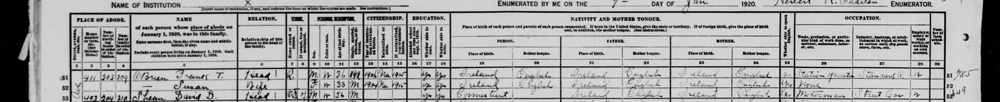
1920 census, San Francisco ED 301 sheet 9B. US census, U.S. National Archives T625, image via FamilySearch, public domain. See it on the full page. - Cathryn Hall household, Portland, Multnomah, OR, page 6, lines 10-11. United States, Census, 1950. NARA, via FamilySearch. original at familysearch.org. Cited for Charles Hall.Archived copy held: 3 files (JSON), fetched 23 Oct 2026.
1 index row we hold: United States, Census, 1950
Name Event Date Place Relatives Record Susan Hall Census 13 April 1950 (born 1887, Ireland) Portland, Multnomah, Oregon, United States child: Cathryn Hall FamilySearch 6XVR-5SFK Transcription we hold (1)
Susan Hall | Mother | W | 63 | Sep | Ireland
- Charles H Hall household, Vancouver, Clark, WA, ED 36, sheet 8A, line 15. United States, Census, 1920. NARA T625, via FamilySearch. original at familysearch.org. Cited for Susan May McCabe.Archived copy held: 8 files (JSON, image), fetched 23 Oct 2026.
1 index row we hold: United States, Census, 1920
Name Event Date Place Relatives Record Susie A Hall Census 1920 (born 1889, Ireland) Vancouver, Clark, Washington, United States child: Margaret E Hall; spouse: Charles H Hall FamilySearch MHJ7-HQ2 Transcription we hold (1)
Susie A. | Wife | F W 31 M | 1898 Na | yes yes | Ireland | Irish | Ireland | Irish | Ireland | Irish | none
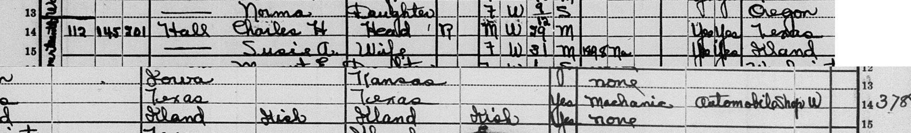
Charles H Hall household, Vancouver, Clark, WA, ED 36, sheet 8A, line 15. US census, U.S. National Archives T625, image via FamilySearch, public domain. See it on the full page. - Charles H Hall household, Vancouver, Clark, WA, ED 36, sheet 8A, lines 14-16 (dwelling 145, family 201). United States, Census, 1920. NARA T625, via FamilySearch. original at familysearch.org. Cited for Charles Hall.Archived copy held: 10 files (JSON, image), fetched 23 Oct 2026.
1 index row we hold: United States, Census, 1920
Name Event Date Place Relatives Record Charles H Hall Census 1920 (born 1891, Texas) Vancouver, Clark, Washington, United States spouse: Susie A Hall; child: Margaret E Hall FamilySearch MHJ7-HQK Transcription we hold (1)
112 | 145 | 201 | Hall Charles H | Head | R | M W 29 M | yes yes | Texas | Texas | Texas | Mechanic | Automobile shop | W
Charles H Hall household, Vancouver, Clark, WA, ED 36, sheet 8A, lines 14-16 (dwelling 145, family 201). US census, U.S. National Archives T625, image via FamilySearch, public domain. See it on the full page. - Charles H Hall, Pilot Point, Denton, Texas. United States, Census, 1920. FamilySearch. original at familysearch.org. Cited for Charles Hall.Archived copy held: 6 files (JSON), fetched 23 Oct 2026.
1 index row we hold: United States, Census, 1920
Name Event Date Place Relatives Record Charles H Hall Census 1920 (born 1891, Texas) Pilot Point, Denton, Texas, United States child: Alma M Hall; child: Charles H Hall; spouse: Cora A Hall; child: James O Hall FamilySearch MHT4-91L Transcription we hold (1)
Charles H Hall | Married | 1920 Pilot Point, Denton, Texas | Birth: 1891 Texas (household: Cora A b. 1897, Alma M 1913, James O 1915, Charles H 1916)
- Charles Hall, b. 1890-91 Texas (21 index rows). United States, Census, 1920. FamilySearch. original at familysearch.org. Cited for Charles Hall.Archived copy held: 2 files (JSON, search log), fetched 23 Oct 2026.
21 index rows we hold: United States, Census, 1920
Name Event Date Place Relatives Record Charles H Hall Census 1920 (born 1891, Texas) Pilot Point, Denton, Texas, United States child: Alma M Hall; child: Charles H Hall; spouse: Cora A Hall; child: James O Hall FamilySearch MHT4-91L Charles H Hall Census 1920 (born 1891, Texas) Vancouver, Clark, Washington, United States spouse: Susie A Hall; child: Margaret E Hall FamilySearch MHJ7-HQK Charles M Hall Census 1920 (born 1890, Texas) McClain, Oklahoma, United States parent: Mary E Hall; parent: Walter C Hall FamilySearch MJ9M-S39 Charlie Hall Census 1920 (born 1890, Texas) Panola, Texas, United States child: Willie Hall; child: Novella Hall; spouse: Rena Hall FamilySearch MHYN-K12 Charlie Hall Census 1920 (born 1891, Texas) Van Zandt, Texas, United States spouse: Mary Hall; child: Mildred Hall; child: Wilson Hall FamilySearch MC92-FZY Charly B Hall Census 1920 (born 1891, Texas) Fresno, Fresno, California, United States FamilySearch MH3L-RCF C H Hall Census 1920 (born 1891, Texas) Lavaca, Texas, United States spouse: Jessie Hall; child: I M Hall; child: Mamie J Hall; child: Hall FamilySearch MHY6-B81 Florence C Hall Census 1920 (born 1890, Texas) Lamar, Texas, United States child: Marvin E Hall; spouse: Charlie W Hall; child: Eva E Hall FamilySearch MCMF-ZQP Henry C Hall Census 1920 (born 1891, Texas) Tarrant, Texas, United States spouse: Myrtle W Hall; child: Wesley R Hall; child: Jesse L Hall FamilySearch MC9V-L14 N C Hall Census 1920 (born 1891, Texas) Tarrant, Texas, United States child: Jodie P Hall; spouse: Wilma W Hall FamilySearch MH1P-3HT William C Hall Census 1920 (born 1890, Texas) Hill, Texas, United States FamilySearch MCS3-27Q Alonzo C Hall Census 1920 (born 1891, Texas) San Antonio, Bexar, Texas, United States child: Alonzo C Hall; spouse: Mable Hall FamilySearch MH1Z-RG5 John C Hall Census 1920 (born 1891, Texas) Clyde, Callahan, Texas, United States child: Juanita Hall; spouse: Davie Hall; child: Raymond A Hall; child: Allene Hall; child: Ruby M Hall FamilySearch MCM9-QKB J C Hall Census 1920 (born 1891, Texas) Justice Precinct 1, Callahan, Texas, United States spouse: Davie Hall; child: Janunata Hall; child: Ruby Hall; child: Alleen Hall; child: Raymon Hall FamilySearch MCM9-QXY Joe C Hall Census 1920 (born 1890, Texas) Justice Precinct 5, Bell, Texas, United States FamilySearch MH1C-M2P Lon C Hall Census 1920 (born 1890, Texas) Caldwell, Burleson, Texas, United States spouse: Mossie Hall FamilySearch MHYR-DJM Andrew C Hall Census 1920 (born 1890, Texas) Lake Valley, Sierra, New Mexico, United States spouse: Hettie Hall; parent: Andrew M Hall; child: Mildred F Hall; child: Odina G Hall; child: A C Hall, Jr; child: Hazel H Hall FamilySearch M4V1-WSD Emma C Hall Census 1920 (born 1891, Texas) Bryan, Oklahoma, United States child: Allen Hall; spouse: Juilliard O Hall; child: Lillian Hall FamilySearch MJ9W-2NK M C Hall Census 1920 (born 1890, Texas) Osage, Oklahoma, United States spouse: Adlene Hall FamilySearch MN1R-8BN Inez C Hall Census 1920 (born Texas) Justice Precinct 5, Denton, Texas, United States parent: Samuel Hall FamilySearch MC9S-ZG2 Mr Hall Census 1920 (born 1891, Texas) Navarro, Texas, United States spouse: Mrs Hall FamilySearch MH1Q-9JD - Household of Arwids F Danenbergs, Liberty Township, Mercer, Ohio. United States, Census, 1950. FamilySearch. original at familysearch.org. Cited for Arvīds Fricis Danenbergs.Archived copy held: 7 files (JSON, image, search log), fetched 21 Oct 2026.
1 index row we hold: United States, Census, 1950
Name Event Date Place Relatives Record Arwids F Danenbergs Census 10 April 1950 (born 1913, Latvia) Liberty Township, Mercer, Ohio, United States spouse: Elvira A Danenbergs; child: Liga Danenbergs; child: Peter V Danenbergs; child: Kalvis V Danenbergs FamilySearch 6XY1-VV2Y Transcription we hold (1)
136 No No Danenbergs, Arwids F Head W M 37 Mar Latvia … WK … 70 Farm Hand Farm P

Household of Arwids F Danenbergs, Liberty Township, Mercer, Ohio. US census, U.S. National Archives, image via FamilySearch, public domain. - United States, Census, 1900. United States, Census, 1900. FamilySearch. original at familysearch.org. Archived copy held: 6 files (JSON, image), fetched 23 Oct 2026.
1 index row we hold: United States, Census, 1900
Name Event Date Place Relatives Record Henry Hall Census 1900 (born September 1892, Texas) Justice Precinct 6, Comanche, Texas, United States parent: Roland Hall FamilySearch M3L4-9TY 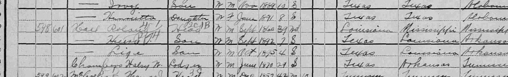
United States, Census, 1900. US census, U.S. National Archives, image via FamilySearch, public domain. See it on the full page. - United States, Census, 1920. United States, Census, 1920. FamilySearch / NARA T625. original at familysearch.org. Cited for Estella May Alderson.Archived copy held: 4 files (JSON, image), fetched 21 Oct 2026.
1 index row we hold: United States, Census, 1920
Name Event Date Place Relatives Record Stella M Alderson Census 1920 (born 1916, Washington) Portland, Multnomah, Oregon, United States parent: May C Alderson; parent: Scott W Alderson FamilySearch M487-BM7 Transcription we hold (1)
Alderson, Scott W | Head ... Oregon | England | United States; May C. | Wife ... 41 ... New York; Stella M. | Daughter | F W 4 S | Washington | Oregon | New York

United States, Census, 1920. US census, U.S. National Archives T625, image via FamilySearch, public domain. - US Census 1910; Minnesota State Census 1905; NUMIDENT; SSDI. US Census 1910; Minnesota State Census 1905; NUMIDENT; SSDI. FamilySearch. original at familysearch.org. Archived copy held: 9 files (JSON), fetched 21 Oct 2026.
1 index row we hold: United States, Census, 1910
Name Event Date Place Relatives Record Irene F Barnes Census 1910 (born 1894, Minnesota) Portland Ward 7, Multnomah, Oregon, United States parent: Verena B Barnes FamilySearch MLB7-F2D - United States, Census, 1910. United States, Census, 1910. FamilySearch / NARA T624. original at familysearch.org. Cited for Carrie May Newman, Lola Lucille Alderson.Archived copy held: 4 files (JSON, image), fetched 21 Oct 2026.
1 index row we hold: United States, Census, 1910
Name Event Date Place Relatives Record Minter S Alderson Census 1910 (born 1867, Oregon) Milwaukie, Clackamas, Oregon, United States child: Elmer E Alderson; spouse: May C Alderson; child: Lola L Alderson FamilySearch MLY2-9PZ Transcription we hold (1)
Alderson, Winter S. | Head | M W 43 M1 18 ... May C. | Wife | F W 33 M1 18 | 2 | 2 | New York

United States, Census, 1910. US census, U.S. National Archives T624, image via FamilySearch, public domain. - United States, Census, 1880; Family Tree. United States, Census, 1880; Family Tree. FamilySearch. original at familysearch.org. Archived copy held: 7 files (JSON, search log, text), fetched 21 Oct 2026.
1 index row we hold: United States, Census, 1880
Name Event Date Place Relatives Record William Walker Census 1880 (born 1843, Canada) Bluffton, Otter Tail, Minnesota, United States child: Annie J. Walker; child: William R. Walker; child: Margret A. Walker; child: Chester A. Walker; child: George Walker; child: Olive M. Walker; child: Mary E. Walker; child: Caroline A. Walker; spouse: Jane R. Walker FamilySearch MZ9V-SSK - Texas, Comanche County Records, 1858-1955; United States, Census, 1900. Texas, Comanche County Records, 1858-1955; United States, Census, 1900. FamilySearch. original at familysearch.org. Archived copy held: 5 files (JSON, search log), fetched 23 Oct 2026.
1 index row we hold: Texas, Comanche County Records, 1858-1955
Name Event Date Place Relatives Record De Witt Hall Birth 9 May 1891 De Leon, Comanche, Texas, United States parent: Harriett Elizabeth Holt; parent: Henry Taylor Hall FamilySearch QGN4-P9HV - United States, Census, 1930. United States, Census, 1930. FamilySearch / NARA T626. original at familysearch.org. Cited for Estella May Alderson.Archived copy held: 5 files (JSON, image), fetched 21 Oct 2026.
1 index row we hold: United States, Census, 1930
Name Event Date Place Relatives Record Stella M Alderson Census 1930 (born 1917, Washington) Portland (Districts 271-553), Multnomah, Oregon, United States parent: Winter S Alderson; parent: Carrie M Alderson FamilySearch XCSS-HWY 
United States, Census, 1930. US census, U.S. National Archives T626, image via FamilySearch, public domain. - 1950 Census of Population, California, Ventura County, ED 56-9 (Camarillo State Hospital). 1950 Census of Population, California, Ventura County, ED 56-9 (Camarillo State Hospital). National Archives (1950census.archives.gov). original at 1950census.archives.gov. Archived copy held: 2 files (image).
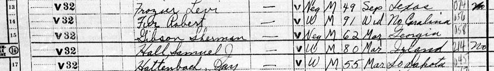
1950 Census of Population, California, Ventura County, ED 56-9 (Camarillo State Hospital). US census, U.S. National Archives, image via the National Archives, public domain. See it on the full page. - United States, Census, 1900 (1325221). United States, Census, 1900 (1325221). FamilySearch. original at familysearch.org. Archived copy held: 5 files (JSON, search log), fetched 24 Oct 2026.
200 index rows we hold (the first 100 of 200): United States, Census, 1900
Name Event Date Place Relatives Record Eddie Hall Census 1900 (born August 1890, Texas) Justice Precinct 1, Comanche, Texas, United States parent: W L Hall; parent: Harriet Hall FamilySearch M3L7-NRC Authur Hall Census 1900 (born March 1890, Texas) Justice Precinct 1, Comanche, Texas, United States parent: Wilson Hall; parent: Mattie Hall FamilySearch M3L7-D81 Morgan L Hall Census 1900 (born October 1889, Louisiana) Comanche, Texas, United States parent: Otie L Hall; parent: Morgan E Hall FamilySearch M3LW-6FM Sissie Hall Census 1900 (born March 1889, Texas) Justice Precinct 1, Comanche, Texas, United States parent: Wilson Hall; parent: Mattie Hall FamilySearch M3L7-D8B Elsie Hall Census 1900 (born November 1891, Texas) Justice Precinct 1, Comanche, Texas, United States parent: Wilson Hall; parent: Mattie Hall FamilySearch M3L7-DDM Maggie E Hall Census 1900 (born May 1892, Louisiana) Comanche, Texas, United States parent: Otie L Hall; parent: Morgan E Hall FamilySearch M3LW-6F9 William A Hall Census 1900 (born October 1889, Kentucky) Justice Precinct 3, Comanche, Texas, United States parent: Nancey J Hall; parent: Martin B Hall FamilySearch M3LW-88T Lena Hall Census 1900 (born August 1889, Texas) Justice Precinct 6, Comanche, Texas, United States parent: Alva E Hall; parent: Ida Hall FamilySearch M3L4-919 Dewitt Hall Census 1900 (born May 1891, Texas) Justice Precinct 5, Comanche, Texas, United States parent: Henry T Hall; parent: H Eliza Hall FamilySearch M3LW-MN2 Bennion Hall Census 1900 (born March 1892, Texas) Justice Precinct 6, Comanche, Texas, United States parent: Alva E Hall; parent: Ida Hall FamilySearch M3L4-91S Lela Hall Census 1900 (born July 1892, Kentucky) Justice Precinct 3, Comanche, Texas, United States parent: Martin B Hall; parent: Nancey J Hall FamilySearch M3LW-88Y Robert H Hall Census 1900 (born March 1892, Texas) Justice Precinct 2, Comanche, Texas, United States parent: Martha Hall FamilySearch M3LW-MSP Drew L Hall Census 1900 (born November 1888, Texas) Justice Precinct 2, Comanche, Texas, United States parent: Martha Hall FamilySearch M3LW-MSG Henry Hall Census 1900 (born September 1892, Texas) Justice Precinct 6, Comanche, Texas, United States parent: Roland Hall FamilySearch M3L4-9TY Lola A Hall Census 1900 (born March 1888, Kentucky) Justice Precinct 3, Comanche, Texas, United States parent: Nancey J Hall; parent: Martin B Hall FamilySearch M3LW-88R Kate Hall Census 1900 (born August 1887, Texas) Justice Precinct 5, Comanche, Texas, United States parent: Henry T Hall; parent: H Eliza Hall FamilySearch M3LW-MNK Madie R Hall Census 1900 (born September 1894, Louisiana) Comanche, Texas, United States parent: Morgan E Hall; parent: Otie L Hall FamilySearch M3LW-6FS Harvey Hall Census 1900 (born May 1886, Texas) Justice Precinct 1, Comanche, Texas, United States parent: W L Hall; parent: Harriet Hall FamilySearch M3L7-NRH Arzona E Hall Census 1900 (born May 1886, Texas) Justice Precinct 2, Comanche, Texas, United States parent: Martha Hall FamilySearch M3LW-MSL Jennie Hall Census 1900 (born March 1894, Texas) Justice Precinct 6, Comanche, Texas, United States parent: Ida Hall; parent: Alva E Hall FamilySearch M3L4-913 Irene Hall Census 1900 (born September 1894, Texas) Justice Precinct 5, Comanche, Texas, United States parent: Henry T Hall; parent: H Eliza Hall FamilySearch M3LW-MNL Ovie Hall Census 1900 (born March 1894, Texas) Justice Precinct 1, Comanche, Texas, United States parent: Wilson Hall; parent: Mattie Hall FamilySearch M3L7-DD9 David N Hall Census 1900 (born February 1885, Texas) Justice Precinct 2, Comanche, Texas, United States parent: Martha Hall FamilySearch M3LW-MS2 Ora Hall Census 1900 (born October 1895, Texas) Justice Precinct 6, Comanche, Texas, United States parent: Alva E Hall; parent: Ida Hall FamilySearch M3L4-91Q Maggie Hall Census 1900 (born October 1885, Texas) Justice Precinct 1, Comanche, Texas, United States parent: Jessie B Hall; parent: Ella Hall FamilySearch M3L7-Y38 Lige Hall Census 1900 (born October 1895, Texas) Justice Precinct 6, Comanche, Texas, United States parent: Roland Hall FamilySearch M3L4-9TB Jesse B Hall Census 1900 (born September 1899, Texas) Comanche, Texas, United States parent: Otie L Hall; parent: Morgan E Hall FamilySearch M3LW-6FQ Otie L Hall Census 1900 (born April 1869, Louisiana) Comanche, Texas, United States child: Morgan L Hall; child: Madie R Hall; child: Jesse B Hall; child: Maggie E Hall; spouse: Morgan E Hall; child: Lucile L Hall FamilySearch M3LW-6X1 Elizabeth Hall Census 1900 (born January 1869, Texas) Comanche, Texas, United States spouse: James Hall FamilySearch M3LW-6XN Lucile L Hall Census 1900 (born May 1897, Texas) Comanche, Texas, United States parent: Morgan E Hall; parent: Otie L Hall FamilySearch M3LW-6F3 James Hall Census 1900 (born May 1856, Alabama) Comanche, Texas, United States spouse: Elizabeth Hall FamilySearch M3LW-6XF Morgan E Hall Census 1900 (born August 1867, Louisiana) Comanche, Texas, United States child: Morgan L Hall; child: Madie R Hall; child: Jesse B Hall; child: Maggie E Hall; child: Lucile L Hall; spouse: Otie L Hall FamilySearch M3LW-6XB Chastain John Hall Census 1900 (born January 1880, Georgia) Comanche, Texas, United States household: James Hall, Elizabeth Hall FamilySearch M3LW-6XJ Ida Hall Census 1900 (born October 1870, Mississippi) Justice Precinct 6, Comanche, Texas, United States child: Jennie Hall; spouse: Alva E Hall; child: Lena Hall; child: Bennion Hall; child: Ora Hall FamilySearch M3L4-91M Holcie Hall Census 1900 (born March 1897, Texas) Justice Precinct 3, Comanche, Texas, United States parent: Nancey J Hall; parent: Martin B Hall FamilySearch M3LW-88B Alva E Hall Census 1900 (born July 1866, Louisiana) Justice Precinct 6, Comanche, Texas, United States child: Jennie Hall; child: Ora Hall; spouse: Ida Hall; child: Bennion Hall; child: Lena Hall FamilySearch M3L4-9B1 F A Hall Census 1900 (born May 1867, Louisiana) Justice Precinct 1, Comanche, Texas, United States household: Jessie B Hall, Ella Hall, May Hall, Maude Hall, Maggie Hall FamilySearch M3LW-H3D May Hall Census 1900 (born June 1881, Texas) Justice Precinct 1, Comanche, Texas, United States parent: Jessie B Hall; parent: Ella Hall FamilySearch M3L7-Y3C Francis T Hall Census 1900 (born March 1876, Texas) Justice Precinct 6, Comanche, Texas, United States spouse: Arthur G Hall; child: Helen M Hall FamilySearch M3LW-K5S Jessie B Hall Census 1900 (born June 1855, Georgia) Justice Precinct 1, Comanche, Texas, United States spouse: Ella Hall; child: Maggie Hall; child: Maude Hall; child: May Hall FamilySearch M3L7-Y34 Margret Hall Census 1900 (born Oct 1831, Georgia) Justice Precinct 1, Comanche, Texas, United States child: Cora Rogers FamilySearch M3LW-QMX Martha Hall Census 1900 (born July 1851, Georgia) Justice Precinct 2, Comanche, Texas, United States child: Robert H Hall; child: Arzona E Hall; child: Drew L Hall; child: David N Hall; child: Joseph N Bolin FamilySearch M3LW-MSV Virgie Hall Census 1900 (born August 1881, Texas) Justice Precinct 5, Comanche, Texas, United States parent: Henry T Hall; parent: H Eliza Hall FamilySearch M3LW-MNJ Roland Hall Census 1900 (born September 1860, Louisiana) Justice Precinct 6, Comanche, Texas, United States child: Henry Hall; child: Lige Hall FamilySearch M3L4-9TT Hubert Hall Census 1900 (born December 1899, Texas) Justice Precinct 1, Comanche, Texas, United States parent: Wilson Hall; parent: Mattie Hall FamilySearch M3L7-DD3 Manervia J Hall Census 1900 (born February 1846, Missouri) Justice Precinct 6, Comanche, Texas, United States spouse: Marion W Hall FamilySearch M3LW-KP5 Alvin Hall Census 1900 (born May 1874, Arkansas) Justice Precinct 2, Comanche, Texas, United States household: John Banner, Maggie Banner, Allie A Banner, Bertie L Banner, James J Banner, Winnie J Banner, John W Banner FamilySearch M3L7-58J Martin B Hall Census 1900 (born November 1864, Kentucky) Justice Precinct 3, Comanche, Texas, United States child: Lela Hall; spouse: Nancey J Hall; child: Lola A Hall; child: William A Hall; child: Holcie Hall FamilySearch M3LW-88P Nancey J Hall Census 1900 (born June 1867, Kentucky) Justice Precinct 3, Comanche, Texas, United States child: Lela Hall; child: Holcie Hall; spouse: Martin B Hall; child: Lola A Hall; child: William A Hall FamilySearch M3LW-885 F A Hall Census 1900 (born Dec 1871, Louisiana) Justice Precinct 1, Comanche, Texas, United States FamilySearch M3L7-PZQ H Eliza Hall Census 1900 (born March 1852, South Carolina) Justice Precinct 5, Comanche, Texas, United States spouse: Henry T Hall; child: Dewitt Hall; child: Virgie Hall; child: Irene Hall; child: Kate Hall; child: Marian Hall FamilySearch M3LW-MNN Marian Hall Census 1900 (born May 1884, Texas) Justice Precinct 5, Comanche, Texas, United States parent: Henry T Hall; parent: H Eliza Hall FamilySearch M3LW-MNV Ella Hall Census 1900 (born January 1861, Texas) Justice Precinct 1, Comanche, Texas, United States spouse: Jessie B Hall; child: Maggie Hall; child: Maude Hall; child: May Hall FamilySearch M3L7-Y3H Arthur G Hall Census 1900 (born March 1874, Texas) Justice Precinct 6, Comanche, Texas, United States spouse: Francis T Hall; child: Helen M Hall FamilySearch M3LW-K59 Elsie Hall Census 1900 (born December 1882, Texas) Justice Precinct 1, Comanche, Texas, United States household: Wilson Hall, Mattie Hall, Sissie Hall, Authur Hall, Elsie Hall, Ovie Hall, Myrtle Hall, Hubert Hall FamilySearch M3L7-DDQ Maude Hall Census 1900 (born January 1883, Texas) Justice Precinct 1, Comanche, Texas, United States parent: Jessie B Hall; parent: Ella Hall FamilySearch M3L7-Y3Z Marion W Hall Census 1900 (born February 1827, Tennessee) Justice Precinct 6, Comanche, Texas, United States spouse: Manervia J Hall FamilySearch M3LW-KPP Henry T Hall Census 1900 (born August 1846, Texas) Justice Precinct 5, Comanche, Texas, United States child: Virgie Hall; child: Irene Hall; child: Dewitt Hall; spouse: H Eliza Hall; child: Kate Hall; child: Marian Hall FamilySearch M3LW-MNF Harriet Hall Census 1900 (born July 1857, Texas) Justice Precinct 1, Comanche, Texas, United States spouse: W L Hall; child: Eddie Hall; child: Harvey Hall FamilySearch M3L7-NR4 Nona Hall Census 1900 (born October 1875, Texas) Justice Precinct 1, Comanche, Texas, United States spouse: Delmon Hall FamilySearch M3L7-VYK Myrtle Hall Census 1900 (born December 1898, Texas) Justice Precinct 1, Comanche, Texas, United States parent: Wilson Hall; parent: Mattie Hall FamilySearch M3L7-DDS Mattie Hall Census 1900 (born December 1867, Tennessee) Justice Precinct 1, Comanche, Texas, United States spouse: Wilson Hall; child: Myrtle Hall; child: Authur Hall; child: Sissie Hall; child: Hubert Hall; child: Ovie Hall; child: Elsie Hall FamilySearch M3L7-D8Y Helen M Hall Census 1900 (born March 1899, Texas) Justice Precinct 6, Comanche, Texas, United States parent: Arthur G Hall; parent: Francis T Hall FamilySearch M3LW-K53 W L Hall Census 1900 (born August 1845, Mississippi) Justice Precinct 1, Comanche, Texas, United States child: Eddie Hall; spouse: Harriet Hall; child: Harvey Hall FamilySearch M3L7-NRW Wilson Hall Census 1900 (born October 1862, Missouri) Justice Precinct 1, Comanche, Texas, United States child: Authur Hall; child: Myrtle Hall; child: Elsie Hall; child: Sissie Hall; spouse: Mattie Hall; child: Ovie Hall; child: Hubert Hall FamilySearch M3L7-D8T Hattie Hall Census 1900 (born October 1884, Texas) Justice Precinct 1, Comanche, Texas, United States spouse: W J Hall FamilySearch M3L7-NR8 Delmon Hall Census 1900 (born February 1877, Texas) Justice Precinct 1, Comanche, Texas, United States spouse: Nona Hall FamilySearch M3L7-VYV W J Hall Census 1900 (born October 1876, Texas) Justice Precinct 1, Comanche, Texas, United States spouse: Hattie Hall FamilySearch M3L7-NRZ Frederick R Hall Census 1900 (born January 1890, Colorado) United States parent: Minnie M Hall; parent: David F Hall FamilySearch MQM4-1BR Rosa E Hall Census 1900 (born October 1890, Colorado) United States parent: Martha Hall; parent: Jno A Hall FamilySearch MQMV-YCG Walter Hall Census 1900 (born May 1890, Colorado) United States parent: Melissa Hall; parent: Norman Hall FamilySearch MQMX-YN4 Henry M Hall Census 1900 (born June 1890, Colorado) United States parent: Minard R Hall; parent: Mary A Hall FamilySearch MQMK-WXC Chester Hall Census 1900 (born Apr 1890, California) United States parent: Viola E Hall; parent: Thomas Hall FamilySearch M9PH-32W Albertina Hall Census 1900 (born January 1890, Nevada) United States parent: Sarah Riter; parent: Oscar Riter FamilySearch MMBQ-BVC Arthur Hall Census 1900 (born September 1890, Florida) United States parent: Violet Williams FamilySearch M3DR-WFF Cara B Hall Census 1900 (born March 1889, New Hampshire) United States parent: Frank E Hall; parent: Bertha A Hall FamilySearch M3Y3-XS4 Harry Hall Census 1900 (born February 1891, Wash) United States parent: Matilda Hall; parent: Henry D Hall FamilySearch MMPZ-TRD Edward Hall Census 1900 (born June 1891, Nevada) United States parent: Sarah Riter; parent: Oscar Riter FamilySearch MMBQ-BVH George Hall Census 1900 (born Jul 1891, Washington) United States parent: Cora Hall; parent: Henry Hall FamilySearch MMP1-C8N Murl L Hall Census 1900 (born December 1889, Kansas) United States parent: Horace Hall; parent: Annie Hall FamilySearch MQMH-6L9 Robert V Hall Census 1900 (born May 1889, Florida) United States parent: William W Hall; parent: Sarah J Hall FamilySearch M368-S34 Emma B Hall Census 1900 (born June 1891, Florida) United States parent: Sarah B Hall; parent: Murray Hall FamilySearch M3D5-Y87 Mellie Hall Census 1900 (born April 1891, Florida) United States parent: Lizzie Hall; parent: W F Hall FamilySearch M36H-Q1B Clara T. Hall Census 1900 (born August 1889, Utah) United States parent: John Hall; parent: Almyra Hall FamilySearch MMRP-5GP Katie Hall Census 1900 (born Jun 1889, Florida) United States parent: Perry Hall FamilySearch M36X-8KJ William Hall Census 1900 (born April 1889, Colorado) United States parent: Fannie Hall; parent: Meriman E Hall FamilySearch MQMH-WLX Frank Hall Census 1900 (born May 1889, Washington) United States parent: Cora Hall; parent: Henry Hall FamilySearch MMP1-C8F Willis R Hall Census 1900 (born May 1891, Florida) United States parent: William W Hall; parent: Sarah J Hall FamilySearch M368-S3H Elmer E Hall Census 1900 (born April 1891, Colorado) United States parent: Horace Hall; parent: Annie Hall FamilySearch MQMH-6LS Elton W Hall Census 1900 (born September 1889, Florida) United States parent: Sarah B Hall; parent: Murray Hall FamilySearch M3D5-Y8Q Frank Hall Census 1900 (born September 1889, Kentucky) Poor Fork, Harlan, Kentucky, United States parent: Elizabeth Hall; parent: Alfred D Hall FamilySearch M948-24H Laura Hall Census 1900 (born Aug 1891, Washington) United States parent: Emma Hall; parent: Alexander Hall FamilySearch MMPV-XSM William Hall Census 1900 (born September 1891, Pennsylvania) United States parent: Elmer Hall; parent: Susan Hall FamilySearch M3SG-Z1S David Hall Census 1900 (born February 1889, Florida) United States parent: Lizzie Hall; parent: W F Hall FamilySearch M36H-Q1Y Gertrude C Hall Census 1900 (born April 1891, Colorado) United States parent: May Hall; parent: Joseph W Hall FamilySearch MQMH-C5Z Edward Hall Census 1900 (born May 1889, Florida) United States parent: Page T Hall; parent: Sarah Hall FamilySearch M368-ZKM Lenora L Hall Census 1900 (born June 1888, Colorado) United States parent: Minard R Hall; parent: Mary A Hall FamilySearch MQMK-WXH Frederick Hall Census 1900 (born Feb 1892, Colorado) United States parent: Mary Hall; parent: William Hall FamilySearch MQM3-2BK Cora Hall Census 1900 (born May 1888, Colorado) United States parent: Henry D Hall; parent: Matilda Hall FamilySearch MMPZ-TR8 Essie W Hall Census 1900 (born October 1892, Florida) United States parent: Benjamin F Hall; parent: Florence L Hall FamilySearch M3DR-DQC - See README. Civil births; Census of Ireland 1901. irishgenealogy.ie; National Archives of Ireland. original at irishgenealogy.ie. Cited for Susan May McCabe.Archived copy held: 1 file (search log).
- Susan Hall household, Portland, sheet 2B, lines 49-50. United States, Census, 1940. NARA T627, via FamilySearch. original at familysearch.org. Cited for Susan May McCabe.Archived copy held: 2 files (JSON), fetched 23 Oct 2026.
1 index row we hold: United States, Census, 1940
Name Event Date Place Relatives Record Susan Hall Census 1940 (born 1890, Northern Ireland) Tract 22, Portland, Portland City Election Precinct 288, Multnomah, Oregon, United States child: Catherine Hall FamilySearch VRTY-HL8 Transcription we hold (1)
Susan Hall | Head | 50 | W[idowed] | Northern Ireland
- Susan McCabe in Chapman household. United States, Census, 1910. NARA T624, via FamilySearch. original at familysearch.org. Archived copy held: 8 files (JSON, image, search log), fetched 24 Oct 2026.
1 index row we hold: United States, Census, 1910
Name Event Date Place Relatives Record Susan McCabe Census 1910 (born 1885, Ireland) San Francisco Assembly District 41, San Francisco, California, United States household: Wilfred B Chapman, Dora Chapman, Dorothy E Chapman, Sherwood Chapman, Eliza N Sherwood, Margaret McKemner, Ellen Conolly, Elizabeth W Ide, Companion FamilySearch MVG6-4MR 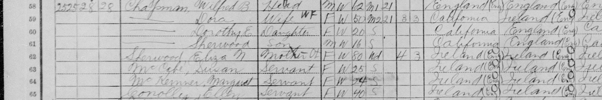
Susan McCabe in Chapman household. US census, U.S. National Archives T624, image via FamilySearch, public domain. See it on the full page. - Susie Hall household, Portland, Multnomah, OR, ED 26-472, sheet 2A, lines 47-50. United States, Census, 1930. NARA T626, via FamilySearch. original at familysearch.org. Cited for Susan May McCabe.Archived copy held: 5 files (JSON, image), fetched 23 Oct 2026.
1 index row we hold: United States, Census, 1930
Name Event Date Place Relatives Record Susie Hall Census 1930 (born 1890, Northern Ireland) Portland (Districts 271-553), Multnomah, Oregon, United States child: Catherine E Hall; child: Charles H Hall; child: Margaret E Hall FamilySearch XCS4-7GR Transcription we hold (1)
1225 | 115 | 115 | Hall, Susie | Head-H | R | 13.50 | R | No | F | W | 40 | M | 29 | No | Yes | Northern Ireland | Northern Ireland | Northern Ireland | English | 1903 | Na | Yes | Servant | Private family
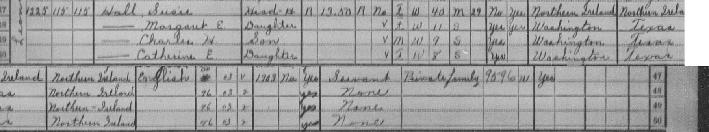
Susie Hall household, Portland, Multnomah, OR, ED 26-472, sheet 2A, lines 47-50. US census, U.S. National Archives T626, image via FamilySearch, public domain. See it on the full page.
Passenger lists and border crossings
- IRO nominal roll, DP emigration to USA, sailing ex Bremerhaven for Boston, Mass., 28 June 1949, USAT General Blatchford, page 41. 3.1.3.2 Emigrations in 1949, IRO nominal roll, USAT General Blatchford (unit 8302110, DescId 21872). Arolsen Archives, International Center on Nazi Persecution, Bad Arolsen. DE ITS 3.1.3.2, ref. 8302110, file F-6-2421, DocID 81660428 (header page: DocID 81660388). original at collections.arolsen-archives.org. Cited for Arvīds Fricis Danenbergs.Archived copy held: 4 files (JSON, image).
Transcription we hold (1)
608 39405 855473 Danenbergs Arvids C Latvian Ev. Md Ma 36 Latvia Economist NLC Rockford, Ohio / 609 … Elvira … Md F 37 Latvia Pharmacist NLC Rockford, Ohio / 610 … Peteris … S Ma 6 Latvian … NLC Rockford, Ohio
- IRO nominal roll, SS Scythia, Bremen-Grohn to Canada, page 17. 3.1.3.2 Emigrations in 1949. Arolsen Archives, International Center on Nazi Persecution, Bad Arolsen. DE ITS 3.1.3.2, ref. 8307630, DocID 81713787. original at collections.arolsen-archives.org. Cited for Mirdza Augusta Sirlaka.Archived copy held: 3 files (JSON, image).
Transcription we hold (1)
412. 668673 SIRLAKS Mierdza C Latvia R.C. S F 32 Latvia Domestic G.A.Z.
- IRO nominal roll, USAT General Blatchford, 28 June 1949, page 74. 3.1.3.2 Emigrations in 1949, IRO nominal roll, USAT General Blatchford (unit 8302110, DescId 21872). Arolsen Archives, International Center on Nazi Persecution, Bad Arolsen. DE ITS 3.1.3.2, ref. 8302110, DocID 81660461. original at collections.arolsen-archives.org. Cited for Emma Smukule.Archived copy held: 3 files (JSON, image).
Transcription we hold (1)
1099 39463 Sirlaks Emma Latvian prot. W F 64 Latvia housekeeper NLC Erie County, Ohio
- IRO nominal roll, USS General Howze, Bremen-Grohn, page 65. 3.1.3.2 Emigrations in 1950. Arolsen Archives, International Center on Nazi Persecution, Bad Arolsen. DE ITS 3.1.3.2, ref. 8302800, DocID 81666500. original at collections.arolsen-archives.org. Cited for Biruta Zeltīte Sirlaka.Archived copy held: 3 files (JSON, image).
Transcription we hold (1)
1095 119875 855706 Balks Vitolds C LAT Prot. Md Ma 28 LAT farm-worker J. Smalley (NLC) R. 3, Rockford, Ohio / 1096 … Biruta … housewife / 1097 … Ilze … S F 4 GER child
- Manifest of In-bound Passengers (Aliens), No. 27, USAT General Blatchford, Bremerhaven 28 June 1949 → Boston 7 July 1949. Passenger Lists of Vessels Arriving at Boston, Massachusetts, 1944–1954 (microfilm A3604). U.S. National Archives (NARA), RG 85. NAID 76075234, image 80 of 651, object 76075314, file 41253_B124264-01101.jpg, lines 4–8. original at catalog.archives.gov. Cited for Arvīds Fricis Danenbergs, Elvīra Antonija Sirlaka, Kalvis Danenbergs, Liga Danenberg, Peter Valentins Danenbergs.Archived copy held: 1 file (image).
Transcription we hold (1)
DANENBERGS Arvids Rockford, Ohio 36 Ma Md I-849016 Latvian … ADMITTED JUL 7 1949 BOSTON, MASS.

Manifest of In-bound Passengers (Aliens), No. 27, USAT General Blatchford, Bremerhaven 28 June 1949 → Boston 7 July 1949. US passenger list, U.S. National Archives RG 85, image via the National Archives, public domain. - Manifest of In-bound Passengers (Aliens), No. 48, USAT General Blatchford, Bremerhaven 28 June 1949 → Boston. Passenger Lists of Vessels Arriving at Boston, Massachusetts, 1944–1954 (microfilm A3604). U.S. National Archives (NARA), RG 85. NAID 76075234, image 122 of 651, object 76075356, file 41253_B124264-01143.jpg, line 17. original at catalog.archives.gov. Cited for Emma Smukule.Archived copy held: 1 file (image).
Transcription we hold (1)
SIRLAKS Emma Erie County, Ohio 64 F W I-790421 Latvian Med. Cert. B. No 6(b)
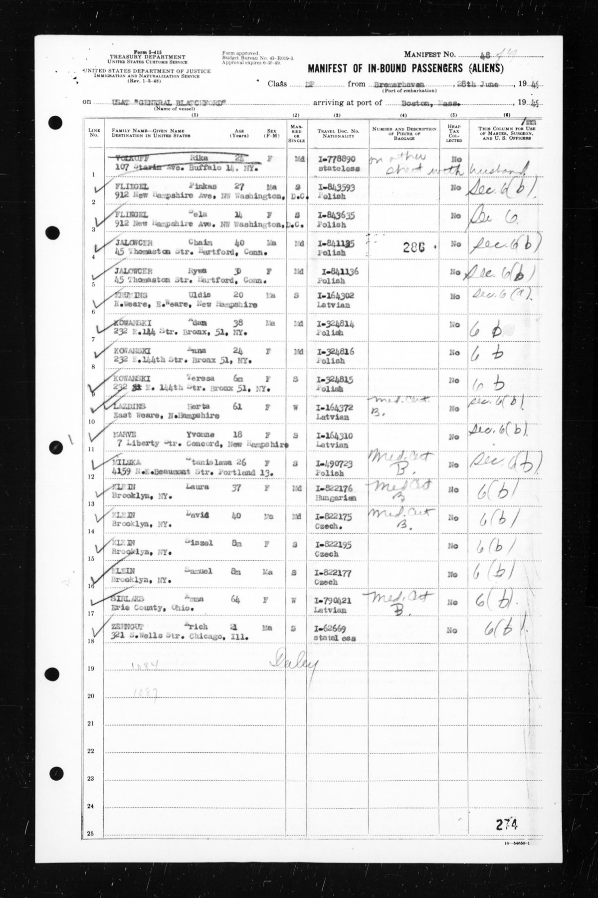
Manifest of In-bound Passengers (Aliens), No. 48, USAT General Blatchford, Bremerhaven 28 June 1949 → Boston. US passenger list, U.S. National Archives RG 85, image via the National Archives, public domain. - Michigan, Wayne, Detroit, Manifests of Arrivals at the Port of Detroit, 1906-1956. Michigan, Wayne, Detroit, Manifests of Arrivals at the Port of Detroit, 1906-1956. FamilySearch. original at familysearch.org. Cited for Mirdza Augusta Sirlaka.Archived copy held: 7 files (JSON, image, search log), fetched 21 Oct 2026.
Transcription we hold (1)
SIRLAKS, Mirdza Auguste … nurse's aid … 2475 Quesnel St., Montreal, Quebec … 1/17/16, Cesis, Latvia … Stateless … To visit mother. 10 days … c/o E.Sirlaks-D.R.Smalley Farms,Rockford, Ohio

Civil, military and court records
- 48th Co., 12th Bn., 166th D.B., Camp Lewis, Wash., Dec. [4?], 1918: Losses for the month of November. United States, Enlisted and Officer Muster Rolls and Rosters, 1916-1939 (FS 3346936; NARA 85713803), Roll 2105. NARA, via FamilySearch. NARA Roll 2105, DGS 106875374, image 540. original at familysearch.org. Cited for Charles Hall.Archived copy held: 9 files (JSON, image, table), fetched 24 Oct 2026.
Transcription we hold (1)
LOSSES FOR THE MONTH OF NOVEMBER: ... 20. Hall, Charles H. 2274478 Trans Nov. 11th
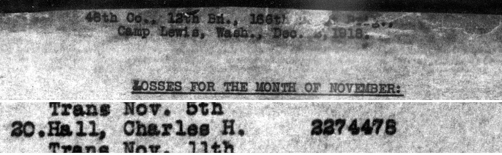
48th Co., 12th Bn., 166th D.B., Camp Lewis, Wash., Dec. [4?], 1918: Losses for the month of November. US federal record, U.S. National Archives, image via FamilySearch, public domain. See it on the full page. - Ainas Sirlakas atmiņas ("Vīstuči"), Aina Jurciņa née Sirlaka, Priekuļi, 1998. Ainas Sirlakas atmiņas (1998 memoir, 53 pp. typescript). family papers (Raimonds Voroņins, 2026-10-24). p. 4, section "VĪSTUČU TAPŠANA". full text not published; facts and short quotations only. Cited for Aina Modrīte Sirlaka, Aksels Pirainens, Alberts Jurciņš, Aleksandrs Martinsons, Alfrēds Jurciņš, Alfrēds Āboltiņš, Alma Leontīne Āboltiņa, Alvīne Sirlaka and 71 more.Archived copy held: 1 file (PDF).
Transcriptions we hold (131)
Mārtiņš Vilhelms 1883.30.X … Visi dzimuši “Vīstučos”.
Translation: Mārtiņš Vilhelms, 30 October 1883 … All born at "Vīstuči".
Viņš turēja nelielu pārtikas veikaliņu Lielajā Katrīnas ielā, kur palīdzēja sieva Emma
Translation: He kept a small food shop on Lielā Katrīnas iela, where his wife Emma helped
Viņu tur novedusi cukurslimība.
Translation: Diabetes brought him there [to the grave].
Jākasē nauda procentiem aizņēmumam Zemes bankā. Tas paņemts, lai samaksātu pārējiem "Vīstuču" mantiniekiem viņu daļu.
Translation: Money had to be scraped together for the interest on the Land Bank loan, which had been taken to pay the other heirs of "Vīstuči" …
kur palīdzēja sieva Emma, ļoti glīta, pilsētnieciska, inteliģenta kundze
Translation: where his wife Emma helped, a very pretty, urbane, cultured lady
Meitas kopā ar māti emigrēja uz ASV, kur dzīvo vēl šodien labi un pārticīgi. Emma aizgājusi mūžībā.
Translation: The daughters emigrated with their mother to the USA, where they still live well and prosperously today. Emma has passed away.
Viņiem bija 3 meitas: Elvīra, Mirdza un Rūta. Elvīra kļuva farmaceite, Mirdza žēlsirdības māsa, Rūta- vetārste.
Translation: They had 3 daughters, Elvīra, Mirdza and Rūta. Elvīra became a pharmacist, Mirdza a nurse, Rūta a veterinarian.
Pēteris Sirlaks 1847.10.III- 1896.10.XI, iesvētīts 1874.10.II
Translation: Pēteris Sirlaks, 10 March 1847 – 10 November 1896, "confirmed" 10 February 1874
1872.g. "Vīstuči" nopirkti no fon Pandera
Translation: 1872: "Vīstuči" bought from von Pander
bijis no savas apkārtnes tā laika “Mājas Viesis” korespondents
Translation: he was the correspondent of the then "Mājas Viesis" for his district
Pēteris Sirlaks 1847.10.III- 1896.10.XI
Translation: Pēteris Sirlaks … died 10 November 1896
Savu Pēteri viņa apglabāja jaunajā Jaunraunas kapsētā 49 gadus jaunu.
Translation: She buried her Pēteris in the new Jaunrauna cemetery, only 49 years old.
- Arvids Danenbergs. Danenbergs family history. AncientFaces (from US Social Security Death Index). original at ancientfaces.com. Cited for Arvīds Fricis Danenbergs.Archived copy held: 1 file (web page), fetched 25 Oct 2026.
Transcription we hold (1)
Arvids Danenbergs of Cassopolis, Cass County, MI was born on January 4, 1913. Arvids Danenbergs died at age 83 years old on February 19, 1996.
- Bavarian, Quebec, June 1905, line 23. Canada, Passenger Lists, 1881-1922. Library and Archives Canada, via FamilySearch. FS 1:1:2Q3H-W4D; image 3:1:S3HY-65KS-WT9. original at familysearch.org. Archived copy held: 7 files (JSON, image, search log), fetched 23 Oct 2026.
1 index row we hold: Canada, Passenger Lists, 1881-1922
Name Event Date Place Relatives Record Susan Mccabe Immigration Jun 1905 (born 1888, Ireland) Quebec City, Quebec, Canada FamilySearch 2Q3H-W4D - Birth index D9PK-3D6Z; marriage return QP9S-77KX. Washington, County Birth Registers; Washington, County Marriages. WA DOH; Skamania County Auditor; via FamilySearch. original at familysearch.org. Cited for Margaret Hall.Archived copy held: 8 files (JSON, image, search log), fetched 23 Oct 2026.
1 index row we hold: Washington, County Marriages, 1855-2008
Name Event Date Place Relatives Record Margaret E Hall Birth 1918 parent: Chas Hall; parent: Susan McCabe; spouse: Robert H Elfstare FamilySearch QP9S-77KX Transcription we hold (1)
18—Father's Name: Chas. Hall | 19—Mother's Maiden Name: Susan McCabe | 16—Birthplace: Vancouver Wash.
- Birth of Susan McCabe, 1887, Dublin South, group registration ID 11188585. Civil Records, Births. General Register Office (Ireland), via irishgenealogy.ie. GRO births 1887, vol. 02572 image 1951059. original at irishgenealogy.ie. Archived copy held: 3 files (PDF, image, search log).
- Birth, Christina McCabe, Donnybrook 1898, no. 265. Civil births. GRO Ireland, via irishgenealogy.ie. original at irishgenealogy.ie. Archived copy held: 2 files (PDF, image).
- Birth, Susan McCabe, 1884, Cootehill. Civil Registration (GRO), Ireland. General Register Office, via irishgenealogy.ie. cibi-11152265. original at irishgenealogy.ie. Archived copy held: 6 files (PDF, image).
- Blīdene births 1884 no. 12. Blieden und Stuhrhof Lutheran parish registers. LVVA, via Raduraksti. LVVA f. 235, apr. 6, l. 191, frame 7. LVVA f. 235, apr. 6, l. 191, image ?. original at raduraksti.arhivi.lv. Archived copy held: 2 files (image).
- Blīdene births 1889 no. 36. Blieden und Stuhrhof Lutheran parish registers. LVVA, via Raduraksti. LVVA f. 235, apr. 6, l. 196. LVVA f. 235, apr. 6, l. 196, image ?. original at raduraksti.arhivi.lv. Archived copy held: 2 files (image).
- Blīdene births 1889 no. 4. Blieden und Stuhrhof Lutheran parish registers. LVVA, via Raduraksti. LVVA f. 235, apr. 6, l. 196. LVVA f. 235, apr. 6, l. 196, image ?. original at raduraksti.arhivi.lv. Archived copy held: 2 files (image).
- Certificate of Live Birth: Phillis May Barns. Washington birth certificates (noncertified informational copy, VitalChek order 228972479). Washington State Department of Health, Center for Health Statistics. State file number 146-1916-005906; filed 1916-05-12; issued 2026-10-22. Cited for Estella May Alderson.Archived copy held: 1 file (PDF).
Transcription we hold (1)
PHILLIS MAY / BARNS / MAY 05, 1916 04:30 AM / SEATTLE, KING COUNTY, WASHINGTON / IRENE BARNS / WASHINGTON / 18 YEARS / JOHN SMITH / WASHINGTON / 20 YEARS / MAY 12, 1916
- Charles Henry Hall, Mariposa County, California, card 107 / no. 7. United States, World War I Draft Registration Cards, 1917-1918. NARA M1509, via FamilySearch. original at familysearch.org. Cited for Charles Hall.Archived copy held: 6 files (JSON), fetched 23 Oct 2026.
1 index row we hold: United States, World War I Draft Registration Cards, 1917-1918
Name Event Date Place Relatives Record Charles Henry Hall MilitaryDraftRegistration from 1917 to 1918 (born 12 Sep 1891, Comanche, Texas, United States) Mariposa, California, United States FamilySearch KZV2-B77 Transcription we hold (1)
Charles Henry Hall | 25 | El Portal California | September 12th 1891 | Natural born citizen | Comanche Texas U.S.A. | Farmer | F.W. McCauley El Portal Calif | Single | Caucasian | Chas. Hall
- Danenbergs, Ēriks. Latvijas Universitātes studentu saraksts 1919–1944. data.gov.lv. original at data.gov.lv. Archived copy held: 1 file (JSON).
- Death, Eliza McCabe, 45, Donnybrook 1903, no. 312. Civil deaths. GRO Ireland, via irishgenealogy.ie. original at irishgenealogy.ie. Archived copy held: 2 files (PDF, image).
- Death, Susan McCabe, 2, South Dublin 1889, no. 279. Civil deaths. GRO Ireland, via irishgenealogy.ie. original at irishgenealogy.ie. Archived copy held: 2 files (PDF, image).
- Declaration of Intention No. 132, Mrs. Emma Sirlaks. Ohio, County Naturalization Records, 1800-1977. FamilySearch. original at familysearch.org. Cited for Emma Smukule.Archived copy held: 7 files (JSON, image, search log), fetched 21 Oct 2026.
1 index row we hold: Ohio, County Naturalization Records, 1800-1977
Name Event Date Place Relatives Record Emma Sirlaks Naturalization 1950 (born 6 Jan 1885, Branti, Latvia) Ohio, United States FamilySearch QG1G-Z966 Transcription we hold (1)
Mrs. Emma Sirlaks … Housewife … 65 … Jan. 6, 1885 in Branti, Latvia … I am widowed … Elvira Danenbergs-F- Jan. [overwritten] 1912--Riga, Latvia--Rockford, Ohio / Mirdza Sirlaks-f-Jan. 17, 1916-Cesis, Latvia--Montreal, Canada / Biruta Balks--F--June 3, 1919--Cesis, Latvia--Rockford, Ohio
- Declaration of Intention No. 133, Elvira Danenbergs, Celina, Ohio, 14 Aug 1950. Ohio, County Naturalization Records, 1800-1977. FamilySearch. original at familysearch.org. Cited for Arvīds Fricis Danenbergs, Elvīra Antonija Sirlaka.Archived copy held: 7 files (JSON, image, search log), fetched 21 Oct 2026.
1 index row we hold: Ohio, County Naturalization Records, 1800-1977
Name Event Date Place Relatives Record Arvids Danenbergs Naturalization born 17 Jan 1913 Ohio, United States FamilySearch QG1L-RCLT Transcription we hold (1)
(5) I was born on Jan. 9, 1912 in Riga Latvia
- Declaration of Intention No. 134, Arvids Danenbergs, Mercer County Common Pleas, Celina, Ohio, 14 Aug 1950. Ohio, County Naturalization Records, 1800-1977. FamilySearch. original at familysearch.org. Cited for Arvīds Fricis Danenbergs, Kalvis Danenbergs, Liga Danenberg, Peter Valentins Danenbergs.Archived copy held: 7 files (JSON, image, search log), fetched 21 Oct 2026.
1 index row we hold: Ohio, County Naturalization Records, 1800-1977
Name Event Date Place Relatives Record Arvids Danenbergs Naturalization 1950 (born 17 Jan 1913, Sturumuiza, Latvia) Ohio, United States FamilySearch QG1G-DHZZ Transcriptions we hold (5)
(5) I was born on Jan. 17, 1913 in Sturumuiza Latvia
(9) My last place of foreign residence was Augsburg, Germany (10) I emigrated to the United States from Bremerhaven, Germany (11) My lawful entry for permanent residence in the United States was at Boston, Mass. under the name of Arvids Danenburgs on July 7, 1949 on the Gen. Blatchford … Certification No. A-7218970
Subscribed and sworn to … Celina, Ohio this 14th day of August anno Domini 1950
Peteris Danenbergs -- M--Sept. 17, 1942-Riga, Latvia-Rockford, Ohio
Kalvis Danenbergs--M--1946-Augsburg, Germany--Rockford, Ohio / Liga Danenbergs-F--1946-Augsburg, Germany--Rockford, Ohio
- Estella - Newman - Alderson - Et Al.. Department of Health, Delayed Birth Records, 1860-1924. Washington State Archives, Digital Archives. doh_db_00205057; Vol. 26, State File No. 342. original at digitalarchives.wa.gov. Cited for Estella May Alderson.Archived copy held: 1 file (PDF).
Transcription we hold (1)
Estella May Alderson ... Female ... May 5, 1916 ... Seattle ... King ... Winter Scott Alderson ... Carrie May Newman ... * Affiant states she is the mother of the child stated. ** Affiant states she is the older sister of the child and lived in Seattle with her parents at the time of the birth. ... I certify that no prior certificate has been found for this registrant ... Filed at Seattle, Washington, on April 7, 1952
- Forstmanis, Rūdolfs. Latvijas Universitātes studentu saraksts 1919–1944 (open data XML). LVVA / data.gov.lv. original at data.gov.lv. Archived copy held: 1 file (JSON).
- From the Sun's Special Correspondents: Mariposa, Merced County Sun, 27 Jul 1917. Merced County Sun. California Digital Newspaper Collection. original at cdnc.ucr.edu. Cited for Charles Hall.Archived copy held: 2 files (text, web page), fetched 25 Oct 2026.
Transcription we hold (1)
107 Chas. Henry Hall, El Portal.
- Getraute im Jahre 1884, no. 55. Rauna 1884 marriages (duplicate). LVVA, via Raduraksti. LVVA f. 235, apr. 7, l. 518, img 5 (right page). LVVA f. 235, apr. 7, l. 518, image 5. original at raduraksti.arhivi.lv. Archived copy held: 2 files (image).
- Hall, Charles Henry / Margaret Ellen, Clarke, Susan McCab, 1-6-19. Washington, County Birth Registers, 1873-1965 (state birth index, Hall page). Washington State Department of Health, via FamilySearch. original at familysearch.org. Cited for Charles Hall.Archived copy held: 4 files (JSON, image), fetched 21 Oct 2026.
Transcription we hold (1)
400 Hall, Charles Henry | Margaret Ellen | Clarke | Susan McCab | 1-6-19 | F | W | 129
- Hall, Charles Henry, 6-11-20, Clarke. Washington, County Birth Registers, 1873-1965. WA DOH, via FamilySearch. original at familysearch.org. Cited for Charles Henry Hall.Archived copy held: 6 files (JSON, image), fetched 21 Oct 2026.
1 index row we hold: Washington, County Birth Registers, 1873-1965
Name Event Date Place Relatives Record Charles Henry Hall Birth 11 Jun 1920 Washington, United States parent: Tusan McCab; parent: Charles Henry Hall FamilySearch DDNT-LYT2 Transcription we hold (1)
400 Hall, Charles Henry | Charles Henry | Clarke | Tusan McCab | 6-11-20 | M | W | 269
- Hall, Charles Henry, Vancouver Wash, b. 9/12/90. United States, Veterans Administration Master Index, 1917-1940. VA, via FamilySearch. original at familysearch.org. Cited for Charles Hall.Archived copy held: 7 files (JSON, image), fetched 23 Oct 2026.
1 index row we hold: United States, Veterans Administration Master Index, 1917-1940
Name Event Date Place Relatives Record Charles Henry Hall MilitaryService Apr 1919 (born 12 Sep 1890) Vancouver, Clark, Washington, United States FamilySearch Q5GN-L53Z Transcription we hold (1)
HALL CHARLES HENRY | Pvt B H Co A 316 MP | Vancouver Wash | Sn 2 274 478 | Born 9/12/90 | Died 9-12-61 | Dis 4/ /19 | XC 198 015
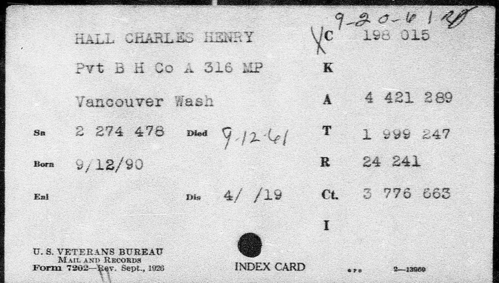
Hall, Charles Henry, Vancouver Wash, b. 9/12/90. US federal record, U.S. Department of Veterans Affairs, image via FamilySearch, public domain. See it on the full page. - Hall, Chas. H. / Catherine, Vancouver, 2-12-22 (same image as DDNT-LYT2). Washington, County Birth Registers, 1873-1965 (state index image). WA DOH, via FamilySearch. original at familysearch.org. Cited for Catherine Elizabeth Hall.Archived copy held: 5 files (JSON, image, search log), fetched 23 Oct 2026.
Transcription we hold (1)
400 Hall, Chas. H. | Catherine | Vancouver | Lusan McCab | 2-12-22 | F | W | 46
- In re Hall, 1943 OK CR 128, 143 P.2d 833, 78 Okl.Cr. 83. Justia (Oklahoma Court of Criminal Appeals). original at law.justia.com. Archived copy held: 1 file (text).
- Index row: Sirlaka, Anna, Pēteris, 1890-04-14, Jaunraunas pag., Jaunraunas pag.. Latvijas iedzīvotāju pases (1918–1940), name index. Latvian State Archives (LNA), via Raduraksti link. none given by the index. original at pases.arhivi.lv. Cited for Anna Sirlaka.Archived copy held: 1 file (JSON).
Transcription we hold (1)
Sirlaka | Anna | Pēteris | 1890-04-14 | Jaunraunas pag. | Jaunraunas pag.
Translation: surname | given name | father's name | birth date | birthplace | domicile
- Many Mariposans Claiming Exemption, Mariposa Gazette, 18 Aug 1917. Mariposa Gazette. California Digital Newspaper Collection (UC Riverside). original at cdnc.ucr.edu. Cited for Charles Hall.Archived copy held: 2 files (JSON, search log).
Transcription we hold (1)
Passed and No Exemption Claimed. Serial Order No. Name Address No ... 107 Charles Henry Hall, EI Portal. Cal .... 10
- Marriage licence 13120, O'Brien-McCabe, 1911. California, County Marriages, 1850-1953. San Francisco County Recorder, via FamilySearch. FS 1:1:QL4Y-GYQN; image 3:1:33SQ-G5N9-DQQ; index QL4Y-R1PV, QL45-XH8T, QL4P-G5JB. original at familysearch.org. Archived copy held: 7 files (JSON, image, search log), fetched 23 Oct 2026.
1 index row we hold: California, San Francisco County Records, 1824-1997
Name Event Date Place Relatives Record Susan McCabe Birth 1888 spouse: Frank Patrick O'Brien FamilySearch QL4Y-GYQN - Marriage statistics, Charles H Hall and Stella M Rowley, Clark Co., 11 May 1946. Washington, County Marriages, 1855-2008. Clark County Auditor, via FamilySearch. original at familysearch.org. Cited for Charles Hall.Archived copy held: 9 files (JSON, image, search log), fetched 21 Oct 2026.
1 index row we hold: Washington, County Marriages, 1855-2008
Name Event Date Place Relatives Record Charles H Hall Birth 1921 parent: Charles H Hall; spouse: Stella M Rowley; parent: Susan McCabe FamilySearch Q2ZV-1VXG Transcription we hold (1)
Name of Father: Charles H. Hall Sr. | Birthplace of Father: Texas | Maiden Name of Mother: Susan McCabe | Birthplace of Mother: Ireland
- marriage summary lists. Rauna parish yearly duplicates (L M) 1875–1885. LVVA, via Raduraksti. LVVA f. 235, apr. 4, l. 2037–2046; apr. 7, l. 518–519. LVVA f. 235, apr. 4, l. 2037, image ?. original at raduraksti.arhivi.lv. Archived copy held: 12 files (image).
- Marriage, McCabe–Curran, 1883. Civil Registration (GRO), Ireland. General Register Office, via irishgenealogy.ie. cima-2238868. original at irishgenealogy.ie. Archived copy held: 4 files (PDF, image).
- Marriage, Patrick MacCabe and Elizabeth Redmond, Donnybrook 1881, no. 108. Civil marriages. GRO Ireland, via irishgenealogy.ie. original at irishgenealogy.ie. Archived copy held: 2 files (PDF, image).
- Men Called to Arms From Mariposa County, Mariposa Gazette, 25 Aug 1917. Mariposa Gazette. California Digital Newspaper Collection. original at cdnc.ucr.edu. Cited for Charles Hall.Archived copy held: 2 files (JSON, search log).
Transcription we hold (1)
All claims made for exemption by married men were granted by the local Board, and all single men were denied exemption ... 107 Charles Henry Hall. El Portal. Cal. 10
- Peters Sirlaks, Jaunraunas kapi. Cemety.lv (cemetery management database, Cēsu novads). original at cemety.lv. Cited for Pēteris Sirlaks.Archived copy held: 3 files (image, web page).
Transcription we hold (1)
Peters Sirlaks Dzimšanas datums: 10.08.1847, Miršanas datums: 10.11.1896 … Sektors 001 Rinda – Vieta 427
Translation: Peters Sirlaks, date of birth 10 Aug 1847, date of death 10 Nov 1896, sector 001, place 427
- Phillis May Barns, 5 May 1916. Washington, County Birth Registers, 1873-1965 (coll. 3418468). FamilySearch (WA Dept. of Health statewide birth index, filmed). DGS 101140005 image 721, rec. 76; DGS 101140006 image 586, rec. 7. original at familysearch.org. Cited for Estella May Alderson.Archived copy held: 13 files (JSON, image), fetched 21 Oct 2026.
1 index row we hold: Washington, County Birth Registers, 1873-1965
Name Event Date Place Relatives Record Phillis May Barns Birth 5 May 1916 Washington, United States parent: Irene Barns; parent: John Smith FamilySearch D3SJ-FQMM Transcription we hold (1)
652 Barns, Irene (M) Phillis May Barns (C) Seattle John Smith (F) 5-5-16 F W 1763 | 530 Smith, John Phillis May Barns Seattle Irene Barns 5-5-16 F W 1743
- Rauna births 1885 nos. 84, 97, 102, 197 (godparents). Rauna births 1877–1891. LVVA, via Raduraksti. LVVA f. 235, apr. 7, l. 517, img 281 (no. 84), 283 (nos. 97, 102), 292 (no. 197). LVVA f. 235, apr. 7, l. 517, image 281. original at raduraksti.arhivi.lv. Archived copy held: 4 files (image).
- Rauna births 1886 no. 72. Rauna births 1877–1891. LVVA, via Raduraksti. LVVA f. 235, apr. 7, l. 517, img 315. LVVA f. 235, apr. 7, l. 517, image 315. original at raduraksti.arhivi.lv. Archived copy held: 2 files (image).
- Rauna births 1886 no. 72; 1888 nos. 48, 59; 1890 nos. 29, 135. Rauna Latvian births 1877–1891. LVVA, via Raduraksti. LVVA f. 235, apr. 7, l. 517, img 315, 382, 383, 444, 454. LVVA f. 235, apr. 7, l. 517, image 315. original at raduraksti.arhivi.lv. Archived copy held: 10 files (image).
- Rauna births 1886–1890 (partial scan). Rauna Latvian births 1877–1891. LVVA, via Raduraksti. LVVA f. 235, apr. 7, l. 517, img 315–334, 365–391, 436–455. LVVA f. 235, apr. 7, l. 517, image 315–334. original at raduraksti.arhivi.lv. Cited for Emma Smukule.Archived copy held: 68 files (image).
Transcription we hold (1)
(none)
- Rauna marriages 1884 no. 42. Rauna parish yearly duplicate (L M) 1884. LVVA, via Raduraksti. LVVA f. 235, apr. 7, l. 518, img 5 (left page). LVVA f. 235, apr. 7, l. 518, image 5. original at raduraksti.arhivi.lv. Archived copy held: 2 files (image).
- Roster of 48th Company, 12th Battalion, 166th Depot Brigade, at midnight September 30th, 1918. United States, Enlisted and Officer Muster Rolls and Rosters, 1916-1939 (FS 3346936; NARA 85713803), Roll 2105. NARA, via FamilySearch. NARA Roll 2105, DGS 106875374, images 524 (header) and 525 (line). original at familysearch.org. Cited for Charles Hall.Archived copy held: 10 files (JSON, image, table), fetched 24 Oct 2026.
Transcription we hold (1)
Roster of 48th Company, 12th Battalion, 166th Depot Brigade, at midnight September 30th, 1918. ... 70. Hall, Charles H. 2274478
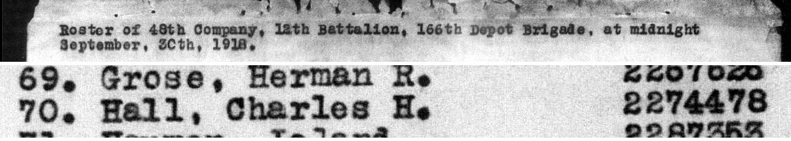
Roster of 48th Company, 12th Battalion, 166th Depot Brigade, at midnight September 30th, 1918. US federal record, U.S. National Archives, image via FamilySearch, public domain. See it on the full page. - Roster of Detachment Medical Department, Post Hospital, Vancouver Barracks, Washington at midnight Dec. 31, 1918. United States, Enlisted and Officer Muster Rolls and Rosters, 1916-1939 (FS 3346936; NARA 85713803), Roll 1988. NARA, via FamilySearch. NARA Roll 1988, DGS 106823790, images 1521 (header) and 1524 (line). original at familysearch.org. Cited for Charles Hall.Archived copy held: 8 files (JSON, image, table), fetched 24 Oct 2026.
Transcription we hold (1)
Roster of Detachment Medical Department, Post Hospital, Vancouver Barracks, Washington at midnight Dec. 31, 1918 ... 63. Hall, Charles H. 2,274,47[8]
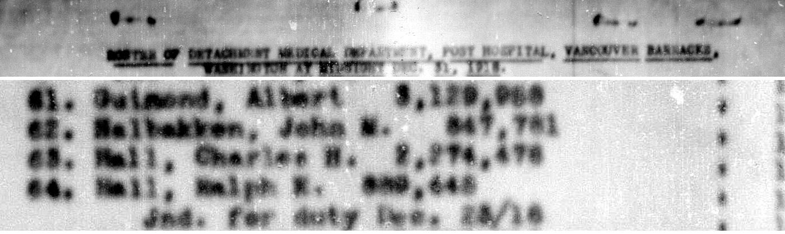
Roster of Detachment Medical Department, Post Hospital, Vancouver Barracks, Washington at midnight Dec. 31, 1918. US federal record, U.S. National Archives, image via FamilySearch, public domain. See it on the full page. - United States, Social Security Numerical Identification Files (NUMIDENT), 1936-2007. United States, Social Security Numerical Identification Files (NUMIDENT), 1936-2007. FamilySearch. original at familysearch.org. Cited for Biruta Zeltīte Sirlaka, Mārtiņš Vilhelms Sirlaks.Archived copy held: 6 files (JSON, search log), fetched 21 Oct 2026.
1 index row we hold: United States, Social Security Numerical Identification Files (NUMIDENT), 1936-2007
Name Event Date Place Relatives Record Biruta Zeltite Balks Birth 3 Jun 1919 Cesis Vidzem*, parent: Martins V Sirlaks; parent: Emma Smukulis FamilySearch 6K3K-6CZC Transcriptions we hold (2)
Biruta Zeltite Sirlaks; AKA Biruta Balks; Birth 3 Jun 1919 Cesis Vidzem*; Death 30 Jun 2002; father Martins V Sirlaks; mother Emma Smukulis
Biruta Zeltite Sirlaks … Birth 3 Jun 1919 Cesis Vidzem* … Death 30 Jun 2002 … AKA Biruta Balks
- Washington, Deaths and Burials, 1810-1960; Washington, County Marriages. Washington, Deaths and Burials, 1810-1960; Washington, County Marriages. FamilySearch. original at familysearch.org. Cited for Lola Lucille Alderson.Archived copy held: 4 files (JSON, search log, text), fetched 21 Oct 2026.
1 index row we hold: Washington, Deaths and Burials, 1810-1960
Name Event Date Place Relatives Record Infant Helgerson Death 14 Jan 1914 (born 14 Jan 1914, Wash.) Tacoma, Pierce, Washington parent: C.W. Helgerson; parent: Lola Alderson FamilySearch HVQR-M86Z - United States Social Security Death Index. United States Social Security Death Index. FamilySearch. original at familysearch.org. Cited for Elvīra Antonija Sirlaka.Archived copy held: 6 files (JSON, search log), fetched 21 Oct 2026.
1 index row we hold: United States, Social Security Death Index
Name Event Date Place Relatives Record Elvira Danenbergs Death 18 Jun 2011 (born 09 Jan 1912) Milwaukee, Wisconsin FamilySearch JPMS-PM7 Transcription we hold (1)
Elvira Danenbergs; Death 18 Jun 2011 Milwaukee, Wisconsin; Birth 09 Jan 1912; 18 Jun 2011 verified by family; issued Ohio
- United States, Social Security Death Index. United States, Social Security Death Index. FamilySearch. original at familysearch.org. Cited for Emma Smukule.Archived copy held: 6 files (JSON, search log), fetched 21 Oct 2026.
1 index row we hold: United States, Social Security Death Index
Name Event Date Place Relatives Record Emma Sirlaks Death Oct 1970 (born 06 Jan 1885) Southfield, Oakland, Michigan FamilySearch JRNP-MMG Transcription we hold (1)
Emma Sirlaks; Death Oct 1970 Southfield, Oakland, Michigan; Birth 06 Jan 1885; age 85; ZIP 48075; issued Ohio
- Washington, County Marriages, 1855-2008. Washington, County Marriages, 1855-2008. FamilySearch. original at familysearch.org. Cited for Charles Henry Hall, Estella May Alderson.Archived copy held: 6 files (JSON, search log), fetched 21 Oct 2026.
1 index row we hold: Washington, County Marriages, 1855-2008
Name Event Date Place Relatives Record Stella M Rowley Birth 1916 parent: Carrie M Newman; parent: W S Alderson; spouse: Charles H Hall FamilySearch Q2ZV-1VF4 - Washington, County Marriages, 1855-2008. Washington, County Marriages, 1855-2008. FamilySearch. original at familysearch.org. Cited for Estella May Alderson, William S. Rowley.Archived copy held: 4 files (JSON), fetched 21 Oct 2026.
1 index row we hold: Washington, County Marriages, 1855-2008
Name Event Date Place Relatives Record Estella M Alderson Birth 1916 parent: May E Newman; spouse: William S Rowley; parent: Winter S Alderson FamilySearch QPMN-ZW9T - United States, Enlisted and Officer Muster Rolls and Rosters, 1916-1939 (3346936). United States, Enlisted and Officer Muster Rolls and Rosters, 1916-1939 (3346936). FamilySearch. original at familysearch.org. Archived copy held: 5 files (JSON, image, table), fetched 24 Oct 2026.
1 index row we hold: United States, Enlisted and Officer Muster Rolls and Rosters, 1916-1939
Name Event Date Place Relatives Record Charles H Hall MilitaryService 30 Nov 1918 United States FamilySearch WBTC-YBZM - all marriage collections (search). all marriage collections (search). FamilySearch. original at familysearch.org. Archived copy held: 3 files (JSON, search log), fetched 24 Oct 2026.
42 index rows we hold; 58 withheld (may be living, or not on this site): Alabama County Marriages, 1711-1992; Alabama, Marriages, 1816-1957; Arkansas, County Marriages, 1837-1957
Name Event Date Place Relatives Record Edgel Hall Birth 09 May 1941 Richwood, West Virginia Sibling: Garnett Hall; ParentChildInLaw: Kathy Hitchens; Sibling: Bradley Hall; Grandparent: Ethan Hall; parent: Laura M King Hall; child: Matthew Hall; Sibling: Elloise Martin; Grandparent: Owen Hall; Sibling: Elbert Hall; Relative: Virgil Wilson; Sibling: Evelina Marlowe; Sibling: Frances Aurthur FamilySearch QK5G-7Y9H Edgel Hall Obituary 29 Dec 2010 (born 09 May 1941, Richwood, West Virginia) Denton, Maryland, United States child: Jason Hall; Sibling: Frances Aurthur; Sibling: Iris N Murphy; Sibling: Evelina Marlowe; Sibling: Kenneth E Hall; Grandparent: Victoria Hudson; Grandparent: James Hitchens Jr; child: Tanya Hall; child: Matthew Hall; Grandparent: Alexa Hudson; spouse: Bernice Mccabe Hall; Sibling: Elloise Martin FamilySearch QK5H-1HJ3 Edgel Hall Birth 09 May 1941 Richwood, West Virginia Grandparent: Victoria Hudson; ParentChildInLaw: Kathy Hitchens; Sibling: Evelina Marlowe; Sibling: Elloise Martin; child: Tanya Hall; Sibling: Kenneth E Hall; child: James Hitchens; Sibling: Bradley Hall; Sibling: Elbert Hall; Grandparent: James Hitchens Jr; child: Matthew Hall; Sibling: Garnett Hall FamilySearch QK5L-TZDF Frank L Hall Birth 1889 parent: Orin Hall; parent: Anna Heath; spouse: Grace E Mccabe FamilySearch K81P-M71 Charles K. Hall Birth 1874 spouse: Mamie McCabe FamilySearch QKZS-78MB Maggie S. Hall Birth 1847 spouse: Alfred McCabe FamilySearch VF9X-VRZ Mary Hall Birth 1888 parent: Elizabeth; parent: Albert Hall; spouse: William McCabe FamilySearch VF38-QRX Frank Hall Birth 1862 spouse: Rose McCabe; parent: Frank Hall; parent: Mary FamilySearch FHDX-MZ5 Patrick Hall Birth 1842 parent: Catharine; parent: Francis; spouse: Catharine McCabe FamilySearch FHSR-5MG Sarah Katherine Hall Birth 28 Apr 1916 Russelville, Logan, Kentucky parent: Hattie Wren; parent: Samuel Dawson Hall; spouse: Newell Irvin Mc Cabe FamilySearch XXV6-793 Mary Jane Hall Birth 1860 parent: William H Hall; spouse: John M Mc Cabe; parent: Susan Marsland FamilySearch Q2CF-GY73 Archibald Hall Birth 1847 parent: Robert; parent: Mary; spouse: Jennie McCabe FamilySearch Q2CN-Y439 Archibald Hall Birth 1848 New York parent: Mary; spouse: Jennie McCabe; parent: Robert Hall FamilySearch 249T-5GD Margaret Hall Birth 1845 parent: Mary Rodgers; spouse: James McCabe; parent: Henry Hall FamilySearch Q2C2-RCNB Margaret Hall Birth 1845 spouse: James McCabe FamilySearch Q2CN-HFGH Frank Hall Birth 1862 parent: Frank Hall; spouse: Rose McCabe; parent: Mary FamilySearch FCSJ-S2W Fannie M. Hall Birth 1880 parent: Roger W. Hall; parent: Emma Hall; spouse: Frank H. McCabe FamilySearch N44L-89B Elbert Hall Birth 1913 parent: G W Hall; spouse: Ruth McCabe; parent: Corinna Hall FamilySearch QP91-98YQ Elbert Hall Birth 1913 parent: G W Hall; parent: Corinna Hall; spouse: Ruth Mccabe FamilySearch QJ8B-NMLG Agnes J Hall Birth 1872 spouse: Andrew F McCabe FamilySearch K86L-P95 Bernard Earl Hall Unknown born 1906 Vergennes parent: Flora; spouse: Dora Elizabeth Mccabe; parent: Fred FamilySearch KFYN-M47 Bernard Earl Hall Birth 1906 parent: Ford Hall; parent: Flora Russell; spouse: Dora Elizabeth McCabe FamilySearch QPQV-F78W Edith Hall Birth 1880 spouse: Peter Mccabe FamilySearch N749-JYF Clark Hall Birth 1872 spouse: Eliza McCabe FamilySearch F7SR-FMB Carrie M Hall Residence 14 Jun 1899 Bath, Me spouse: John A Mccabe FamilySearch KCJ4-FWZ Clark Hall Birth 1872 spouse: Eliza McCabe FamilySearch NM16-B9Z Linnie C Hall Birth 1897 parent: Inez Warner; spouse: Irene Esther McCabe; parent: Frank Hall FamilySearch K8N6-NWP James H Hall Birth 1877 parent: Louise Hines; parent: Alva; spouse: Grace McCabe FamilySearch FFR1-PY8 James H Hall Birth 1876 spouse: Grace McCabe; parent: Louise Himes; parent: Alva FamilySearch Q2MT-VJMS Charles K. Hall Ethnicity born 1874 spouse: Mamie McCabe FamilySearch FQ46-M83 Annie May Hall Birth 1920 parent: Ed Hall; parent: Fanny Gibson; spouse: Arthur McCabe FamilySearch QK9V-H9QD William H Hall Unknown born 1845 Adams parent: Angeline A Roberts; spouse: Maria B Mccabe; parent: William A Hall FamilySearch Q288-FJGR James Robert Hall Birth 1890 parent: Cela Borne; parent: Alex Hall; spouse: Blanche Frances Gilkeson McCabe FamilySearch QV1M-DFQC Patrick Hall Birth 1842 spouse: Catharine McCabe; parent: Francis Hall; parent: Catharine FamilySearch N4SK-QX8 Frank Hall Birth 1862 , , Scotland spouse: Rose Mc Cabe; parent: Frank Hall; parent: Mary FamilySearch N4NC-GJC Elbert Hall Ethnicity born 1913 spouse: Ruth McCabe FamilySearch F8DC-63X Miss Maud Hall Birth 1873 spouse: Mr John W McCabe FamilySearch Q293-GLNC Miss Maud Hall Birth 1873 spouse: Mr John W McCabe FamilySearch Q293-LW41 Marshall Bill Hall Underwood, Jr Obituary 14 October 2022 (born 3 October 1930, Wilder, Fentress, Tennessee, United States) Sparta, White, Tennessee, United States SiblingInLaw: Marylou; SiblingInLaw: John Cunningham; spouse: Mari Ellen McCabe Underwood; Sibling: Muriel Blaylock; parent: Marshall Hall Underwood; SiblingInLaw: Vickie Underwood; child: Connie; Sibling: Harold Underwood; Sibling: Mary Elizabeth Savage; parent: Vernia Mae Robinson Underwood; child: Robert; Sibling: Helen Cunningham FamilySearch XMKH-W1B3 Constance Ann Connie Hall McCabe Obituary 7 March 2023 (born 1 June 1927) Gulfport, Harrison, Mississippi, United States child: Bruce McCabe; Grandparent: Amity McCabe; child: Andrew McCabe; child: Sharon McCabe; Grandparent: Tyler McCabe; ParentChildInLaw: Dixon; child: Brian McCabe; Grandparent: Ryan McCabe; Grandparent: Alex McCabe; Grandparent: Collins McCabe; Grandparent: Patrick Boulware; child: Gary McCabe FamilySearch XMLM-KBKL Charles Hall Birth U. S. A. spouse: Delia McCabe; child: Lillian Hall Lebeck FamilySearch 2WPX-BS1 Fannie M. Hall Birth 1880 parent: Roger W.; spouse: Frank H. McCabe; parent: Emma Hall FamilySearch FHKK-BYC - Full-Text search (Washington and Oregon county records). Full-Text search (Washington and Oregon county records). FamilySearch. original at familysearch.org. Archived copy held: 1 file (text).
- S-sweep-hall-charles-sr-https-gravelocator-cem-va-gov-ngl. VA Nationwide Gravesite Locator. original at gravelocator.cem.va.gov. Archived copy held: 5 files (search log).
- multiple (CA Death Index, OR Death Index, TX Deaths, VA Master Index). multiple (CA Death Index, OR Death Index, TX Deaths, VA Master Index). FamilySearch. original at familysearch.org. Archived copy held: 7 files (JSON, search log), fetched 24 Oct 2026.
200 index rows we hold (the first 100 of 200): California, County Birth and Death Records, 1800-1994; California, Death Index, 1940-1997; England and Wales, Death Registration Index 1837-2007
Name Event Date Place Relatives Record Charles S Hall Death 1961 (born 1890) Sussex, England, United Kingdom FamilySearch QVCG-BYXY Charles L Hall Death 1961 (born 1891) Dorset, England, United Kingdom FamilySearch QVCG-FZTL Charles W Hall Death 1961 (born 1891) Yorkshire, England, United Kingdom FamilySearch QVCG-BYX1 Charles Henry Hall MilitaryService Apr 1919 (born 12 Sep 1890) Vancouver, Clark, Washington, United States FamilySearch Q5GN-L53Z Charles Henry Hall MilitaryService Apr 1919 (born 12 Sep 1890) Vancouver, Clark, Washington, United States FamilySearch QPRR-BNHG Charles E Hall Death 01 Dec 1961 (born 11 May 1891, , , Illinois) Chicago, Cook, Illinois, United States parent: Eli E Hall; parent: Mary FamilySearch QV9J-MSV9 Charles Adom Hall Death 28 Feb 1961 (born 25 Sep 1891, Fontain) Eagle Grove, Wright, Iowa, United States parent: Margaret Gobel Gobel; parent: Cazzie Hall FamilySearch 61KF-LSHJ Charles Lawrence Hall, Sr Obituary 24 Sep 1961 (born about 1887) Greensboro, North Carolina FamilySearch Q5Q4-LNXW Charles Lawrence Hall, Sr Obituary 23 Sep 1961 (born about 1887, Alamance County) Greensboro, North Carolina child: Elvie C Hall; child: Mrs Mary H May; child: Charles L Hall, Jr; child: Mrs Emma Alcon; Sibling: J C Hall; Sibling: Mrs Charlie Hultimes; child: Robert E Hall; child: Mrs Robena Summers; child: Clyde M Hall FamilySearch Q5QS-S3C6 Charles A Hall Obituary December 1958 (born about 1893) Boston, Suffolk, Massachusetts, United States FamilySearch QPB4-6W16 Charles G Hall Obituary 22 May 1966 (born about 1887) Lewiston, Idaho FamilySearch Q53S-9SVP Charles G Hall Obituary 20 May 1966 (born about 1887) Lewiston, Idaho household: Claude A Adams, Marshall Reed Abbott, Peter Williams, Fr Albert Austen, Rev Merle Wood, Pastor Paul Wietzke FamilySearch Q5SB-DN63 Charles G Hall Obituary 21 May 1966 (born about 1887) Lewiston, Idaho FamilySearch Q5SB-B6LR Frederic Charles Hall Death 09 Oct 1961 (born 1891) FamilySearch 6ZWQ-XKC8 Charles Lawrence Hall Birth 1891 FamilySearch 624N-T1X9 L/sgt. William Charles Hall Death 02 Oct 1961 (born 27 Mar 1890) FamilySearch 6PMW-4M4K George Charles Hall Burial born 1890 Tower Hamlets, London Borough of Tower Hamlets, Greater London, England FamilySearch QPHL-4782 Charles E Hall Death 1962 (born 1891) Berkshire, England, United Kingdom FamilySearch QVCK-BK34 Seward Charles Hall MilitaryService 12 Jun 1919 (born 9 Jul 1891) Saratoga Springs, Saratoga, New York, United States FamilySearch QPR5-977M Seward Charles Hall MilitaryService 12 Jun 1919 (born 9 Jul 1891) Saratoga Springs, Saratoga, New York, United States FamilySearch Q563-HQN2 Charles D Hall Death 1960 (born 1890) Norfolk, England, United Kingdom FamilySearch QVCL-X7H2 Charles Hall Death 1960 (born 1890) Gloucestershire, England, United Kingdom FamilySearch QVCL-V2ZQ Mr Charles J Hall Obituary 21 Feb 1960 (born about 1888, West Troy, New York) Springfield, Massachusetts child: Mrs Burgess Carver; child: Charles R Hall; parent: May Dawley Hall; spouse: Helen B Thompson; parent: John Hall FamilySearch QP1S-9QL9 Mr Charles E Hall Obituary 17 Nov 1955 (born about 1885, Hillboro, Tennessee) Little Rock, Arkansas spouse: Mrs Minnie Cochran Hall; Sibling: Elmer Hall; Sibling: Will Hall; Sibling: Alvie Hall; child: Cecil Hall; child: Mrs J L Morris; child: Willard; Sibling: Guy; Sibling: Mrs Bell Halbrooks; child: Jack; Sibling: Mrs Grace Nicholson; Sibling: John Clety FamilySearch Q57J-5W5F Charles A Hall Death 07 May 1960 (born 1890) Tonawanda, Erie, New York FamilySearch 2CHJ-4VX Charles Hall Death 17 Dec 1960 (born 1891) Missoula, Montana FamilySearch VHCN-WB8 Charles Hall Obituary 11 Aug 1962 (born about 1885) Springfield, Massachusetts household: Rev Harry Bronkar FamilySearch Q53P-QMXQ Charles H. Hall Burial born 1891 Shippensburg, Cumberland, Pennsylvania, United States of America FamilySearch QVLB-6Q3K Charles Edward Hall Birth 17 Dec 1890 FamilySearch 6Y4P-XLY1 Charles Frederick Hall, Jr Birth 05 Jan 1891 FamilySearch X7JN-875L Seward Charles Hall Birth 14 Jul 1891 FamilySearch QVG6-PTLP Charles Dionysius Hall Burial born 1890 , Great Yarmouth Borough, Norfolk, England FamilySearch 6NLZ-8DJ6 Charles Hall Death Jan 1961 (born 02 Sep 1915) FamilySearch VMN9-D2F Charles T Hall Death 1961 (born 1905) Northamptonshire, England, United Kingdom FamilySearch QVCG-BYXB Charles E Hall Death 1961 (born 1908) London, England, United Kingdom FamilySearch QVCG-BYXT Charles E Hall Death 1961 (born 1910) Warwickshire, England, United Kingdom FamilySearch QVCG-KR3F Charles A P Hall Death 1961 (born 1912) Surrey, England, United Kingdom FamilySearch QVCG-BYXR Charles W Hall Death 1961 (born 1885) Yorkshire, England, United Kingdom FamilySearch QVCG-CDTY Charles E P Hall Death 1961 (born 1899) London, England, United Kingdom FamilySearch QVCG-KR3N Charles W Hall Death 1961 (born 1902) Yorkshire, England, United Kingdom FamilySearch QVCG-FZTP Charles Hall Death Mar 1961 (born 15 Sep 1917) FamilySearch J53Y-GMX Charles Hall Death Sep 1961 (born 13 Aug 1918) FamilySearch J1X3-8PT Charles Edward Hall MilitaryService 25 Jun 1919 (born 13 Sep 1892) Philadelphia, Pennsylvania, United States FamilySearch QPRR-Y96W Charles S Hall MilitaryService 12 Oct 1909 (born 26 Oct 1880) Chattanooga, Hamilton, Tennessee, United States FamilySearch Q5GN-TWPZ Charles S Hall MilitaryService 12 Oct 1909 (born 26 Oct 1880) Chattanooga, Hamilton, Tennessee, United States FamilySearch QPRR-YP7T Charles Ellis Hall MilitaryService 31 Oct 1919 (born 9 Feb 1887) Lynchburg, Virginia, United States FamilySearch Q5GT-JGMM Charles Samuel Hall MilitaryService 20 Jun 1919 (born 14 Aug 1880) Wisconsin, United States FamilySearch QPRR-YF5Q Charles Ellis Hall MilitaryService 31 Oct 1919 (born 9 Feb 1887) Lynchburg, Virginia, United States FamilySearch QPRR-BKLZ Charles Samuel Hall MilitaryService 20 Jun 1919 (born 14 Aug 1880) Wisconsin, United States FamilySearch Q5GF-CMMM Franklin Charles Hall MilitaryService 20 Feb 1919 (born 2 Jan 1893) Cornplanter, Warren, Pennsylvania, United States FamilySearch Q56V-ZRW2 Charles Betram Hall MilitaryService 7 Dec 1921 (born 22 Oct 1902) Chicago, Cook, Illinois, United States FamilySearch QPRR-YRQG Charles Augustus Hall Death 1961 (born 1872, North Carolina) Winston-Salem, Forsyth, North Carolina, United States parent: Cornelius A. Hall; spouse: Nora Robertson Hall; parent: Sallie Phillips FamilySearch FGYN-MGT Charles Bennett Hall Death 27 Oct 1961 (born 20 Mar 1935) Roanoke, Roanoke (Ind. City), Virginia, Virginia, United States parent: Kitty Roop Hall; parent: Charles E Hall FamilySearch QVRC-8QC4 Charles Bunn Hall Death 1961 (born 1900, Wilkes Co., N.C.) Concord, Cabarrus, North Carolina, United States parent: Genela Hall; parent: Bunn Hall FamilySearch FGY3-TJ1 Charles Ellis Hall Death 27 Jun 1961 (born 09 Feb 1887) Lynchburg, Lynchburg, Virginia, United States parent: Thomas Bondurant Hall; parent: Nannie Ellis; spouse: Irene Burruss Stith Hall FamilySearch QVYG-4T9D Charles Lawrence Hall Death 1961 (born 1886, Alamance Co., N. C.) Burlington, Alamance, North Carolina, United States parent: Mary Jane Sutton Hall; parent: William Herbin Hall FamilySearch FGYC-WBH Charles Henry Hall Death 17 Nov 1961 (born 13 Sep 1884) Richmond, Richmond (Ind. City), Virginia, Virginia, United States spouse: Virginia Inez Tinsley Hall; parent: Betty Butler; parent: Timothy A Hall FamilySearch QVR8-Y7KG Charles Henry Hall Death 10 January 1961 (born 1916) Van Nuys, Los Angeles, California, United States parent: Matilda Wolf; spouse: Diana Hall; parent: Charles Hall FamilySearch QPSC-F9GS Charles Martin Hall Death 13 Dec 1961 (born 21 Jul 1888) Becker, Minnesota parent: Hanson FamilySearch V47H-P4D Charles W. Hall Death 19 Apr 1961 (born 17 Jan 1877) Nicollet, Minnesota parent: Hayden FamilySearch V47H-GSM Charles V Hall Death 07 Dec 1961 (born 12 Jul 1881, California) Stanislaus, California, United States parent: Reinhart FamilySearch VPW1-PDW Charles D Hall Death 09 May 1961 (born 17 Aug 1887, Ohio) Los Angeles, California, United States parent: Jarvis FamilySearch VPW1-PDS Charles H Hall Death 10 Jan 1961 (born 02 Sep 1915, Connecticut) Los Angeles, California, United States parent: Wolf FamilySearch VPW1-PDQ Charles Hall Birth 1889 FamilySearch QKH1-TM4M Charles R Hall Death 13 Feb 1961 (born 1937) Warrenton, Warren Township, Jefferson, Ohio, United States FamilySearch VKL3-TZK Charles Bertram Hall Death 27 Nov 1961 (born 22 Oct 1902, LaMarrs, Iowa) Chicago, Cook, Illinois, Illinois, United States spouse: Madeleine M Hall; parent: Bertha Clause; parent: Charles Hall FamilySearch QV9N-1GCC Charles Hall Death 7 Dec 1961 (born 1910) Cincinnati, Hamilton, Ohio, United States FamilySearch VKB6-FZV Charles M Hall Death 26 Aug 1961 (born 1872) East Liverpool, Columbiana, Ohio, United States FamilySearch VKLQ-BS2 Charles L Hall Death 28 Dec 1961 (born 1905) McCracken, Kentucky, United States FamilySearch QKC9-MMJB Charles Stanley Hall Death 3 January 1961 (born 1881, Tennessee) Memphis, Shelby, Tennessee, United States parent: Matilda Ann Keller; parent: Thomas W Hall; spouse: Carrie B Hall FamilySearch QKMS-CSVM Charles Hall Death 5 November 1961 (born 1935, Tennessee) Memphis, Shelby, Tennessee, United States parent: Rosa B Johnson; parent: Wiley Hall FamilySearch QKMS-68Z6 Charles B Hall Burial 30 Nov 1961 (born 1902) Chicago, Cook, Illinois, United States FamilySearch Q2HN-LGQH Charles Luther Hall Death 28 Dec 1961 (born 1905, Calvert City Kentucky) Paducah, McCracken, Kentucky, United States parent: William L Hall; parent: Ivy Faith FamilySearch QVJ5-8ZPX Charles Hall Death Jun 1961 (born 08140000) FamilySearch JPYJ-5ZS Charles Newton Hall Death 22 Dec 1961 (born 15 Mar 1877, Bland, Va.) Rock, Freeman, Mercer, W.Va. parent: Sam Hall; parent: Mary S. Chandler FamilySearch NMV3-KQL Charles H Hall Death 10 March 1961 (born 15 Sep, , Texas) Monaco parent: Cora Alice Peabody; parent: Charles H Hall FamilySearch K3HQ-23X Charles Betram Hall MilitaryService 7 Dec 1921 (born 22 Oct 1902) Chicago, Cook, Illinois, United States FamilySearch Q5GK-M1W2 Charles R Hall Death 1961 (born 1918) Yorkshire, England, United Kingdom FamilySearch QVCG-KR3V Charles Hall Death 1961 (born 1885) Yorkshire, England, United Kingdom FamilySearch QVCG-CDTP Charles R Hall Death 1961 (born 1877) Hampshire, England, United Kingdom FamilySearch QVCG-FZTG Charles F Hall Death 1961 (born 1896) Hampshire, England, United Kingdom FamilySearch QVCG-KR3J Charles C Hall Death 1961 (born 1900) Yorkshire, England, United Kingdom FamilySearch QVCG-FZ6H Charles A Hall Death 1961 (born 1893) Essex, England, United Kingdom FamilySearch QVCG-CDT5 Charles F Hall Death 1961 (born 1877) Essex, England, United Kingdom FamilySearch QVCG-CDTR Rev Charles Taber Hall Obituary 27 March 1961 (born about 1922, Chelsea) Boston, Suffolk, Massachusetts, United States child: Charles T, Jr; child: Mrs Philip Gannam; child: Mrs Robert Ingratham; child: Edward H FamilySearch Q53F-93VM Mrs Charles B Hall Obituary 03 Feb 1957 (born about 1898) Boston, Massachusetts FamilySearch Q5QV-R7YX Charles Alva Hall Obituary 29 Sep 1963 (born about 1932) Houston, Texas household: Robin Elizabeth Rowan, L B Hubbell, Fred K Kazetsky, James C Reed FamilySearch Q5QT-D36Q Mrs Charles B Hall Obituary 02 Feb 1957 (born about 1898) Boston, Massachusetts FamilySearch Q5QP-YRKM Charles F Hall Obituary 07 May 1958 (born about 1917) Boston, Massachusetts parent: Mrs Elizabeth Hall FamilySearch Q59Q-7KXL Charles F Hall Obituary 07 May 1958 (born about 1917) Boston, Massachusetts parent: Mrs Elizabeth Hall FamilySearch Q59Q-34JT Rev Charles Taper Hall Obituary 27 Mar 1961 (born about 1931, Chelsea) Boston, Massachusetts child: Mrs Robert Ingraham; child: Jackson O; child: Edward H; child: Charles T, Jr FamilySearch Q5QP-DW3M Charles Hall Death 24 April 1961 (born 1889, Meally, Johnson, Kentucky, United States) Paintsville, Johnson, Kentucky, United States parent: Elizabeth Ramey; parent: A J Hall FamilySearch QVJ5-CQLJ Charles W Hall Death 17 Feb 1961 (born 1884) Multnomah, Oregon spouse: Charlot Hall FamilySearch VZCH-3DC Charles Hall Death 1961 (born 1873) Marion, Oregon FamilySearch VZ4M-V8N Charles S Hall Death 1961 (born 1881) Wisconsin, United States FamilySearch V89J-T62 Charles Juniar Hall Death 23 Dec 1961 (born 1961) Spartanburg, Spartanburg, South Carolina, United States parent: Maybele Mellwoup; parent: Charles Hall FamilySearch Q2SK-8424 Charles C Hall Death 6 Sep 1961 (born 21 Nov 1886, Arcade, New York) Clinton, Clinton, Iowa, United States parent: Anna Marie Gannon Gannon; parent: Clifford Hall FamilySearch 61KF-28S6 Charles Hall Birth 13 Aug 1918 FamilySearch 6KQK-GN8F Charles Hall Birth 14 Aug 1880 FamilySearch 6KQK-WQP8 Charles M Hall Death 23 Apr 1961 (born 1919) Huntington, Suffolk, New York FamilySearch 2CHF-KPV - Texas, Comanche County Records, 1858-1955 (1831470). Texas, Comanche County Records, 1858-1955 (1831470). FamilySearch. original at familysearch.org. Archived copy held: 9 files (JSON, search log), fetched 23 Oct 2026.
96 index rows we hold; 104 withheld (may be living, or not on this site): Texas, Comanche County Records, 1858-1955
Name Event Date Place Relatives Record J C Hall Birth 1868 Mississippi spouse: Zella Hall; child: Imogene Hall FamilySearch QGN4-VWV1 Juanita Elizabeth Hall Birth 21 December 1919 Comanche, Texas, United States parent: Sarah Etta Clark; parent: Robert Harvey Hall FamilySearch QGNH-9TP1 Hall Birth 23 May 1907 Comanche, Comanche, Texas, United States parent: Hall; parent: Art G Hall FamilySearch QGN4-KGX9 Jack Glendon Hall Birth 31 Oct 1919 Gustine, Comanche, Texas, United States parent: Jess Allen Hall; parent: Maud Lena Mann FamilySearch QGNH-Q3L2 Oliver Franklin Hall Birth 01 Jul 1912 Comanche, Texas, United States parent: Monda Emma Woolum; parent: Henry Augustus Hall FamilySearch QGN4-K2BN Hall Birth 20 April 1911 Comanche, Texas, United States parent: Smith; parent: Elmer Hall FamilySearch QGNQ-PM3D Chester Elizabeth Hall Birth 27 Oct 1896 Comanche, Texas, United States parent: Nancy Louisa Messer; parent: John Albert Hall FamilySearch QGN4-5XL9 Hall Birth 22 September 1925 Comanche, Comanche, Texas, United States parent: Otho Thompson; parent: Thomas Monroe Hall FamilySearch QGN4-5FKG Samuel Richard Hall Birth 16 March 1925 De Leon, Comanche, Texas, United States parent: Richard Lemley Hall; parent: Nellie May Weaver FamilySearch QGN4-29NX Imogene Hall Birth 16 Mar 1926 Proctor, Comanche, Texas, United States parent: Zella Hall; parent: J C Hall FamilySearch QGN4-VWV5 Alpha Hall Birth 26 July 1916 Comanche, Texas, United States parent: R R Hall FamilySearch QGN4-P6HK Victor Leroy Hall Birth 17 May 1918 Comanche, Comanche, Texas, United States parent: Harvey Robert Hall; parent: Sarah Etta Clark FamilySearch QGN4-NZXL William Henry Hall Birth 06 Jun 1923 Carlton, Hamilton, Texas, United States parent: Nellie Lou Pearl Bolton; parent: William Albert Hall FamilySearch QGN4-RHML Roy Edward Hall Birth 1 October 1925 Lamkin, Comanche, Texas, United States parent: W A Hall; parent: Eunettie Hall FamilySearch QGN4-5F8F Luther Allen Hall Birth 04 Aug 1885 Comanche, Texas, United States parent: Ella May Ferguson; parent: Acie Bigs Hall FamilySearch QGN4-T9MT Hall Birth 9 January 1921 Comanche, Comanche, Texas, United States parent: Art Green Hall; parent: Francis T Plott FamilySearch QGN4-JQ7M Harvey Robert Hall Birth 04 Mar 1891 Comanche, Texas, United States parent: David Flur Hall; parent: Martha Elizabeth Rowe FamilySearch QGNH-S4BR Naomi Ruth Hall Birth 26 February 1903 Comanche, Texas, United States parent: John Albert Hall; parent: Nancy Louisa Messer FamilySearch QGN4-YSRJ Hall Birth 29 October 1914 Comanche, Comanche, Texas, United States parent: Audra Butts; parent: Lester Hall FamilySearch QGN4-T9P5 Jean Plott Hall Birth 12 Apr 1918 Comanche, Comanche, Texas, United States parent: Frances Theresa Plott; parent: Arthur Green Hall FamilySearch QGNH-MD59 Allie Hall Birth 18 August 1916 Comanche, Texas, United States parent: Nettie Bolton; parent: William Albert Hall FamilySearch QGNH-QQCX Calvin Maurice Hall Birth 19 November 1914 Comyn, Comanche, Texas, United States parent: Ed A Hall; parent: Dona E Swanner FamilySearch QGN4-FV23 Ora Mae Hall Birth 10 June 1881 Comanche, Texas, United States parent: Jessie Boring Hall; parent: Puella Logan FamilySearch QGNH-MS9X Martha Elena Hall Birth 18 February 1922 Comanche, Texas, United States parent: Dona Swanner; parent: Ed F Hall FamilySearch QGN4-PGZP Hall Birth 16 January 1912 Comanche, Comanche, Texas, United States parent: Morgan Hall; parent: Leata Merritt FamilySearch QGNH-3MBT Hall Birth 24 November 1913 Comanche, Texas, United States parent: Ida Hansard; parent: A E Hall FamilySearch QGNH-3PHM Elmer Bunyan Hall Birth 20 September 1896 Comanche, Texas, United States parent: John Franklin Hall; parent: Josephine Cordia Brown FamilySearch QGN4-R4N9 Hall Birth 13 November 1916 Comanche, Texas, United States parent: Newt Hall; parent: Nellie Hall FamilySearch QGNH-9B9S Earl Hall Birth 21 August 1900 Wilson, Comanche, Texas, United States parent: Martin B Hall; parent: Nancy Jane Roy FamilySearch QGN7-9YHQ Howard Lee Hall Birth 31 October 1915 Sidney, Comanche, Texas, United States parent: Daisy Pearl Austin; parent: Lee Hall FamilySearch QGN4-F4CK Hall Birth 14 March 1914 Comanche, Texas, United States parent: Dasy Austin; parent: Lee Hall FamilySearch QGNH-MX6D Ruth Leon Hall Birth 15 October 1902 Sipe Springs, Comanche, Texas, United States parent: Frances Theresa Plott; parent: Arthur Green Hall FamilySearch QGN4-LYHN Lucile Helen Hall Birth 29 May 1897 Comanche, Comanche, Texas, United States parent: Morgan Elliot Hall; parent: Leota Leona Merritt FamilySearch QGN4-26GP R E Hall Birth 1875 spouse: Stella Wright FamilySearch QPQJ-RJ8T Arthur Green Hall Birth 23 May 1907 Comanche, Comanche, Texas, United States parent: Frances Theresa Plott; parent: Arthur Green Hall FamilySearch QGN4-BJCQ Dale Lee Hall Birth 08 Jul 1907 Comanche, Comanche, Texas, United States parent: Wilson Hall; parent: Mattie Taylor FamilySearch QGN4-F4QD Hall Birth 31 October 1908 Comanche, Texas, United States parent: Galvin B Hall; parent: Hall FamilySearch QGNH-39JX Hall Birth 18 June 1911 Comanche, Texas, United States parent: Otho Thompson; parent: Thos M Hall FamilySearch QGNQ-PMQF Hall Birth 13 June 1916 Comanche, Texas, United States parent: Alvin Hall; parent: Hall FamilySearch QGN4-255D Alton Eugene Hall Birth 19 September 1919 Sidney, Comanche, Texas, United States parent: Druie L Hall; parent: Ethel Mae Phillips FamilySearch QGN4-YS1C Ida Clifton Hall Birth 05 Oct 1894 Comanche, Texas, United States parent: Nancy Louisa Messer; parent: John Albert Hall FamilySearch QGN4-Y5V2 Ed F Hall Birth 24 Jun 1886 Comanche, Texas, United States parent: Annie Clayton; parent: T S Hall FamilySearch QGN4-P8ZX Eulala Ruth Hall Birth 22 Apr 1922 Board Church, Comanche, Texas, United States parent: Robert Harvey Hall; parent: Sarah Etta Clark FamilySearch QGN4-RHM9 Judith Hall Birth 22 Sep 1924 Comanche, Comanche, Texas, United States parent: Mary Otho Thompson; parent: Thomas Monroe Hall FamilySearch QGN4-V4CZ Sarah Marie Hall Birth 16 Jan 1912 Comanche, Comanche, Texas, United States parent: Leota Leona Merritt; parent: Morgan Elliott Hall FamilySearch QGNH-9N7T Lester Morgan Hall Birth 21 November 1918 Comanche, Comanche, Texas, United States parent: Lester Morgan Hall; parent: Lettie Myrtle Alsup FamilySearch QGNH-MS9T Zona Alena Hall Birth 30 May 1887 Gustine, Comanche, Texas, United States parent: Martha E Row; parent: Newton F Hall FamilySearch QGN4-J5BF Mabel May Hall Birth 19 Mar 1901 Comanche, Texas, United States parent: John Albert Hall; parent: Nancy Louisa Messer FamilySearch QGN4-KCG6 Hall Birth 10 January 1914 Comanche, Texas, United States parent: Monroe Hall; parent: Hall FamilySearch QGN4-LK34 Henry Thomas Hall Birth 29 September 1892 Sipe Springs, Comanche, Texas, United States parent: Lucy Belle Bryant; parent: Roland Hall FamilySearch QGN4-PMZ6 Mildred Novelle Hall Birth 15 May 1923 Sidney, Comanche, Texas, United States parent: Mahala Catherine Guy; parent: John Henry Hall FamilySearch QGN4-BJX1 Donald Rex Hall Birth 17 Jun 1924 Gustine, Comanche, Texas, United States parent: Ollie Mae Taber; parent: Alvin Lee Hall FamilySearch QGN4-FKJV Herman Leo Hall Birth 11 November 1922 Wilson, Comanche, Texas, United States parent: Holcie Hall; parent: Lula Pearl Gray FamilySearch QGN4-KCBM Marian Montez Hall Birth 12 November 1900 Sipe Springs, Comanche, Texas, United States parent: Arthur G Hall; parent: Frances Theresa Plott FamilySearch QGN4-BWGG Bob Wayland Hall Birth 17 September 1925 Lamkin, Comanche, Texas, United States parent: William Albert Hall; parent: Nettie Pearl Bolton FamilySearch QGN4-PG5N Druie Lyman Hall Birth 18 November 1888 Comanche, Comanche, Texas, United States parent: Martha Roe; parent: Flur Hall FamilySearch QGN4-53LV Hall Birth 11 December 1914 Comanche, Texas, United States parent: Ethel Phillips; parent: Drury Hall FamilySearch QGN4-5N63 John Henry Hall Birth 04 Feb 1899 Comanche, Texas, United States parent: Nancy Louisa Messer; parent: John Albert Hall FamilySearch QGN4-B7GQ Hall Birth 29 March 1916 Comanche, Texas, United States parent: Harvey Hall; parent: Etta Hall FamilySearch QGN4-KZBC Jessie Louise Hall Birth 24 September 1913 Comanche, Texas, United States parent: Sarah Etta Clark; parent: Robert Harvey Hall FamilySearch QGN4-Y6G9 Alton Henry Hall Birth 26 Aug 1914 Sidney, Comanche, Texas, United States parent: Henry August Hall; parent: Manda Emer Woolum FamilySearch QGN4-R1JD Helen Jane Hall Birth 07 Jun 1922 De Leon, Comanche, Texas, United States parent: Nellie Mae Weaver; parent: Richard Limley Hall FamilySearch QGN4-TM78 Hall Birth 18 February 1911 Sidney, Comanche, Texas, United States parent: Mittie Gray; parent: Luther Hall FamilySearch QGN4-2XLK Hall Birth 31 October 1908 Comanche, Comanche, Texas, United States parent: Hall FamilySearch QGN4-KGJJ Hall Birth 20 February 1905 Comanche, Comanche, Texas, United States parent: Fannie Hall; parent: Art Hall FamilySearch QGN4-GKBD Hall Birth 15 May 1923 Sidney, Comanche, Texas, United States parent: Kate Guy; parent: John Hall FamilySearch QGN4-RVX4 Cecil Tommy Hall Birth 15 Apr 1911 Board Church, Comanche, Texas, United States parent: Alvin Lee Hall; parent: Ollie May Tabor FamilySearch QGN4-Y5PH Henry Augustus Hall Birth 22 Mar 1888 Comanche, Texas, United States parent: David Aaron Hall; parent: Martha Joanna Nelson FamilySearch QGN4-NLBQ John Clifford Hall Birth 31 October 1908 Comanche, Comanche, Texas, United States parent: Gaines B Hall; parent: Mary Kilpatrick Hall FamilySearch QGN4-F11C Hall Birth 09 May 1906 Comanche, Comanche, Texas, United States parent: Hall; parent: Wilson Hall FamilySearch QGN4-YTFM Ruby Franklin Hall Birth 07 Nov 1908 Gustine, Comanche, Texas, United States parent: Ollie May Tabor; parent: Alvin Lee Hall FamilySearch QGN4-FVMY De Witt Hall Birth 9 May 1891 De Leon, Comanche, Texas, United States parent: Harriett Elizabeth Holt; parent: Henry Taylor Hall FamilySearch QGN4-P9HV Robert Lee Hall Birth 29 Mar 1916 Comanche, Texas, United States parent: Robert Harvey Hall; parent: Sarah Etta Clark FamilySearch QGN4-26V8 Harvey Jack Hall Birth 01 Apr 1924 Gustine, Comanche, Texas, United States parent: Sarah Etta Clark; parent: Harvey Robert Hall FamilySearch QGN4-NPQR Hall Birth 15 May 1918 Gustine, Comanche, Texas, United States parent: H R Hall; parent: Etta Hall FamilySearch QGN4-K2WV Hall Birth 08 Sep 1913 Comanche, Texas, United States parent: M L Hall; parent: J A Hall FamilySearch QGNH-94M6 Hall Birth 02 Nov 1903 Comanche, Comanche, Texas, United States parent: Morgan Hall; parent: M M Hall FamilySearch QGN4-KZGW Marvin Warren Hall Birth 22 Nov 1906 Gustine, Comanche, Texas, United States parent: Ollie May Tabor; parent: Alvin Lee Hall FamilySearch QGN4-VJ4D Newton F Hall Birth 1837 La spouse: Martha E Row; child: Zona Alena Hall FamilySearch QGN4-J5BL Holcie Hall Birth 1897 Bell Texas spouse: Lula Pearl Gray; child: Herman Leo Hall FamilySearch QGN4-KCB3 Roland Hall Birth 1858 Mississippi spouse: Lucy Belle Bryant; child: Henry Thomas Hall FamilySearch QGN4-PMZV John Franklin Hall Birth 1872 Lipan Texas spouse: Josephine Cordia Brown; child: Elmer Bunyan Hall FamilySearch QGN4-R4NQ Bleven Hall Birth 1904 Okla spouse: Norrie Thompson FamilySearch QGN4-NG3V Lee Hall Birth 1885 Hamilton Texas spouse: Daisy Pearl Austin; child: Howard Lee Hall FamilySearch QGN4-KZ32 Maggie Tilitha Hall Birth 1870 Georgia child: Allie Amanda Banner; spouse: John Frances Banner FamilySearch QGN4-NGTK Maggie Tlitha Hall Birth 1870 Murry Georgia child: Winnie Fansler Banner; spouse: John Fansler Banner FamilySearch QGN4-PDKT Lula Zudibell Hall Birth 1893 Ala child: Albert Jacob Patterson; spouse: Joseph E Patterson FamilySearch QGN4-259T Henry Taylor Hall Birth 1846 Nacogdoches spouse: Harriett Elizabeth Holt; child: De Witt Hall FamilySearch QGN4-P9H1 Josephine Hall Birth 1858 Louisiana child: James Jasper Smith; spouse: James Jasper Smith FamilySearch QGN4-JRK8 Mary Josephene Hall Birth 1852 Louisiana child: Mary Etta Smith; spouse: James Joseph Smith FamilySearch QGN4-J5BQ Mary Elizabeth Hall Birth 1880 Texas child: Esther Ioma Vineyard; spouse: Isaac Martin Vineyard FamilySearch QGN4-BJ99 Arthur Green Hall Birth 1872 Sipe Springs Texas child: Ruth Leon Hall; spouse: Frances Theresa Plott FamilySearch QGN4-LYH2 Ida Clifton Hall Birth 1894 Alabama child: Frederick Norman Stewart; spouse: William Walter Stewart FamilySearch QGN4-FKMD Ed A Hall Birth 1885 Ala child: Calvin Maurice Hall; spouse: Dona E Swanner FamilySearch QGN4-FV2G Cora Hall Birth 1879 Comanche Texas child: Etha Oma Bowman; spouse: Edwin Bowman FamilySearch QGNH-3GXL Ida Clifton Hall Birth 1895 Ala spouse: Walter William Stewart; child: Bernice Maurine Stewart FamilySearch QGN4-JSNL - United States, World War II Draft Registration Cards, 1942 (1861144). United States, World War II Draft Registration Cards, 1942 (1861144). FamilySearch. original at familysearch.org. Archived copy held: 15 files (JSON, search log), fetched 23 Oct 2026.
199 index rows we hold (the first 100 of 199); 1 withheld (may be living, or not on this site): United States, World War II Draft Registration Cards, 1942
Name Event Date Place Relatives Record Charles Gates Hall MilitaryDraftRegistration 1942 (born 13 Oct 1890) Fresno, Fresno, California, United States FamilySearch V48N-N8S Charles Raymond Hall MilitaryDraftRegistration 1942 (born 12 Sep 1891, Vinita, Oklahoma) Mullan, Idaho, United States FamilySearch QVJT-K8LF Alfred Charles Hall MilitaryDraftRegistration 27 Apr 1942 (born 23 Sep 1890, Minneapolis, Minnesota) Minneapolis, Hennepin, Minnesota, United States Relative: Thos Hall FamilySearch QKCC-S1GT Charles Athon Hall MilitaryDraftRegistration 27 Apr 1942 (born 20 Oct 1890, Boston, Massachusetts) , , Washington DC, United States Relative: D M Reidy FamilySearch QKC4-6GC2 Charles Ralph Hall MilitaryDraftRegistration 1942 (born 02 Nov 1890) Dayton, Montgomery, Ohio, United States FamilySearch X5H9-TMZ Charles Hall MilitaryDraftRegistration 1942 (born 11 Jun 1890) Akron, Summit, Ohio, United States FamilySearch X5H9-R26 Charles Leroy Hall MilitaryDraftRegistration 1942 (born 25 Nov 1891) Mill Township, Tuscarawas, Ohio, United States FamilySearch X5H9-TM9 Archie Charles Hall MilitaryDraftRegistration 1942 (born 28 Sep 1890) Olinda, , California, United States FamilySearch V48Z-TQZ Charles Samuel Hall MilitaryDraftRegistration 1942 (born 02 Feb 1891) McDonald, Washington, Pennsylvania, United States FamilySearch VQFG-5SH Charles Harry Hall MilitaryDraftRegistration 1942 (born 28 Oct 1890) Elmwood, Hartford, Connecticut, United States FamilySearch X5VZ-F26 Charles Joseph F Hall MilitaryDraftRegistration 1942 (born 16 Aug 1891) Portsmouth, , Virginia, United States FamilySearch V1KR-JC4 Charles Alonzo Hall MilitaryDraftRegistration 1942 (born 07 Aug 1890) Pittsburgh, Allegheny, Pennsylvania, United States FamilySearch VQFG-5MB Charles David Hall MilitaryDraftRegistration 1942 (born 29 Aug 1891) Brownstown, Jackson, Indiana, United States FamilySearch X5JT-Y2F Charles Thomas Hall MilitaryDraftRegistration 1942 (born 30 Dec 1890) Delhi, , Louisiana, United States FamilySearch X5MS-WM8 Charles Hall MilitaryDraftRegistration 27 Apr 1942 (born 11 Dec 1890, Humansville, Missouri) Missoula, , Montana, United States Relative: Marion Hall FamilySearch Q2SD-LW81 Charles Edward Hall MilitaryDraftRegistration 1942 (born 27 Jan 1890) New York City, New York, New York, United States FamilySearch XTWS-RQM Charles Hall MilitaryDraftRegistration 27 Apr 1942 (born 18 Oct 1890, Henry, Missouri) Iola Township, Allen, Kansas, United States Relative: Rose Hall FamilySearch QKV3-29JM Leroy Charles Hall MilitaryDraftRegistration 1942 (born 18 Jun 1890) Long Valley, Morris, New Jersey, United States FamilySearch X558-F29 Charles Edson Hall MilitaryDraftRegistration 1942 (born 11 May 1891) Chicago, Cook, Illinois, United States FamilySearch V1K9-D6J Charles Albert Hall MilitaryDraftRegistration 04 May 1942 (born 29 Jun 1890, Eureka, Kansas) Winfield, Cowley, Kansas, United States Relative: C A Hall FamilySearch QKV3-29KY Charles Hall MilitaryDraftRegistration 1942 (born 25 Jun 1890) Annapolis, Anne Arundel, Maryland, United States FamilySearch F38Q-5PK Charles Sanders Hall MilitaryDraftRegistration 1942 (born 22 Feb 1890) Kingsland, Cleveland, Arkansas, United States FamilySearch J4M8-FPK Charles Lawrence Hall MilitaryDraftRegistration 1942 (born 13 Nov 1890) Detroit, Wayne, Michigan, United States FamilySearch J4SY-YSP Charles Hall MilitaryDraftRegistration 1942 (born 01 Mar 1890) Aberdeen, Harford, Maryland, United States FamilySearch F38Q-5PJ Charles Samuel Hall MilitaryDraftRegistration 1942 (born 02 Aug 1891) Redwood City, San Mateo, California, United States FamilySearch V48X-8ZV Charles T Hall MilitaryDraftRegistration 1942 (born 06 May 1890) Chicago, Cook, Illinois, United States FamilySearch V1K9-DX6 Charles Otto Hall MilitaryDraftRegistration 1942 (born 28 Dec 1891) Charleston, Kanawha, West Virginia, United States FamilySearch X5KP-9QS Charles Henry Hall MilitaryDraftRegistration 1942 (born 17 Sep 1890) Richmond, , Virginia, United States FamilySearch V1KR-JC7 Charles Hall MilitaryDraftRegistration 1942 (born 04 Sep 1891) Ross Township, Allegheny, Pennsylvania, United States FamilySearch VQFG-5MX Charles Edgar Hall MilitaryDraftRegistration 1942 (born 20 Feb 1890) Chicago, Cook, Illinois, United States FamilySearch V1K9-D6N Charles Atwood Hall MilitaryDraftRegistration 1942 (born 19 Jun 1891) Farmington, Hartford, Connecticut, United States FamilySearch X5L9-2X3 Charles Clement Hall MilitaryDraftRegistration 1942 (born 10 Oct 1890) Spencer, Owen, Indiana, United States FamilySearch X5JT-Y26 Charles Edwin Hall MilitaryDraftRegistration 1942 (born 19 Apr 1891) Providence, , Rhode Island, United States FamilySearch V1V6-DR7 Kyle Charles Hall MilitaryDraftRegistration 1942 (born 10 Dec 1891) Brazoria, Brazoria, Texas, United States FamilySearch XPRN-4MW Charles Hall MilitaryDraftRegistration 1942 (born 25 Oct 1891) Philadelphia, Philadelphia, Pennsylvania, United States FamilySearch VQFG-5M6 Charles William Hall MilitaryDraftRegistration 1942 (born 02 Mar 1890) Philadelphia, Philadelphia, Pennsylvania, United States FamilySearch VQFG-5SK Charles Henry Hall MilitaryDraftRegistration 1942 (born 12 Nov 1890) Brookfield, , Massachusetts, United States FamilySearch V12X-XD6 Charles Andrew Hall MilitaryDraftRegistration 27 Apr 1942 (born 25 Dec 1890, Albion, New York) Tonawanda, Erie, New York, United States Relative: Mary Hall FamilySearch QKV7-4F2P Charles Wiley Hall MilitaryDraftRegistration 1942 (born 02 Mar 1890) New Martinsville, Wetzel, West Virginia, United States FamilySearch X5KP-9ZS Charles Maurice Hall MilitaryDraftRegistration 27 Apr 1942 (born 30 Oct 1891, Cuba Republic, Kansas) Kansas City, , Missouri, United States Relative: H F Bohrn FamilySearch QKVS-ZP8H Charles L Hall MilitaryDraftRegistration 1942 (born 18 Nov 1890) Baltimore, Baltimore, Maryland, United States FamilySearch F38Q-R3D Walter Charles Hall MilitaryDraftRegistration 1942 (born 08 Oct 1891) Chester, Delaware, Pennsylvania, United States FamilySearch VQFG-RZQ Charles Frederick Hall MilitaryDraftRegistration born 03 Aug 1891, Denver, Colorado Denver, , Colorado, United States Relative: C F Hall FamilySearch QKC4-7N6N Charles Hall MilitaryDraftRegistration 1942 (born 05 Dec 1890) Pittsburgh, Allegheny, Pennsylvania, United States FamilySearch VQFG-5MJ Charles Emory Hall MilitaryDraftRegistration 27 Apr 1942 (born 11 Aug 1890, Washington, District Of Columbia) , , Washington DC, United States Relative: Franc G Hall FamilySearch QKC4-6FMM Charles Lewis Hall MilitaryDraftRegistration 1942 (born 12 May 1891) San Fernando, Los Angeles, California, United States FamilySearch V48T-YDH Charles Edward Hall MilitaryDraftRegistration 26 Apr 1942 (born 07 Apr 1890, Newcomb, New York) Long Lake, Hamilton, New York, United States Relative: Gertrude V Hall FamilySearch QKV7-4NBN Charles Hall MilitaryDraftRegistration 1942 (born 20 Jan 1891) Philadelphia, Philadelphia, Pennsylvania, United States FamilySearch VQFG-5MF Charles Perry Hall MilitaryDraftRegistration 27 Apr 1942 (born 15 Feb 1890, Troupsburg, New York) West Union, Steuben, New York, United States Relative: Elizabeth Hall FamilySearch QKV7-4WQD Charles Lee Hall MilitaryDraftRegistration 1942 (born 19 Jul 1890) Fort Smith, Sebastian, Arkansas, United States FamilySearch J4M8-FPF Charles Hiram Hall MilitaryDraftRegistration 25 Apr 1942 (born 18 Dec 1891, Oyster Bay, New York) Williston Park, Nassau, New York, United States Relative: Lydia Hall FamilySearch QKV7-4V3T Orson Charles Hall MilitaryDraftRegistration 26 Apr 1942 (born 07 Jul 1890, Rockville, Utah) Pine Valley, Washington, Utah, United States Relative: Philena Hall FamilySearch QKV9-RHN5 Charles William Hall MilitaryDraftRegistration 1942 (born 03 Jan 1890) Greenwood, Sebastian, Arkansas, United States FamilySearch J4M8-FPG Charles Walter Hall MilitaryDraftRegistration 1942 (born 16 Aug 1891) Los Angeles, Los Angeles, California, United States FamilySearch V4D4-512 Charles Ellis Hall MilitaryDraftRegistration 27 Apr 1942 (born 12 Jun 1891, Westmoreland, Virginia) , , Washington DC, United States Relative: Ruby Hall FamilySearch QKC4-6GCB Charles Aubrey Hall MilitaryDraftRegistration 1942 (born 01 Mar 1891) Mineola, Wood, Texas, United States FamilySearch XPRF-131 Charles Whit Hall MilitaryDraftRegistration 1942 (born 30 Nov 1890) Corpus Christi, Nueces, Texas, United States FamilySearch XPRF-16V Charles Alva Hall MilitaryDraftRegistration 27 Apr 1942 (born 22 Aug 1890, Hyrum, Utah) Salt Lake City, Salt Lake, Utah, United States Relative: R J Twiggs FamilySearch QKV9-YWWD Charles R Hall MilitaryDraftRegistration 1942 (born 17 Mar 1890) , , California, United States FamilySearch V48L-9SQ Charles Maurice Hall MilitaryDraftRegistration 1942 (born 11 Jul 1890) Mount Pleasant, Isabella, Michigan, United States FamilySearch J4SY-YSY Charles Spurgeon Hall MilitaryDraftRegistration 1942 (born 14 May 1890) New York City, New York, New York, United States FamilySearch XTWS-RWL Augustine Allen Charles Hall MilitaryDraftRegistration 1942 (born 07 Jan 1890) Hoxsie, Kent, Rhode Island, United States FamilySearch V1V6-D5R Charles Henry Hall MilitaryDraftRegistration 1942 (born 17 Dec 1891) Dover, Kent, Delaware, United States FamilySearch X5Z3-P32 Leonard Charles-Simon Hall MilitaryDraftRegistration 25 Apr 1942 (born 24 Nov 1891, Carlinville, Illinois) St Louis, St Louis, Missouri, United States Relative: Lillian L Hall FamilySearch QKVS-Z8VF Charles Alvin Hall MilitaryDraftRegistration 1942 (born 11 Feb 1890) Delaware City, New Castle, Delaware, United States FamilySearch X5Z3-P3V Charles Frederick Hall MilitaryDraftRegistration 1942 (born 05 Jan 1891) North Plymouth, Plymouth, Massachusetts, United States FamilySearch V12X-XDH Edward Charles Hall MilitaryDraftRegistration 1942 (born 20 Jun 1890) Chicago, Cook, Illinois, United States FamilySearch V1K9-DVX Charles F Hall MilitaryDraftRegistration 1942 (born 30 Jul 1891) Butler, Butler, Pennsylvania, United States FamilySearch VQFG-59C Charles Henderson Hall MilitaryDraftRegistration 1942 (born 09 Mar 1890) Groom, Carson, Texas, United States FamilySearch XPRF-166 Charles Bewell Hall MilitaryDraftRegistration 1942 (born 29 May 1890) Detroit, Wayne, Michigan, United States FamilySearch J4SY-YS4 Charles H Hall MilitaryDraftRegistration 1942 (born 17 Jul 1891) Big Beaver, Lawrence, Pennsylvania, United States FamilySearch VQFG-59J Charles James Hall MilitaryDraftRegistration 1942 (born 02 Apr 1890) Millsboro, Sussex, Delaware, United States FamilySearch X5Z3-P3L Charles Hall MilitaryDraftRegistration 1942 (born 16 Jan 1891) Paicines Township, San Benito, California, United States FamilySearch V48N-938 Charles Hall MilitaryDraftRegistration 1942 (born 21 Dec 1890) Reading, Berks, Pennsylvania, United States FamilySearch VQFG-5MN Charles Henry Hall MilitaryDraftRegistration 1942 (born 31 Dec 1891) Tomah, Monroe, Wisconsin, United States FamilySearch X53D-6M3 Charles Hall MilitaryDraftRegistration 1942 (born 16 Jan 1891) Coalinga, Fresno, California, United States FamilySearch V48N-31Z Charles Bernard Hall MilitaryDraftRegistration 1942 (born 18 Jul 1890) Versailles Township, Allegheny, Pennsylvania, United States FamilySearch VQFG-599 Charles Allen Hall MilitaryDraftRegistration 1942 (born 24 Sep 1890) Philadelphia, Philadelphia, Pennsylvania, United States FamilySearch VQFG-5MY Charles Hamilton Hall MilitaryDraftRegistration 1942 (born 04 Oct 1890) Folsom, Sacramento, California, United States FamilySearch V48D-6FX Charles Harold Hall MilitaryDraftRegistration 1942 (born 09 Nov 1891) Dover, Strafford, New Hampshire, United States FamilySearch VKJJ-PNQ Leroy Charles Hall MilitaryDraftRegistration 1942 (born 18 Jan 1890) Long Valley, Morris, New Jersey, United States FamilySearch X558-FX7 Charles Andrew Hall MilitaryDraftRegistration 1942 (born 05 Jan 1891) Barrackville, Marion, West Virginia, United States FamilySearch X5KP-93K Joseph Charles Hall MilitaryDraftRegistration 1942 (born 31 Jul 1890) Chicago, Cook, Illinois, United States FamilySearch V1K9-6QX Charles William Hall MilitaryDraftRegistration 1942 (born 28 Oct 1890) Brooklyn, Kings, New York, United States FamilySearch F3CN-DYH Charles John Hall MilitaryDraftRegistration 1942 (born 24 May 1891) Paterson, Passaic, New Jersey, United States FamilySearch XRSL-C3D Lavern Charles Hall MilitaryDraftRegistration 1942 (born 21 Oct 1890) Jackson, Jackson, Michigan, United States FamilySearch J4SY-YKG Charles Henderson Hall MilitaryDraftRegistration 1942 (born 01 Aug 1891) Worth, Cook, Illinois, United States FamilySearch V1K9-D6Y Charles G Hall MilitaryDraftRegistration 1942 (born 09 Jul 1891) North Bergen, Hudson, New Jersey, United States FamilySearch XRYB-Y3P Frank Charles Hall MilitaryDraftRegistration 1942 (born 01 May 1891) Tenafly, Bergen, New Jersey, United States FamilySearch X558-Y2R Charles Hall MilitaryDraftRegistration 1942 (born 14 Jun 1890) Los Angeles, Los Angeles, California, United States FamilySearch V4D7-DV4 Charles Hall MilitaryDraftRegistration 1942 (born 31 May 1890) Milwaukee, , Wisconsin, United States FamilySearch X53D-DJD Charles Edwin Hall MilitaryDraftRegistration 27 Apr 1942 (born 05 Nov 1891, Holyoke, Colorado) La Junta, Otero, Colorado, United States Relative: Laura E Hall FamilySearch QKC4-7N6Z Charles Dalton Hall, Jr MilitaryDraftRegistration 1942 (born 30 Apr 1896) Everett, Middlesex, Massachusetts, United States FamilySearch V12X-XDS Charles Albert Hall MilitaryDraftRegistration 1942 (born 03 Jul 1880, Downing, Missouri) Portland, Oregon, United States FamilySearch QVJT-P8TP Charles Lee Hall MilitaryDraftRegistration 27 Apr 1942 (born 22 Jan 1887, New Madrid, Missouri) Wardell, Pemiscot, Missouri, United States Relative: Claudine Weaver FamilySearch QKVS-ZGB3 Charles Harold Hall MilitaryDraftRegistration 1942 (born 05 Feb 1893) Philadelphia, Philadelphia, Pennsylvania, United States FamilySearch VQFG-59K Charles William Hall MilitaryDraftRegistration 1942 (born 06 Mar 1888) Grand Ledge, Eaton, Michigan, United States FamilySearch J4SY-Y3Q Charles Hall MilitaryDraftRegistration 1942 (born 10 Oct 1887) Jamaica, Queens, New York, United States FamilySearch F3F7-LTT Charles Stanley Hall MilitaryDraftRegistration 1942 (born 17 Jun 1893) Wilkes-Barre, Luzerne, Pennsylvania, United States FamilySearch VQFG-5SZ Charles Leighten Hall MilitaryDraftRegistration 1942 (born 13 May 1886) Charlottesville, , Virginia, United States FamilySearch V1KR-JCZ - S-sweep-sirlaks-frontier-https-cemety-lv-public-deceaseds-340290-type. Cemety.lv. original at cemety.lv. Archived copy held: 3 files (image, web page).
- S-sweep-sirlaks-frontier-https-cemety-lv-public-deceaseds-340472-type. Cemety.lv. original at cemety.lv. Cited for Dāvis Sirlaks.Archived copy held: 1 file (web page).
Transcription we hold (1)
Dāvis Sirlaks Dzimšanas datums: 1886, Miršanas datums: 1952
Translation: Dāvis Sirlaks, born 1886, died 1952
- S-sweep-sirlaks-frontier-https-cemety-lv-public-deceaseds-340475-type. Cemety.lv. original at cemety.lv. Cited for Marija Gibboja.Archived copy held: 4 files (image, web page).
Transcription we hold (1)
Marija Sirlaka Dzimšanas datums: 1853, Miršanas datums: 1925
Translation: Marija Sirlaka, born 1853, died 1925
- S-sweep-sirlaks-frontier-https-www-raduraksti-arhivi-lv-objects-1-4-1. LVVA via Raduraksti. LVVA f. 235, apr. 4, l. 588 (Cēsu lauku latviešu draudzes 1855. g. laulāto un mirušo reģistrs), image 5, left page, no. 14. LVVA f. 235, apr. 4, l. 588, image 5. original at raduraksti.arhivi.lv. Cited for Ernestīne Sirlaka, Reinholds Sirlaks.Archived copy held: 6 files (image).
Transcriptions we hold (2)
eilfte Ab. 5 Uhr | zwanzigsten | 50. Dubinsay Glahsneek. Ernestine Sirlak. Elt. [?] Jahnis Sirlak u. d. [?] Lihse, luth. Pth: [?] Kahrlis Weidenbaum, [?] Lotte Massing[?], [?] Anne Weidenbaum
Translation: Born the 11th, 5 p.m.; baptised the 20th [March 1860]. No. 50. Glāznieki (Dubinsay[?] estate): Ernestīne Sirlak. Parents: Jānis Sirlak and wife Līze, Lutheran. Godparents: Kārlis Weidenbaum, Lotte Massing[?], Anne Weidenbaum.
achte Morg. 3 U. | dreyzwanzig | 156. Johannenhof Mühle. Reinhold Sirlak. Elt. Müller Jahnis Sirlak u. d. [?] Lihse, luth. Pth: [?] Jahn Massing[?], Glahsneek [Jehkab?] Weidenbaum, [?] Lotte Massing
Translation: Born the 8th, 3 a.m.; baptised the 23rd [September 1862]. No. 156. Johannenhof mill: Reinhold Sirlak. Parents: the miller Jānis Sirlak and wife Līze, Lutheran. Godparents: … Jānis Massing[?], Jēkabs[?] Weidenbaum of Glāznieki, Lotte Massing.
- S-sweep-sirlaks-frontier-jaunrauna-revision-1850-lvva-f-199-apr-1-l-3. LVVA via Raduraksti (existing crop). Jaunrauna revision 1850, LVVA f. 199, apr. 1, l. 376. LVVA f. 199, apr. 1, l. 376, image ?. Cited for Mārcis Sirlaks.Archived copy held: 3 files (image).
Transcription we hold (1)
XIV. Wihstakz … 15. Matz Sillak, Jahns Sohn … 28. … Sohn Peter Sillak 1848 geboren 2.
Translation: Farm XIV Vīstuči … no. 15 Matz Sillak, son of Jahn, 28 … son Peter Sillak, born 1848, age 2
- S-sweep-sirlaks-frontier-lvva-f-235-apr-12-l-678-image-116r-1895-no-1. LVVA via Raduraksti. LVVA f. 235, apr. 12, l. 678, image 116R, 1895 no. 135. LVVA f. 235, apr. 12, l. 678, image 116. Archived copy held: 2 files (image).
- S-sweep-sirlaks-frontier-lvva-f-235-apr-15-l-664-images-36-and-40-f-2. LVVA via Raduraksti. LVVA f. 235, apr. 15, l. 664, images 36 and 40; f. 235, apr. 7, l. 104, image 226. LVVA f. 235, apr. 15, l. 664, image 36. Archived copy held: 5 files (image).
- S-sweep-sirlaks-frontier-lvva-f-235-apr-7-l-517-image-391. Latvian State Historical Archives, via Raduraksti. LVVA f. 235, apr. 7, l. 517, image 391. LVVA f. 235, apr. 7, l. 517, image 391. Archived copy held: 2 files (image).
- Searches listed in README.md §1. Marriage Records. Washington State Digital Archives. original at digitalarchives.wa.gov. Archived copy held: 1 file (search log).
- See README for record IDs. Civil Records, Births. General Register Office (Ireland), via irishgenealogy.ie. original at irishgenealogy.ie. Cited for Susan May McCabe.Archived copy held: 1 file (search log).
- State of Oregon Death Index 1971-80, Hall, Susan McC. Oregon Death Index, 1971-2008. Oregon State Health Division, via FamilySearch. original at familysearch.org. Cited for Susan May McCabe.Archived copy held: 7 files (JSON, image, search log), fetched 23 Oct 2026.
1 index row we hold: Oregon Death Index, 1971-2008
Name Event Date Place Relatives Record Susan McC Hall Death 6 Feb 1972 (born 1886) Multnomah, Oregon, United States FamilySearch C26T-P13Z Transcription we hold (1)
HALL | SUSAN MCC | [spouse blank] | 26 | 02-06-72 | 72-02849 | 04- -86
- Susan Hall, d. Feb 1972 Portland. United States, Social Security Death Index. Social Security Administration, via FamilySearch. original at familysearch.org. Cited for Susan May McCabe.Archived copy held: 6 files (JSON, search log), fetched 23 Oct 2026.
1 index row we hold: United States, Social Security Death Index
Name Event Date Place Relatives Record Susan Hall Death Feb 1972 (born 09 Apr 1887) Portland, Multnomah, Oregon FamilySearch JGMH-R23 Transcription we hold (1)
Susan Hall | Death Feb 1972 Portland, Multnomah, Oregon | Birth 09 Apr 1887
- Teutonic, arr. 19 Nov 1903, p. 10. New York, Passenger Arrival Lists (Ellis Island), 1892-1925. NARA T715, via FamilySearch. FS 1:1:JFYL-32H; image 3:1:33SQ-G16T-943R. original at familysearch.org. Archived copy held: 3 files (JSON, search log), fetched 24 Oct 2026.
1 index row we hold: New York, Passenger Arrival Lists (Ellis Island), 1892-1925
Name Event Date Place Relatives Record Peter A. McCabe Immigration 19 November 1903 (born 1872) Ellis Island, New York City, New York, United States household: Owen Fervan FamilySearch JFYL-32H - Young Men to Leave for Service Next Week, Mariposa Gazette, 15 Sep 1917. Mariposa Gazette. California Digital Newspaper Collection. original at cdnc.ucr.edu. Cited for Charles Hall.Archived copy held: 2 files (JSON, search log).
Transcription we hold (1)
They will go to Camp Lewis for training ... Wednesday, Sept. 19th.—Walter A. Grace, William Pierce, Charles 11 Hall, William R. Bonds, Andrew Horgan.
Newspapers and obituaries
- 1898-11-04 school notice. Latviešu Avīzes. National Library of Latvia, periodika.lv. original at periodika.lv. Archived copy held: 2 files (JSON), fetched 25 Oct 2026.
- Behgļu sazinašanās (1916.04.07). Latviešu Bēgļu Apgādāšanas Centrālkomitejas Ziņojums. National Library of Latvia, periodika.lv. original at periodika.lv. Archived copy held: 2 files (JSON), fetched 25 Oct 2026.
- Charles Henry Hall obituary, Santa Ana, 16 Mar 2001. United States, GenealogyBank Obituaries, Births, and Marriages, 1980-2015. GenealogyBank, via FamilySearch. original at familysearch.org. Cited for Charles Henry Hall.Archived copy held: 3 files (JSON), fetched 21 Oct 2026.
1 index row we hold: United States, GenealogyBank Obituaries, Births, and Marriages, 1980-2015
Name Event Date Place Relatives Record Charles Henry Hall Birth about 1921 child: Charles; child: James; child: Steven; child: David; child: Susan Hall; child: Dale; child: Kathleen Danenberg; spouse: Stella FamilySearch QKKR-58Z9 - court news, 1929-12-16. Rūjienas Balss. National Library of Latvia, periodika.lv. Rūjienas Balss, Nr. 34 (16.12.1929), p. 1, 'Sodīti:' (periodika.lv issue 764462, article DIVL71). original at periodika.lv. Archived copy held: 7 files (JSON, image), fetched 27 Oct 2026.
- Death notice, Oto Smukulis (1964). exile press. National Library of Latvia, periodika.lv. original at periodika.lv. Archived copy held: 2 files (JSON), fetched 25 Oct 2026.
- Elvira A. Danenbergs (Nee Sirlaks). Obituaries. Milwaukee Journal Sentinel via Legacy.com; Heritage Funeral Homes. Milwaukee Journal Sentinel, 23 June 2011. original at legacy.com. Cited for Elvīra Antonija Sirlaka, Kalvis Danenbergs.Archived copy held: 1 file (web page), fetched 25 Oct 2026.
Transcriptions we hold (2)
Danenbergs, Elvira A. (Nee Sirlaks) Born to Eternal Life Saturday, June 18, 2011, at the age of 99 years. Beloved wife of the late Arvids. Loving mother of Peter (Kathleen), Liga (Wolfhart) Schubach and Kalvis (Melinda). Dear grandmother of Liga, Peter and Justin. Great-grandmother of Mneme. Also survived by nieces, nephews, other relatives and friends here and in Latvia. … Interment Arlington Park Cemetery.
Loving mother of Peter (Kathleen), Liga (Wolfhart) Schubach and Kalvis (Melinda). Dear grandmother of Liga, Peter and Justin. Great-grandmother of Mneme.
- Jaunie studenti. Jaunākās Ziņas. Latvian National Library, periodika.lv. Jaunākās Ziņas, 1936-09-05. original at periodika.lv. Cited for Arvīds Fricis Danenbergs.Archived copy held: 2 files (JSON), fetched 25 Oct 2026.
Transcription we hold (1)
… Monika Ceirāne, Arvīds Danenbergs, Harijs Danfelds, Anna Dardzāne …
- Jelgava un apkārtne.. Darbs (Jelgava). Latvian National Library, periodika.lv. Darbs, 1931-07-02. original at periodika.lv. Cited for Arvīds Fricis Danenbergs.Archived copy held: 2 files (JSON), fetched 25 Oct 2026.
Transcription we hold (1)
Realško[l]as nodaļā. … Arvids Danenbergs no Penkules
Translation: Modern (Realschule) section. … Arvids Danenbergs from Penkule
- Kanadā. Latvija Amerikā. Latvian National Library, periodika.lv. Latvija Amerikā, 1955-06-22. original at periodika.lv. Cited for Jānis Grīslis, Velta Skaidrīte Sirlaka.Archived copy held: 3 files (JSON), fetched 25 Oct 2026.
- Kanada 7 dienās. Jaunais Apskats. Latvian National Library, periodika.lv. Jaunais Apskats, Nr.17 (03.06.1955), p. 2. original at periodika.lv. Cited for Fricis Gailītis, Mirdza Augusta Sirlaka.Archived copy held: 2 files (JSON), fetched 25 Oct 2026.
- Montrealas Latviešu Palīdzības Biedrība, biedru saraksts 1948. gadā. Montreālas Latviešu Biedrības Ziņotājs. Latvian National Library, periodika.lv. Montreālas Latviešu Biedrības Ziņotājs, 1998-03-01. original at periodika.lv. Cited for Mirdza Augusta Sirlaka.Archived copy held: 2 files (JSON), fetched 25 Oct 2026.
Transcription we hold (1)
Sirlaks, Mirdza; Sirlaks, Velta;
- Mūsu jubilāri. Daugavas Vanagu Mēnešraksts. Latvian National Library, periodika.lv. Daugavas Vanagu Mēnešraksts, Nr.2 (01.03.1983), pp. 72–76. original at periodika.lv. Cited for Arvīds Fricis Danenbergs.Archived copy held: 2 files (JSON), fetched 25 Oct 2026.
Transcription we hold (1)
Arvīds Danenbergs, DV ap-bas Latvijas ciemā pie Garezerā valdes loc, 17. janv. atskatījās uz 70 mūža gadiem. Dzimis 1913. g. Vecauces pag. Beidzis LU lauksaimniecības fakultāti un strādāja par Talsu raj. agronomu. Ieradies ASV, 1949. g. viņš strādāja Ziemeļohaio lopu audzēšanas kooperatīvā, bet 1955. g. nopirka savu lauksaimniecību, ko turpina apsaimniekot.
Translation: Arvīds Danenbergs, board member of the DV branch in the Latvian village at Garezers, turned 70 on 17 January. Born 1913 in Vecauce parish. Graduated from the agricultural faculty of the University of Latvia and worked as the Talsi district agronomist. Arriving in the USA in 1949, he worked at a northern Ohio livestock-breeding co-operative, and in 1955 bought his own farm, which he still runs.
- Mūsu jubilāri. Daugavas Vanagu Mēnešraksts. Latvian National Library, periodika.lv. Daugavas Vanagu Mēnešraksts, Nr.1 (01.01.1987), pp. 75–79. original at periodika.lv. Cited for Elvīra Antonija Sirlaka.Archived copy held: 2 files (JSON), fetched 25 Oct 2026.
Transcription we hold (1)
Elvīrai Danenbergai, dzim. Sirlaka, piepildījās 75 mūža gadi. Dzimusi 1912. g. 9. janv. Rīgā. Skolas gadus pavadījusi Cēsīs. 1941. g. beigusi LU Ķīmijas fakultātes Farmācijas nod. ar maģistra grādu. Strādājusi Rīgā un vairākās provinces aptiekās. ASV apmetusies Ohio, un kopā ar vīru agr. Arvīdu uzaudzināja 2 dēlus un meitu. Strādāja par farmaceiti Tiffin Ohio. Pārceļoties uz Mičigenu, dzīvo savā farmā Garezera tuvumā.
Translation: Elvīra Danenberga, née Sirlaka, turned 75. Born 9 Jan 1912 in Rīga. Spent her school years in Cēsis. In 1941 graduated from the Pharmacy Section of the Chemistry Faculty of the University of Latvia with a master's degree. Worked in Rīga and several provincial pharmacies. In the USA settled in Ohio and with her husband, the agronomist Arvīds, raised 2 sons and a daughter. Worked as a pharmacist in Tiffin, Ohio. Moving to Michigan, she lives on her farm near Garezers.
- Mūsu jubilāri (Milvoku DV apvienība). Daugavas Vanagu Mēnešraksts. Latvian National Library, periodika.lv. Daugavas Vanagu Mēnešraksts, 2006-04-01. original at periodika.lv. Cited for Elvīra Antonija Sirlaka.Archived copy held: 2 files (JSON), fetched 25 Oct 2026.
Transcription we hold (1)
MILVOKU DV APVIENĪBA SVEIC SAVUS ZĪMĪGU GADU SASNIEGUŠOS JUBILĀRUS Elvīra DANENBERGS - 94 gadus veca, dzimusi 9. janvārī
Translation: The Milwaukee DV branch congratulates its members with milestone birthdays: Elvīra Danenbergs, 94, born 9 January
- No eekschzemehm (1898.11.04). Latviešu Avīzes; Latviešu Avīzes 1894.07.27; Zemgales Balss 1928.03.24. National Library of Latvia, periodika.lv. original at periodika.lv. Archived copy held: 2 files (JSON), fetched 25 Oct 2026.
- No mums šķīrusies Mirdza Gailīte. Laiks. Latvian National Library, periodika.lv. Laiks, Nr.35 (18.09.2010), p. 22, by Vilis Kalniņš. original at periodika.lv. Cited for Mirdza Augusta Sirlaka.Archived copy held: 2 files (JSON), fetched 25 Oct 2026.
Transcriptions we hold (2)
No mums šķīrusies Mirdza Gailīte (dzirn. [sic: dzim.] Sirlaks) dzimusi 1916. gada 17. janvāri Vidzemes skaistajā pilsētā Cēsis. … Pēc Otrā pasaules kara liktenis ģimeni aizveda uz Kanādu. … Pēc vīra aiziešanas mūžībā kādu laiku dzīvoja Detroitas apkaimē West Bloomfield savā dzīvoklī. Viņa 1990. gada sākumā iestājās Detroitas Daugavas Vanagu apvienībā … Mirdzas divas māsas arī dzīvoja West Bloomfield un Garezera (Long Lake) apkaimē. Pēc aiziešanas pensijā Mirdza Gailīte atgriezās Vindzorā, Kanādā … Mirdza Gailīte aizgāja mūžībā pēkšņi 2010. gada 5. jūlijā. Viņu izvadīja 10. jūlijā no Anderson Funeral Home Vindzorā. Nelaiķe guldīta smilšu kalniņā Toronto.
Translation: Mirdza Gailīte (née Sirlaks) has left us. Born 17 January 1916 in the beautiful Vidzeme town of Cēsis. … After the Second World War fate took the family to Canada. … After her husband's death she lived for a while in her apartment in West Bloomfield, near Detroit. In early 1990 she joined the Detroit Daugavas Vanagi branch … Mirdza's two sisters also lived in West Bloomfield and near Garezers (Long Lake). After retiring Mirdza Gailīte returned to Windsor, Canada … She died suddenly on 5 July 2010. The funeral was on 10 July from Anderson Funeral Home, Windsor. She was laid to rest in Toronto.
Mirdza Gailīte aizgāja mūžībā pēkšņi 2010. gada 5. jūlijā. Viņu izvadīja 10. jūlijā no Anderson Funeral Home Vindzorā. Nelaiķe guldīta smilšu kalniņā Toronto.
Translation: Mirdza Gailīte died suddenly on 5 July 2010. The funeral was on 10 July from Anderson Funeral Home in Windsor. She was buried in Toronto.
- Obituary of Arvids F. Danenbergs (unnamed Cass County paper). Michigan, Obituaries, 1820-2006. FamilySearch. original at familysearch.org. Cited for Arvīds Fricis Danenbergs, Žanis Danenbergs.Archived copy held: 7 files (JSON, image, search log), fetched 21 Oct 2026.
1 index row we hold: Michigan, Obituaries, 1820-2006
Name Event Date Place Relatives Record Arvids F Danenbergs Obituary 19 Feb 1996 (born 17 Jan 1913, Auce, Latvia) spouse: Elvira Danenbergs; child: Liga Schubach; child: Peter Danenbergs; child: Kalvis Danenbergs FamilySearch QL33-R24X Transcriptions we hold (2)
Mr. Arvids F. Danenbergs, 83, 56882 Point Rd., Kelsey Lake, Cassopolis, died Monday, Feb. 19, 1996 at Lee Memorial Hospital in Dowagiac, after injuries received in a two car accident in Penn Township. He was born Jan. 17, 1913 in Auce, Latvia.
and one brother, Zanis Danenbergs of Latvia.
- Olu karsch Cehsīs / Cehsneeki wasaras karstumā. Cēsu Avīze. Latvian National Library, periodika.lv. Cēsu Avīze, 1927-04-16 and Nr.26 (23.07.1927), p. 2. original at periodika.lv. Cited for Mārtiņš Vilhelms Sirlaks.Archived copy held: 2 files (JSON), fetched 25 Oct 2026.
Transcription we hold (1)
pee Sirlaka un Smukuļa pahrtikas bodēm … to newar sazit par tirgotāju Sirlaku. Wiņsch tikpat dsihws un kustigs kā aukstumā. Sirlaks pee tam weenigais no muhsu pilsehtas resnajeem, kas ikdeenas apmeklē Gaujas kurortus.
Translation: at Sirlaks's and Smukulis's food shops … that cannot be said of the merchant Sirlaks. He is as lively and brisk as in the cold. Sirlaks is the only one of our town's stout men who visits the Gauja bathing places every day.
- Pēc auto sadursmes miris agr. Arvīds Danenbergs. Laiks (Brooklyn). Latvian National Library, periodika.lv. Laiks, Nr.26 (06.04.1996), p. 7. original at periodika.lv. Cited for Arvīds Fricis Danenbergs, Ilze Balka, Liga Danenberg, Žanis Danenbergs.Archived copy held: 2 files (JSON), fetched 25 Oct 2026.
Transcriptions we hold (3)
KALAMAZŪ. (Vm.) - 19. februārī "Lee Memoral" slimnīcā "Dawagiac" [sic], pilsētā Mičiganā, pēc divu automašīnu sadursmes miris agronoms Arvīds Danenbergs. … A. Danenberga līdzbraucēja dzīvesbiedre Elvīra sadursmē guvusi ievainojumus … Arvīds Danenbergs dzimis 1913. gada 17. janvārī Tukumā. Latvijā ieguvis agronoma grādu, bet Vācijā maģistra grādu lauksaimniecībā. … Pēc kremācijas A. Danenbergam veltīts piemiņas brīdis notika 4. martā Garezera "Saulgriežos" … atvadu vārdus teica mirušā sievas māsa Mirdza Gailīte, meitas: Līga Šūbacha (Schubach) un Ilze Bērziņa. … skumst dzīvesbiedre Elvīra (atradās vēl slimnīcā), meitas, dēli ar ģimenēm, brālis Žanis Latvijā
Translation: KALAMAZOO. On 19 February, in Lee Memorial hospital in the city of Dowagiac, Michigan, the agronomist Arvīds Danenbergs died after a collision between two cars. … His wife Elvīra, riding with him, was injured … Arvīds Danenbergs was born 17 January 1913 in Tukums. He earned an agronomist's degree in Latvia and a master's in agriculture in Germany. … After cremation a memorial service for A. Danenbergs was held on 4 March at 'Saulgrieži', Garezers … farewells were spoken by the deceased's wife's sister Mirdza Gailīte and daughters Līga Šūbacha (Schubach) and Ilze Bērziņa. … Mourned by his wife Elvīra (still in hospital), daughters, sons with families, brother Žanis in Latvia
brālis Žanis Latvijā
Translation: brother Žanis in Latvia
meitas: Līga Šūbacha (Schubach) un Ilze Bērziņa
Translation: daughters: Līga Šūbacha (Schubach) and Ilze Bērziņa
- Penkules pagasta tiesa (1932-05-28/30/31). Valdības Vēstnesis. National Library of Latvia, periodika.lv. original at periodika.lv. Archived copy held: 1 file (text).
- Pie tiesas galda.. Cēsu Vēstis. Latvian National Library, periodika.lv. Cēsu Vēstis, Nr.265 (29.07.1938), pp. 2–3. original at periodika.lv. Cited for Dāvis Sirlaks.Archived copy held: 2 files (JSON), fetched 25 Oct 2026.
Transcription we hold (1)
Dāvis Sirlaks no Jaunraunas pag. Vīstučiem lūdz tiesu piespiest Emīli Sirlaku atdot viņam piederošu bišu saimi. Arī šo prasību kā nedibinātu atraida.
Translation: Dāvis Sirlaks of Vīstuči, Jaunrauna parish, asks the court to compel Emīlis Sirlaks to return a bee colony belonging to him. This claim too is dismissed as unfounded.
- South Bend Tribune obituary, 22 Feb 1996. Michigan, Obituaries, 1820-2006. FamilySearch. original at familysearch.org. Cited for Arvīds Fricis Danenbergs.Archived copy held: 7 files (JSON, image, search log), fetched 21 Oct 2026.
1 index row we hold: Michigan, Obituaries, 1820-2006
Name Event Date Place Relatives Record Mr Arvids F Danenbergs Obituary 1996 (born 17 Jan 1913, Auce, Latvia, Germany) Dowagiac, , , United States child: Liga Schubach; spouse: Elvira Sirlaks; child: Peter Danenbergs; child: Kalvis Danenbergs FamilySearch QVPB-M5RX Transcriptions we hold (2)
Arvids F. Danenbergs Jan. 17, 1913-Feb. 19, 1996
Mr. Danenbergs was a dairy farmer for many years. … He was a member of the Local Latvian Community Garezers, Three Rivers, and studied agriculture and science.
- Toronto (news column). Laiks (Brooklyn). Latvian National Library, periodika.lv. Laiks, Nr.83 (17.10.1970), p. 2. original at periodika.lv. Cited for Emma Smukule, Fricis Gailītis.Archived copy held: 2 files (JSON), fetched 25 Oct 2026.
Transcriptions we hold (2)
Izvadot māc. A. Briedim, 13. oktobrī Jorkas kapsētas latviešu nodalījumā apglabāja 9. oktobrī 85 g. vecumā mirušo Emmu Sirlaku. Viņa pārmaiņus dzīvojusi gan ASV, kur paliek divas meitas ar ģimenēm, gan - pēdējos gados - Toronto pie meitas Mirdzas Gailītes un znota - matēmatikas skolotāja Friča Gailīša, kas mira pērngada septembrī. Emma Sirlaka nedaudzu gadu laikā pārcieta vairākas smagas operācijas, amputācijā zaudējot vispirms vienu, bet pirms diviem gadiem arī otru kāju.
Translation: With Rev. A. Briedis officiating, Emma Sirlaka, who died on 9 October aged 85, was buried on 13 October in the Latvian section of York Cemetery. She had lived alternately in the USA, where two daughters survive with their families, and, in recent years, in Toronto with her daughter Mirdza Gailīte and son-in-law, the mathematics teacher Fricis Gailītis, who died last September. Within a few years Emma Sirlaka underwent several serious operations, losing first one leg and, two years ago, the other to amputation.
13. oktobrī Jorkas kapsētas latviešu nodalījumā apglabāja
Translation: buried on 13 October in the Latvian section of York Cemetery
- Velta Grislis, 19 September 1918 – 12 March 2015. Obituaries. Dignity Memorial (Hulse & English Funeral Home, St. Catharines). Dignity Memorial obituary 6359511. original at dignitymemorial.com. Cited for Jānis Grīslis, Velta Skaidrīte Sirlaka.Archived copy held: 1 file (web page), fetched 25 Oct 2026.
Transcription we hold (1)
Grislis, Velta. Peacefully on Thursday, March 12th, 2015 at Tufford Manor Nursing Home in her 97th year. Velta, beloved wife of the late Janis. Lovingly remembered by Andris Lauris and his family.
- Zudušie ASV: Miris Arvīds Danenbergs (in 'Ziņas un chronika'). Daugavas Vanagu Mēnešraksts. Latvian National Library, periodika.lv. Daugavas Vanagu Mēnešraksts, Nr.2 (01.04.1996), section beginning p. 46. original at periodika.lv. Cited for Arvīds Fricis Danenbergs, Emma Smukule.Archived copy held: 2 files (JSON), fetched 25 Oct 2026.
Transcriptions we hold (2)
1944.g. Arvīds ar sievu, 2 gadus vecu dēlu Pēteri un sievas māti Emmu Širlaku dodas bēgļu gaitās uz Vāciju.
Translation: In 1944 Arvīds, his wife, their two-year-old son Pēteris and his wife's mother Emma Širlaka fled as refugees to Germany.
Arvīds Fricis Danenbergs, dzimis 1913.g. 17. janvārī Tukuma apriņķa Stūrmuižas pagastā. Pēc 2.Jelgavas valsts ģimnāzijas beigšanas studē Lauksaimniecības Akadēmijā Jelgavā, ko beidz ar agronoma grādu. Strādā Talsu agronomiskā birojā. 1941.g. no Sv. Jāņa baznīcas Cēsīs uzsāk kopīgu ģimenes dzīvi ar farmaceiti Elvīru Širlaku. 1944.g. Arvīds ar sievu, 2 gadus vecu dēlu Pēteri un sievas māti Emmu Širlaku dodas bēgļu gaitās uz Vāciju. Tur turpina izglītību Štutgartes—Hohenheimas agrikultūras augstkolā, kur iegūst mākstera grādu agronomijā. 1949.g. izceļo uz ASV. … Miris pēkšņā nāvē auto katastrofā 1996. g. 19. februārī, atstājot sievu Elvīru, trīs bērnus — Pēteri, Kalvi, Līgu, 3 mazbērnus ASV, brāli Žani un vairākus radus Latvijā. Pārpelnots un pelnu urna nosūtīta uz Latviju.
Translation: Arvīds Fricis Danenbergs, born 17 January 1913 in Stūrmuiža parish, Tukums district. After finishing the 2nd Jelgava State Gymnasium he studied at the Agricultural Academy in Jelgava, graduating as an agronomist. He worked at the Talsi agronomy bureau. In 1941, from St John's church in Cēsis, he began family life with the pharmacist Elvīra Širlaka [sic]. In 1944 Arvīds, his wife, their two-year-old son Pēteris and his wife's mother Emma Širlaka fled as refugees to Germany. There he continued his studies at the Stuttgart-Hohenheim agricultural college, earning a master's degree in agronomy. In 1949 he emigrated to the USA. … Died suddenly in a car accident on 19 February 1996, survived by his wife Elvīra, three children (Pēteris, Kalvis, Līga), 3 grandchildren in the USA, his brother Žanis and several relatives in Latvia. Cremated; the urn was sent to Latvia.
Memoirs, letters and books
- Changes of Names and Adoptions. Oregon laws and resolutions, 1917 (uc1.b4378188) and 1919 (uc1.b4378189). HathiTrust (Univ. of California copy). 1917 vol. pp. 986–996 (seq 998–1008); 1919 vol. pp. 892–906 (seq 898–912). original at hdl.handle.net. Cited for Estella May Alderson, Winter Scott Alderson.Archived copy held: 12 files (text).
- My Life and Times (1912–1949). Email attachment from Pēteris Danenbergs to Peter, 2005-02-27; B2 danenberg-archive, wikitex Maildir. read it here Cited for Anna Sirlaka, Arvīds Fricis Danenbergs, Biruta Zeltīte Sirlaka, Dāvis Sirlaks, Elvīra Antonija Sirlaka, Emma Smukule, Ilze Balka, Marija Gibboja and 4 more.Archived copy held: 2 files (doc).
Transcriptions we hold (10)
my mother in Vecrauna (Old Rauna) and my father in Jaunrauna (New Rauna)
When WWI started in 1914, they left Rīga … and went to Cēsis
then my father opened a tavern while mother stayed at home as a housewife
We applied to go to the US, which we entered in July, 1949. … The ship landed in Boston
We lived in Haunstetten for four years (1945-1949).
The first two years of my life were spent in Torņukalns (Tower Hill), a suburb of Rīga.
my father’s mother had driven to our house in a horse-drawn wagon from Raunas Vīstuči. She lived with on a farm with my father’s brother Dāvis
At first we lived in a rented house in the Vinterkalns area, several km outside of Cēsis. … Mirdza was born in this house.
Here Ilze was born in 1945 and one year later, the twins Līga and Kalvis.
In the first year, I lived with father’s sister Anna.
Graves and memorial sites
- Aina Jurciņa. Timenote memorial pages, Sirlaks family (contributors 'liguce' and 'U_a090c459'). Timenote.info / Nekropole.info (CC-BY). timenote person id 11610902. original at timenote.info. Cited for Aina Modrīte Sirlaka, Alberts Jurciņš, Dāvis Sirlaks, Valdis Jurciņš.Archived copy held: 2 files (image, web page).
Transcription we hold (1)
Dzimšanas datums: 00.00.1920 Miršanas datums: 18.03.2003 … Pirmslaulību (cits) uzvārds: Sirlaka … Kapsēta: Gulbene, Vecie kapi … Dāvis Sirlaks — Tēvs — 1886–1952; Alma Sirlaka — Māte — 1887–1959; Valdis Jurciņš — Dēls — 04.03.1947–04.09.2019; Alberts Jurciņš — Vīrs — 14.12.1916–1953
Translation: Born 1920, died 18 Mar 2003; maiden name Sirlaka; cemetery Gulbene Old Cemetery; father Dāvis Sirlaks (1886–1952), mother Alma Sirlaka (1887–1959), son Valdis Jurciņš (1947–2019), husband Alberts Jurciņš (1916–1953)
- Pēteris Sirlaks. Timenote memorial pages, Sirlaks family. Timenote.info / Nekropole.info (CC-BY). timenote person id 11610905 (contributor 'liguce'). original at timenote.info. Cited for Anna Sirlaka, Natālija Emīlija Sirlaka, Pēteris Sirlaks.Archived copy held: 1 file (web page).
Transcription we hold (1)
Dzimšanas datums: 10.08.1847 Miršanas datums: 10.11.1896 … Tēva vārds: Mārcis … Kapsēta: Priekuļu pagasts, Jaunraunas kapi … Marija Sirlaka — Sieva — 00.00.1853 – 00.00.1925
Translation: Born 10 Aug 1847, died 10 Nov 1896; father's name Mārcis; cemetery Jaunrauna (Priekuļi parish); wife Marija Sirlaka 1853–1925
Family trees and family memory
- FamilySearch Family Tree: Brate (G4HY-2PS). FamilySearch Family Tree (collaborative; read-only pull 2026-10-21). original at familysearch.org. Cited for Brate.Archived copy held: 3 files (JSON), fetched 21 Oct 2026.
- FamilySearch Family Tree: Carrie May Newman (KGWM-KQ2). FamilySearch Family Tree (collaborative; read-only pull 2026-10-21). original at familysearch.org. Cited for Carrie May Newman.Archived copy held: 3 files (JSON), fetched 21 Oct 2026.
- FamilySearch Family Tree: Charles H Hall (P935-BVZ). FamilySearch Family Tree (collaborative; read-only pull 2026-10-21). original at familysearch.org. Cited for Charles Hall.Archived copy held: 6 files (JSON), fetched 21 Oct 2026.
- FamilySearch Family Tree: Charles Henry Hall (L51K-5RF). FamilySearch Family Tree (collaborative; read-only pull 2026-10-21). original at familysearch.org. Cited for Charles Henry Hall, Estella May Alderson.Archived copy held: 4 files (JSON), fetched 21 Oct 2026.
- FamilySearch Family Tree: Charles Royal (LHKT-Y2F). FamilySearch Family Tree (collaborative; read-only pull 2026-10-21). original at familysearch.org. Cited for Charles Royal, Mary Ann Gearhart.Archived copy held: 3 files (JSON), fetched 21 Oct 2026.
- FamilySearch Family Tree: Christopher Alderson (27S3-P23). FamilySearch Family Tree (collaborative; read-only pull 2026-10-21). original at familysearch.org. Cited for Christopher Alderson, Mary Veach.Archived copy held: 3 files (JSON), fetched 21 Oct 2026.
- FamilySearch Family Tree: Doken (G4HY-LYX). FamilySearch Family Tree (collaborative; read-only pull 2026-10-21). original at familysearch.org. Cited for Doken.Archived copy held: 3 files (JSON), fetched 21 Oct 2026.
- FamilySearch Family Tree: Edward Newman (L6VS-9M9). FamilySearch Family Tree (collaborative; read-only pull 2026-10-21). original at familysearch.org. Cited for Edward Newman, Harriet M Brate.Archived copy held: 3 files (JSON), fetched 21 Oct 2026.
- FamilySearch Family Tree: Elizabeth Flower (LHKV-T9Z). FamilySearch Family Tree (collaborative; read-only pull 2026-10-21). original at familysearch.org. Cited for Elizabeth Flower.Archived copy held: 3 files (JSON), fetched 21 Oct 2026.
- FamilySearch Family Tree: Estella May Alderson (L51K-T7N). FamilySearch Family Tree (collaborative; read-only pull 2026-10-21). original at familysearch.org. Cited for Estella May Alderson.Archived copy held: 3 files (JSON), fetched 21 Oct 2026.
- FamilySearch Family Tree: Harriet M Brate (L6VS-97W). FamilySearch Family Tree (collaborative; read-only pull 2026-10-21). original at familysearch.org. Cited for Harriet M Brate.Archived copy held: 3 files (JSON), fetched 21 Oct 2026.
- FamilySearch Family Tree: Mary Ann Gearhart (KLBC-135). FamilySearch Family Tree (collaborative; read-only pull 2026-10-21). original at familysearch.org. Cited for Mary Ann Gearhart.Archived copy held: 3 files (JSON), fetched 21 Oct 2026.
- FamilySearch Family Tree: Mary Catharine Royal (LR3M-1HS). FamilySearch Family Tree (collaborative; read-only pull 2026-10-21). original at familysearch.org. Cited for Mary Catharine Royal.Archived copy held: 3 files (JSON), fetched 21 Oct 2026.
- FamilySearch Family Tree: Mary Veach (L712-JH3). FamilySearch Family Tree (collaborative; read-only pull 2026-10-21). original at familysearch.org. Cited for Mary Veach.Archived copy held: 3 files (JSON), fetched 21 Oct 2026.
- FamilySearch Family Tree: Peter Hall (L51K-TLX). FamilySearch Family Tree (collaborative; read-only pull 2026-10-21). original at familysearch.org. Archived copy held: 3 files (JSON), fetched 21 Oct 2026.
- FamilySearch Family Tree: Peter McCabe (L51K-5D4). FamilySearch Family Tree (collaborative; read-only pull 2026-10-21). original at familysearch.org. Archived copy held: 3 files (JSON), fetched 21 Oct 2026.
- FamilySearch Family Tree: Reverend Christopher Alderson (LR39-MVR). FamilySearch Family Tree (collaborative; read-only pull 2026-10-21). original at familysearch.org. Cited for Christopher Alderson, Mary Catharine Royal.Archived copy held: 3 files (JSON), fetched 21 Oct 2026.
- FamilySearch Family Tree: Susan A McCabe (P93R-SLT). FamilySearch Family Tree (collaborative; read-only pull 2026-10-21). original at familysearch.org. Cited for Susan May McCabe.Archived copy held: 6 files (JSON), fetched 21 Oct 2026.
- FamilySearch Family Tree: William Robert Newman (9KW4-JD9). FamilySearch Family Tree (collaborative; read-only pull 2026-10-21). original at familysearch.org. Cited for William Robert Newman.Archived copy held: 3 files (JSON), fetched 21 Oct 2026.
- FamilySearch Family Tree: Winter Scott Alderson (L51K-5YQ). FamilySearch Family Tree (collaborative; read-only pull 2026-10-21). original at familysearch.org. Cited for Carrie May Newman, Winter Scott Alderson.Archived copy held: 3 files (JSON), fetched 21 Oct 2026.
- Gens Danenbergorum, danenberg.name (gh-pages build of 2016). danenberg.name as published 2016–2026 (gh-pages branch); snapshot ~/tmp/family-inventory/live-index.html, 2026-10-21. original at danenberg.name. Cited for Chronos Zarathustra Danenberg.Archived copy held: 1 file (web page).
- MyHeritage family tree 'Dzimta' of Peter's third cousin (his family site), member GEDCOM export of 26 Oct 2026. MyHeritage (site OYYV6UZ7SFYGLJ3O3OJBKYQQBQZBCPA, family tree 6); exported by Peter Danenberg as an invited member. original at myheritage.com. Cited for Agnese Voroņina, Aina Modrīte Sirlaka, Aksels Pirainens, Alberts Jurciņš, Aleksandrs Martinsons, Aletheia Saint-Saëns Danenberg, Alfrēds Jurciņš, Alfrēds Āboltiņš and 184 more.Archived copy held: 5 files (ged, search log, web page), fetched 21 Oct 2026.
Transcriptions we hold (438)
BIRT · 30 OCT 1883
DEAT · 30 DEC 1942 · Cēsis · AGE 59
BURI · Cēsu, Lejas Kapi
NAME Emma /Smukule/ · _MARNM Sirlaks
BIRT · 6 JAN 1885
RESI · Southfield, Michigan 48075, USA
DEAT · OCT 1970 · AGE 85
NAME Arvīds /Danenbergs/
BIRT · 4 JAN 1913
RESI · BET 1 AUG 1995 AND 1 JAN 1998 · Decatur, Van Buren, Michigan, United States
RESI · 19 FEB 1996 · La Grange, Cass, Michigan, United States · AGE 83
RESI · 1 AUG 1997 · Cassopolis, Cass, Michigan, United States · AGE 84
- Peter's tree, danenberg.sql, 2007–2015. git: family repository, danenberg.sql (last touched 2015-05-17). Cited for Addie Lee Foley, Alberts Danenbergs, Aletheia Saint-Saëns Danenberg, Alexander MacLachlan, Alyssa J., Amber Hall, Amihai Rigbi, Amihai Rigbi's wife and 137 more.Archived copy held: 2 files (sql).
- Peter, in conversation, 2026-10-25. harness session `family`, 2026-10-25. Cited for Catherine Elizabeth Hall.Archived copy held: 1 file (text).
Transcription we hold (1)
Is Catherine Hall (born 1922) still alive? — No
- Peter, in conversation, 2026-10-26. harness session `family`, 2026-10-26. Cited for Eos Danenberg.Archived copy held: 1 file (text).
Other sources
- Cēsis, alphabetical list. Latvijas tirdzniecības un rūpniecības adresu grāmata 1924. gads. Latvian National Library, gramatas.lndb.lv. Latvijas tirdzniecības un rūpniecības adresu grāmata 1924. gads (Rīga, 1924), Cēsis, 'Alfabetisks saraksts', p. 436 (scan 490); also the branch list ('Branžu saraksts'), 'Kolonialpreču tirgotavas', p. 438 (scan 492). original at gramatas.lndb.lv. Cited for Mārtiņš Vilhelms Sirlaks.Archived copy held: 6 files (JSON, image), fetched 25 Oct 2026.
Transcription we hold (1)
Sirlaks, M., pārtikas pr. tirgot., l. Katrinas ielā 13. … Smukuls, E., pārtikas tirgot., Palasta ielā 12.
Translation: Sirlaks, M., food-goods merchant, Lielā Katrīnas iela 13. … Smukuls, E., food merchant, Palasta iela 12.
- Charles Henry Hall (1891-1973). Find a Grave. original at findagrave.com. Archived copy held: 5 files (JSON, search log), fetched 23 Oct 2026.
- Danenbergs, Pēteris Valentīns. Latvju enciklopēdija 1962–1982 (published 1983). Latvian National Library, gramatas.lndb.lv. Latvju enciklopēdija (1983). original at gramatas.lndb.lv. Cited for Peter Valentins Danenbergs.Archived copy held: 2 files (JSON), fetched 25 Oct 2026.
Transcription we hold (1)
Danenbergs Pēteris Valentīns (dz. 1942. … Rīgā) — bioķīmiķis. (T. — Arvīds D., agr.; m. — Elvīra, dz. Sirlaka, farm.)
Translation: Danenbergs, Pēteris Valentīns (born 1942 … in Rīga), biochemist. (Father: Arvīds D., agronomist; mother: Elvīra, née Sirlaka, pharmacist.)
- Elvira A. Sirlaks Danenbergs. Arlington Park Cemetery, Greenfield, WI. Find a Grave. Memorial 139994199. original at findagrave.com. Cited for Elvīra Antonija Sirlaka.Archived copy held: 6 files (JSON), fetched 21 Oct 2026.
Transcription we hold (1)
Elvira A. Sirlaks Danenbergs 9 Jan 1912 – 18 Jun 2011 Arlington Park Cemetery Greenfield, Milwaukee County, Wisconsin Plot info: Block 37-A Lot 210 Space 8-a
- Emma Sirlaks. York Cemetery, Toronto. Find a Grave. Memorial 276607686. original at findagrave.com. Cited for Emma Smukule.Archived copy held: 6 files (JSON), fetched 21 Oct 2026.
Transcription we hold (1)
Emma Sirlaks 1885 – 1970 York Cemetery Toronto, Toronto Municipality, Ontario, Canada Plot info: Section A, Lot 379
- entry Danenbergs, Alberts. Lauksaimnieku un citu zemes īpašnieku adresu grāmata (1931). National Library of Latvia, gramatas.lndb.lv. original at gramatas.lndb.lv. Archived copy held: 2 files (JSON), fetched 25 Oct 2026.
- Jaunraunas pagasts. Lauksaimnieku un citu zemes īpašnieku adresu grāmata (1931). Latvian National Library, gramatas.lndb.lv. Lauksaimnieku un citu zemes īpašnieku adresu grāmata, 1931. original at gramatas.lndb.lv. Cited for Dāvis Sirlaks.Archived copy held: 2 files (JSON), fetched 25 Oct 2026.
Transcription we hold (1)
Sirlaks, Emīls, Kalnvīstučos, c. J. * Sirlaks, Dāvis, Lejas un Jaunvīstučos, c. J. Strubis, Jūlijs, Vidusvīstučos
Translation: Sirlaks, Emīls, at Kalna-Vīstuči; Sirlaks, Dāvis, at Lejas- and Jaun-Vīstuči; Strubis, Jūlijs, at Vidus-Vīstuči
- S-findagrave-63153279. Find a Grave. original at findagrave.com. Archived copy held: 2 files (JSON, search log), fetched 23 Oct 2026.
- Find a Grave Index. Find a Grave Index. FamilySearch. original at familysearch.org. Cited for Elvīra Antonija Sirlaka.Archived copy held: 6 files (JSON, search log), fetched 21 Oct 2026.
1 index row we hold: Find a Grave Index
Name Event Date Place Relatives Record Elvira A. Sirlaks Danenbergs Death 18 Jun 2011 (born 09 Jan 1912) FamilySearch QK1N-R1P9 Transcription we hold (1)
Elvira A. Sirlaks Danenbergs; Death 18 Jun 2011; Burial Greenfield, Milwaukee, Wisconsin; Birth 09 Jan 1912; age 99; findagrave GRid=139994199
- Searches listed in README.md §3. Nationwide Gravesite Locator; Find a Grave search; Death Records. U.S. Dept. of Veterans Affairs; Find a Grave; WA State Digital Archives. original at gravelocator.cem.va.gov. Archived copy held: 6 files (search log).
- Studio portrait of Marija Sirlaka (née Gibboja) with her sons Kārlis, Mārtiņš, Dāvis and Augusts and Mārtiņš's wife Emma, c. 1911–1913; mounted in a family album with a handwritten Latvian caption. Family album (holder not yet recorded); copies in Peter Danenberg's Google Photos. original at photos.google.com. Cited for Anna Sirlaka, Augusts Sirlaks, Dāvis Sirlaks, Ernestīne Sirlaka, Kārlis Sirlaks, Mārtiņš Vilhelms Sirlaks.Archived copy held: 2 files (image).
- Susan M. Hall (1886-1972), memorial 61572403. Find a Grave. Find a Grave. original at findagrave.com. Cited for Susan May McCabe.Archived copy held: 5 files (JSON, image, web page), fetched 25 Oct 2026.
Transcription we hold (1)
Susan M. Hall | Birth 1886 | Death 1972 | Mount Calvary Cemetery, Portland | Plot Sec GS, 307, 6 | Inscription: Mother